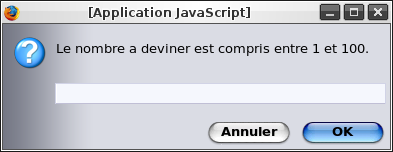

Ne me dites pas que vous n'avez jamais entendu parler du JavaScript ! o_O (Ou JS, pour les intimes.)
Ce langage de programmation Web véritablement magique qui rend n'importe quelle page morose en une vraie machine dynamique ! :magicien:
Il permet de faire interagir le visiteur avec la page, en réagissant différemment selon les actions de celui-ci. Un langage merveilleux qui, comme vous l'aviez sûrement compris, sera notre sujet d'étude tout au long de ce tutoriel...
Alors, envie de créer un site interactif et attrayant ? Ne vous inquiétez pas, ce n'est pas difficile... Après tout, nous sommes sur le Site du Zér0 !
(Nous allons partir du principe que la seule chose que vous ayez appris est l'XHTML et le CSS, d'après le cours de M@teo. Si ce n'est pas le cas, vous allez devoir réapprendre des choses que vous savez déjà, mais sous une autre forme...).
Avant de nous lancer dans des lignes de code, je vous ai préparé un petit avant-propos qui ne vous fera aucun mal ;) . Vous en apprendrez un peu plus sur le JS (JavaScript), et nous ferons par la même occasion un peu d'histoire. Ce chapitre n'est pas placé en annexe car il apporte des éléments importants : prenez donc le temps de le lire.
Le JavaScript est un langage de programmation. Pour être plus précis, c'est un langage orienté objet : quand on code en JavaScript, on se base sur des objets. Je n'en dis volontairement pas plus pour l'instant, car ce sujet sera abordé un peu plus loin, lorsque vous aurez déjà acquis les connaissances requises.
Pour une définition plus complète, voici un "remix" de ce que nous propose notre ami Google :
Citation : Google, define: JavaScript
Le JavaScript est un langage de script basé sur la norme ECMAScript. Il s'insère dans le code (x)HTML d'une page web, et permet d'en augmenter le spectre des possibilités. Ce langage de POO [Programmation Orientée Objet], faiblement typé, est exécuté côté client.
Je l'avoue, c'est très compliqué... Mais pas de panique, nous allons aborder les différents points de cette définition au fil du tuto.
Utilisation
Tout d'abord, plantons le décor : de quelle manière s'utilise-t-il ? Sa principale utilisation est, comme je vous l'ai dit, à l'intérieur des pages web : on dit alors que le JavaScript est une extension du (x)HTML. Il permet de rendre celles-ci interactives. Voici quelques exemples (on pourrait en citer beaucoup d'autres) de ce que l'on peut en faire dans une page Web :
ouvrir des pop-up (les petites fenêtres qui s'ouvrent de manière intempestive)
faire défiler un texte
insérer un menu dynamique (qui se développe au passage de la souris)
proposer un diaporama (changement d'image toute les X secondes, boutons pour mettre en pause, aller à l'image précédente / suivante, etc.)
avoir une horloge "à aiguilles" (avec la trotteuse)
faire en sorte que des images suivent le pointeur de la souris
créer de petits jeux (comme le classique "Plus ou Moins", cf. TP)
insérer des balises du zCode (les balises qui apparaissent en cliquant sur le bouton)
faire un aperçu du zCode en direct.
Vous voyez que les possibilités sont donc nombreuses (le JavaScript sert en effet beaucoup sur ce site). Il ne faut cependant pas "polluer" son site avec trop de scripts inutiles... Les pop-up ou les images qui suivent la souris partout peuvent agacer le visiteur, et "charger" un site, si bien qu'il est difficile d'accéder clairement aux informations qu'il propose...
L'utilisation du JavaScript ne se limite toutefois pas aux pages web : étant un langage pratique à mettre en oeuvre (il suffit d'un navigateur et d'un éditeur de texte tel que Bloc-notes), il s'est répandu et se répand ailleurs. Un exemple : vous pouvez créez vos propres plugins pour Messenger Plus! Live en JScript (c'est JavaScript à quelques différences près). Il est également possible de faire facilement de petites "applications" en DHTML !
Attends, c'est quoi le DHTML ? o_O
Le DHTML (Dynamic HyperText Markup Language) désigne des pages dont le contenu (ou la mise en forme) est modifié sans avoir à recharger la page. (Ce terme n'a pas de définition officielle du W3C.) C'est bien le cas des exemples cités ci-dessus : on modifie une image, on la déplace, on fait défiler du texte, ...
Un peu d'histoire ...
Le JavaScript, inventé par un certain Brendan Eich et développé par Netscape, fait son apparition en 1995, sous le nom de LiveScript, dans le but de dynamiser les pages web. Son utilisation s'est largement répandue, et il se fait rapidement accepter par d'autres navigateurs. Il est aujourd'hui très présent sur les sites web : de plus en plus de webmasters s'y intéressent, et il est de mieux en mieux accepté, à la fois par les navigateurs et par les visiteurs ; ce qui lui réserve sans doute un bel avenir...
Les caractéristiques du JavaScript
Voici un petit résumé de ce que l'on a déjà pu dire à propos des caractéristiques du JS. Ceci est à retenir.
C'est un script (cf. juste après).
C'est un langage orienté objet, comme je vous l'ai déjà dit (nous y reviendrons).
Le code n'est pas compilé :
il est donc plus rapide à produire (pas besoin de compilateur, un seul fichier, ...),
mais il est moins puissant qu'un programme en C, par exemple,
et relativement limité : il se limite plus ou moins à la page web sur laquelle il se trouve. Il ne permet donc pas de faire des choses comme manipuler des fichiers sur votre disque dur (heureusement ^^ ) ; seulement des choses assez simples.
Il est exécuté par le navigateur du visiteur (le client), et dépend donc de celui-ci.
Il est déterminé par une norme, nommée ECMA-262 ou ECMAScript. De la même manière que le W3C se charge de définir clairement le (x)HTML, le JS possède une norme qui fixe également des lois et des limites pour celui-ci, rendant ainsi ce langage plus "officiel". Ainsi, le code est plus facile à écrire, car il y a beaucoup moins de problèmes de compatibilité. Il y a cependant pour le JS quelques différences d'un navigateur à l'autre (des fonctions de l'un qui ne marchent pas sur l'autre, ...), mais cela n'a pas beaucoup de conséquences.
Comme beaucoup de mots d'utilisation usuelle (ici dans le milieu de l'informatique), script a deux sens : l'un, qu'on pourrait qualifier de "global", l'autre de strict.
La définition la plus simple est la définition globale, celle qu'on utilise tout le temps et qui pourtant ne veut rien dire : un script, c'est tout simplement un bout de code JavaScript qui a une tâche précise. Dès que l'on parlera de script, ce sera pour désigner le code que l'on aura inséré à notre page Web.
Mais, si ça n'a pas vraiment de sens, c'est parce que la véritable signification du mot script en informatique est bien plus rigoureuse.
Grosso modo, pour faire simple, un script est, par opposition à un langage compilé, un langage qui s'interprète. Ici, l'interprète du JavaScript, c'est le navigateur du visiteur (le client).
Cette dernière définition, nous ne l'utiliserons sûrement presque pas : dès qu'on a compris, ça ne sert plus vraiment à grand-chose de le savoir.
L'intérêt des scripts est sans doute leur manière d'être utilisés : en effet, ils ne sont pas obligatoirement exécutés au chargement de la page. Ils sont lancés lorsqu'un événement spécifique se produit. Pour illustrer ceci, voici quelques exemples d'événements qui peuvent se dérouler lors de la visite d'une page Web :
lorsque vous chargez la page (exemple : ouvrir un pop-up)
lorsque vous changez de page (un autre pop-up :-° )
lorsque vous cliquez sur un lien (vous aimez les pop-up ? :p )
lorsque vous sélectionnez un élément d'un menu déroulant (vous serez par exemple redirigé vers une autre page)
lorsque vous validez un formulaire (avant qu'il soit envoyé : vous pouvez alors vérifier si les champs sont correctement remplis).
Et vous vous retrouvez avec un site très interactif : vous ne pouvez plus bouger la souris sans déclencher un script ;) . Ceci étant, ce n'est pas un très bon exemple. Je l'ai peut-être déjà dit, mais les pop-up qui s'ouvrent tout le temps, et les scripts à n'en plus finir, c'est chiant très agaçant ( :-° ).
Secundo, un client
Un client ? :o
Oui, un client (ou encore visiteur, enfin celui qui visite la page web en question). Vous avez peut-être déjà rencontré ce mot (dans le sous-chapitre précédent), mais quelques explications s'imposent tout de même...
Si vous avez suivi les cours sur le PHP, vous devriez savoir que celui-ci est exécuté côté serveur. Autrement dit, vous demandez au serveur de vous donner une page (par exemple la page d'accueil du SdZ) : il va lire cette page, exécuter le code PHP et vous donner la page ainsi générée.
Eh bien en JavaScript, ce n'est pas comme ça. Vous demandez la page au serveur : il vous la donne (après avoir exécuté les éventuels scripts PHP), et c'est votre navigateur qui exécute le script (soit immédiatement, soit lorsqu'un événement précis se produit).
Schématiquement, pour ceux qui justement n'y connaissent rien en PHP, voici comment ça marche :
votre ordinateur récupère le code source de la page en question. Votre navigateur interprète la page et les scripts qu'elle contient. La page formatée s'affiche sur votre écran. Les scripts, quant à eux, sont mis en mémoire et seront lancés dès que l'événement attendu se produira. Et ça change tout ! Comme c'est votre navigateur qui exécute le script, il a donc accès au code de celui-ci (sinon comment ferait-il pour l'exécuter ? :-° ). Et si votre navigateur y a accès... vous pouvez vous aussi y avoir accès (pour les curieux, c'est dans la source de la page, entre les balises (x)HTML, comme nous l'apprendrons rapidement).
votre ordinateur récupère le code source de la page en question.
Votre navigateur interprète la page et les scripts qu'elle contient.
La page formatée s'affiche sur votre écran. Les scripts, quant à eux, sont mis en mémoire et seront lancés dès que l'événement attendu se produira.
Les scripts d'une page ne vous plaisent pas ? Qu'à cela ne tienne : il suffit par exemple de désactiver le JavaScript (parmi les options du navigateur web)...
Je termine avec un point important (comme diraient nos confrères anglais, "Last, but not least" ^^ ) :
J'insiste sur ce point. C'est une confusion courante, mais ces langages sont totalement différents. Le Java a été développé par Sun Microsystems au début des années 90. Pour vous donner une idée, le langage Java serait plus proche du C++ que du JavaScript.
Le JavaScript est placé directement dans le code (x)HTML et fait partie intégrante du code source. Le navigateur lit et interprète ce code source, et exécute alors vos scripts (ou les garde en mémoire pour les lancer plus tard, lorsqu'un événement particulier se produit).
Le Java, quant à lui, est compilé pour former un programme. Comme nous l'avons déjà vu, les langages compilés sont les opposés des scripts.
Si "LiveScript" (en rappel, c'est la tout première appellation du JavaScript) a pris le nom qu'on lui connaît aujourd'hui, c'est parce que Java et JavaScript ont un seul point commun : ce sont des langages orientés objet (comme le C++ si vous connaissez, c'est pour cela qu'ils sont proches). A part cela, je le dis et je le répète, ces deux langages sont strictement opposés !
Alors, s'il y en a un qui confond ces deux langages, ça va chi mal se passer :pirate: !!!
Maintenant que vous savez ce qu'est le JS, direction le chapitre suivant. Au programme : la création de votre premier script :) !
Une bonne nouvelle au programme : on va vraiment commencer à coder en JS !
Vous allez créer votre premier script : à la fin de ce chapitre, vous serez capable d'afficher des boîtes de dialogue (contenant un message). Rien d'impressionnant, certes, mais ces boîtes de dialogue vous seront fort utiles pour la suite...
Comme j'ai pu vous le dire dans le premier chapitre, le JavaScript est un langage facile à mettre en oeuvre. De même que pour créer une page (x)HTML, il vous suffit :
d'un éditeur de texte : Bloc-notes est suffisant, mais d'autres logiciels offrent plus d'options, comme la coloration syntaxique, qui est très appréciable. Notepad++ (que vous possédez peut-être déjà... ) en est un bon exemple.
d'un navigateur : FireFox, avec le plugin Web Developer, est parfaitement approprié pour cela. Cependant, pour vérifier la compatibilité de vos scripts, il peut être utile de les tester sur plusieurs des navigateurs les plus courants (Internet Explorer 6, Opera et Firefox étant les références pour les PC).
Si vous êtes un bon utilisateur du (x)HTML et du CSS (et je suis sûr que c'est le cas ^^ ), vous devriez savoir vous servir des commentaires.
Je vous rappelle que les commentaires sont des phrases qu'on utilise justement... pour commenter le code ! Elles n'ont aucune conséquence sur celui-ci. Cela permet d'avoir un code clair et compréhensible par toute personne qui le lirait :) . Ils seront très utilisés dans la suite de ce cours.
En (x)HTML
Les commentaires, en (x)HTML, s'écrivent de cette manière :
<!-- je suis un commentaire -->
Vous pouvez donc y écrire plus ou moins ce que vous voulez, évitez cependant les caractères spéciaux (particulièrement les crochets < et >, le dernier pouvant être interprété par le navigateur comme la fin du commentaire).
Voici un exemple d'utilisation d'un commentaire (au milieu d'une page (x)HTML) :
<!-- lien vers le site du zéro -->
<a href="http://www.siteduzero.com">Le site du Zér0 !</a>
En JavaScript
En JS, c'est tout à fait différent. Il y a deux manières d'écrire un commentaire.
Les commentaires sur une seule ligne : ils se placent sur la fin de la ligne, après // (deux slashs). Évitez cependant d'écrire trop de choses de cette manière. Fixez-vous une limite (généralement, on prend 80 caractères maximum par ligne, code compris, mais il n'y a aucune obligation).
Les commentaires sur plusieurs lignes : exactement comme en CSS :) , ils se placent entre /* et */ : il n'y a ici aucune limitation sur la longueur du commentaire. Vous pouvez donc en écrire autant que vous voulez. Notez que vous pouvez parfaitement utiliser cette notation pour les commentaires courts (certaines personnes n'utilisent que celle-ci).
Un petit exemple pour vous montrer :
duCode; // commentaire court
codeBis; /* autre commentaire court */
suiteDuCode;
encoreDuCode; /* ici, je vais mettre un commentaire long
je peux écrire autant que je veux,
sur plusieurs lignes si j'ai envie */
Afficher une boîte de dialogue
C'est quoi, une boîte de dialogue ? o_O
C'est une petite fenêtre (une boîte) qui sert à communiquer (dialoguer) avec l'utilisateur (lui afficher ou lui demander quelque chose). Celle que nous allons créer sert à afficher un message.
Notre boîte de dialogue
Voici le code qui permet de créer un tel message :
alert('Hello world');
Vous pouvez remplacer le classique "Hello world" par le texte de votre choix, en laissant les apostrophes de part et d'autre de votre message (qui doit lui-même ne pas contenir d'apostrophe).
On écrit le JS dans notre page HTML, et c'est le navigateur qui lit et exécute ce code. Mais comment fait-il pour différencier les deux ?
Vous le savez sûrement déjà, un ordinateur, c'est bête : il faut lui dire tout ce qu'il doit faire. Eh bien c'est ce que nous allons devoir faire : si on ne précise pas à notre navigateur que notre code est du JS, il ne le devinera pas tout seul. Voyons donc comment le lui dire...
Revenons à notre JavaScript : Il y a deux méthodes différentes pour insérer du JavaScript dans une page Web.
Directement dans les balises
La première méthode consiste à écrire le code directement à l'intérieur de la balise qui va être concernée par le script.
Comment ça marche ?
Pour insérer le code dans une balise, une nouvelle propriété est nécessaire. Il s'agit du gestionnaire d'événements (en anglais : event handler).
Cette propriété est caractéristique du JS : elle suffit à dire au navigateur : "attention, ce qui suit est du JS".
Elle porte le nom de l'événement qui doit déclencher le script (c'est pour cela qu'on parle de "gestionnaire d'événements").
Elle contient comme valeur le script à exécuter lors de cet événement.
Pour résumer, la balise en question aura cette forme-là (ici il s'agit d'une balise seule, c'est le même principe pour les balises fonctionnant par paires) :
<nom eventHandler="script" />
Examinons tout de suite un exemple.
Nous allons utiliser un lien. On ne veut pas qu'il nous envoie sur une autre page : c'est pourquoi nous utiliserons le symbole # en guise d'adresse. On part donc de ceci :
<a href="#">lien</a>
L'événement déclenchant le script sera un clic de souris sur ce lien. Le nom de cet événement est : onclick.
Le script à exécuter sera l'ouverture d'une boîte de dialogue. Le code sera donc :
alert('Bonjour !'); // (j'ai change le texte au passage)
Vous pouvez tester ce code (c'est même conseillé : réécrivez-le, vous le retiendrez beaucoup mieux qu'en faisant un copier-coller).
Résultat : notre boîte de dialogue devrait apparaître lorsque vous cliquez sur le lien :magicien: !
Vous venez de créer votre premier script ! :soleil:
Maintenant, un petit exercice : essayez de faire la même chose, mais avec une image, cette fois...
Solution :
<img src="monImage.png" alt="Mon Image" onclick="alert('Pourquoi cliques-tu sur cette image ?');" />
Cas d'un lien : Il est possible d'écrire du JavaScript directement à la place de l'adresse d'un lien, en le faisant précéder de javascript:, comme dans cet exemple :
Cette méthode a l'avantage de ne pas faire remonter le visiteur en haut de la page, comme l'aurait fait un lien portant le petit dièse (#) ; c'est ce que vous avez sûrement dû voir si vous avez testé le code.
Autres gestionnaires d'événements
Il existe d'autres événements que le clic de souris, rassurez-vous ^^ . Leur syntaxe est la même : onevent, event étant le nom de l'événement (en minuscule dans le tuto, pour respecter la validité du SdZ). Les événements s'appliquent à la plupart des balises (sauf événements particuliers, relatifs à des balises précises).
En voici quelques-uns :
onclick : au clic (gauche) de la souris
ondblclick : lors d'un double clic
onmouseover : au passage de la souris
onmouseout : lorsque la souris "sort" de cet élément (en quelque sorte, le contraire de onmouseover).
Gestionnaires d'événements de la balise <body> :
onload : au chargement de la page
onunload : lorsqu'on quitte la page (ou qu'on change de page).
Le mieux est de les essayer, vous verrez par vous-mêmes à quoi correspond chaque événement. Voici une image contenant plusieurs gestionnaires d'événements :
Et voici la balise <body> pour créer une page disant "Bonjour" et "Au revoir" :
<body onload="alert('Bonjour !');" onunload="alert('Au revoir !');">
<!-- corps de la page -->
</body>
Entre les balises <script> et </script>
Une nouvelle paire de balises
Et si notre script est très long, on ne va quand même pas tout mettre dans notre gestionnaire d'événements ? :waw:
Rassurez-vous, s'il existe plusieurs manières différentes d'insérer du JavaScript, ce n'est pas pour rien. La seconde solution consiste à écrire le script entre deux balises spécifiques, <script> et </script>.
Il faut commencer par préciser au navigateur que notre script est... du JavaScript. Pour cela, on rajoute la propriété type="text/javascript", ce qui nous donne ceci :
<script type="text/javascript">
/* votre code javascript se trouve ici
c'est deja plus pratique pour un script de plusieurs lignes */
</script>
Pour faire ignorer ce texte à ce vieux navigateur, on lui fait tout simplement croire qu'il s'agit d'un commentaire en (x)HTML.
Pour un navigateur qui connaît le JavaScript, il saura qu'il n'a plus affaire à du (x)HTML, et passera donc la balise du commentaire (<!--) sans en tenir compte. Mais pour éviter qu'il soit déboussolé en rencontrant la balise de fin de commentaire (-->), nous allons lui dire, en JS, qu'il s'agit d'un commentaire, grâce à //.
Pour résumer, voici comment placer du JS dans une page en utilisant la balise <script> :
<script type="text/javascript">
<!--
/* et vous pouvez placer votre code JS ici
sans etre inquiete par les vieux navigateurs */
//-->
</script>
Dans l'en-tête ou dans le corps de la page (x)HTML
Ces balises, elles sont à mettre dans l'en-tête, ou dans le corps de la page ?
On peut les placer soit dans l'en-tête (<head> ... </head>), soit dans le corps (<body> ... </body>) de la page (x)HTML :
dans le corps de la page, sont à placer les scripts à exécuter au chargement de cette dernière (lorsque le navigateur "lira" le code, il l'exécutera en même temps). C'est ce que nous allons utiliser pour cet exemple, il suffit d'écrire le code à exécuter entre les balises ;
en revanche, sont à placer dans l'en-tête les éléments qui doivent être exécutés plus tard (lors d'un événement particulier, par exemple). Dans ce cas, le code n'est pas écrit "en vrac", nous apprendrons plus loin comment l'organiser.
Ce qui nous fait donc deux manières d'insérer le code grâce à ces balises.
Exemple d'application
Essayez de réaliser cet exemple : dans notre page web, on veut :
une boîte de dialogue indiquant le début du chargement de la page (donc, le code est à placer au début du corps de la page),
une autre indiquant la fin du chargement de celle-ci (donc, à la fin du corps).
Voici le code complet de la page :
<!DOCTYPE html PUBLIC "-//W3C//DTD XHTML 1.0 Strict//EN" "http://www.w3.org/TR/xhtml1/DTD/xhtml1-strict.dtd">
<html xmlns="http://www.w3.org/1999/xhtml" xml:lang="fr" lang="fr">
<head>
<!-- en-tete du document -->
<title>Un exemple</title>
<meta http-equiv="Content-Type" content="text/html; charset=iso-8859-1" />
</head>
<body>
<!-- script pour le debut du chargement -->
<script type="text/javascript">
<!--
alert('Debut du chargement de la page');
//-->
</script>
<!-- ici se trouve le contenu de la page web -->
<p>
Vous testez un script...<br />
Enjoy ;)
</p>
<!-- script pour la fin du chargement -->
<script type="text/javascript">
<!--
alert('Fin du chargement de la page');
//-->
</script>
</body>
</html>
Placer le code dans un fichier séparé
Importer un fichier externe
Comme pour le CSS, on peut très bien placer notre code dans un fichier indépendant. On dit que le code est importé depuis un fichier externe. En CSS, l'extension de ce fichier (les deux à quatre lettres précédées d'un point à la fin d'un fichier) était .css. Vous l'avez peut être deviné, l'extension du fichier externe contenant du code JavaScript est .js.
On va indiquer aux balises le nom et l'emplacement du fichier contenant notre (ou nos) script(s), grâce à la propriété src (comme pour les images).
Reprenons le "code" affichant une boîte de dialogue :
alert('Hello world');
Voyons voir de quoi il se compose...
Des instructions
Qu'est-ce que c'est ?
Voici un mot important en programmation ; une petite explication s'impose donc... Une instruction est un "ordre" que l'on donne à l'ordinateur, comme on pourrait taper "format C:" dans sa console (les joies de Win pour les adeptes du grand nettoyage de printemps :D ). alert('Hello world'); est donc une instruction : on ordonne au script de créer une boîte de dialogue. Un autre exemple : un calcul est une instruction.
Une grande partie de ce que vous écrirez en JS sont des instructions, mais pas tout. Difficile de vous donner des exemples maintenant, je vous indiquerai au fur à mesure ce qui est ou n'est pas une instruction.
Séparer des instructions
Quand on donne une instruction à l'ordinateur, il faut également lui dire où est la fin de cette instruction... Pour cela, en JS, il y a deux solutions :
revenir à la ligne (avec la touche Entrée ou Enter) : l'ordinateur comprendra qu'il aura ensuite affaire à une autre instruction.
utiliser un point-virgule (;) à la fin de l'instruction, comme je l'ai fait dans les exemples jusqu'ici. Il est bien sûr parfaitement possible d'utiliser un point-virgule et un (ou plusieurs) retour(s) à la ligne...
Les fonctions
Explication
Une fonction est une suite d'instructions ayant un rôle précis. ( o_O ) Un exemple :
alert('Hello world');
Cette fonction affiche, lorsqu'on l'appelle (terme à retenir), une boîte de dialogue contenant le texte entre les apostrophes (ici : 'Hello world').
Si vous êtes un peu matheux (ou si vous avez simplement suivi en cours au collège et au lycée :p ), le terme fonction ne doit pas vous être inconnu... On a dit tout à l'heure qu'un calcul est une instruction. La fonction f telle que f(x) = 15x - 4 est une suite de calculs, donc en quelque sorte une suite "d'instructions" (par analogie avec le JavaScript, car instruction est un terme purement informatique).
Eh bien en JS, on a, parmi beaucoup d'autres, la fonction alert().
Rôle des parenthèses
À quoi servent les parenthèses vides que tu mets en écrivant alert() ?
Excellente question !
Revenons à notre exemple mathématique : entre les parenthèses, on précise la valeur de l'argument x. Avec x = 5, on aura f(5) = 15*5 - 4 = 71.
C'est le même principe en JavaScript : par exemple, avec alert(), l'argument est le texte à afficher. S'il y a plusieurs arguments, ils sont séparés par des virgules. On doit obligatoirement mettre ces parenthèses, même s'il n'y a aucun argument (elles seront alors vides).
De nouvelles fonctions
Il y a des fonctions déjà définies en JavaScript. On peut aussi créer nos propres fonctions ?
Bien sûr !
Il existe en effet des fonctions déjà définies (retenez également ce terme) en JS, qu'on va donc pouvoir utiliser directement, comme notre fonction alert(). Le navigateur va alors chercher la définition de cette fonction et l'exécuter, ce qui aura pour effet de faire apparaître notre message.
Mais il est également possible de créer nos propres fonctions (par exemple, une fonction qui convertit des euros en francs), ce sera l'objet d'un chapitre.
Vous savez désormais exécuter du code JavaScript ; attaquons donc sans plus tarder le chapitre suivant !
Un ordinateur sait bien faire des calculs et des opérations en tout genre. Mais il possède également une mémoire "infaillible" pour retenir un tas d'informations (les résultats des calculs, par exemple ;) ) : vous allez voir dans ce chapitre qu'en Javascript, savoir utiliser cette mémoire est indispensable, ou presque...
En javascript, vous aurez rapidement besoin de demander à votre ordinateur de retenir des données. Qu'est-ce que j'entends par données ? Aussi bien des nombres que des mots, ou des phrases (et même plus). C'est ce que nous verrons un peu plus bas.
De quelle manière sont enregistrées les données ?
Peut-être vous demandez-vous comment votre ordinateur range toutes ces informations ? Vous vous doutez bien qu'on ne fait pas un "gros tas" de données, en vrac : imaginez la galère pour retrouver ce qui nous intéresse :waw: . Comme vous vous en doutez, tout cela est organisé.
Illustrons un peu le fonctionnement ...
Imaginez plein de boîtes vides : c'est la mémoire de l'ordinateur. On veut par exemple retenir le nombre 2006, mais on ne peut pas le mettre comme ça dans une boîte vide, car on ne pourra pas le retrouver ! On va donc coller une étiquette sur une boîte, pour la nommer "annee" : on pourra donc la retrouver plus tard. On va maintenant pouvoir y ranger le nombre 2006 à l'intérieur.
Illustration
Eh bien en JS, c'est un peu ce principe :
la boîte porte le nom de variable.
L'étiquette est le nom de cette variable (dans notre cas, annee).
Le nombre 2006 est la valeur de cette variable.
Que faire avec ces données ?
Premièrement (c'est la raison pour laquelle vous les avez enregistrées :) ), vous allez pouvoir les lire quand vous en aurez besoin. Cela consiste à ouvrir la boîte, prendre l'information, l'utiliser et la remettre dans sa boîte. Par exemple, on fait un calcul, on enregistre le résultat dans une variable, et lorsque l'utilisateur clique sur un bouton spécial, on affiche le résultat.
Pouvoir lire ces données, c'est déjà pas mal. Mais vous aurez vite besoin de les modifier. Dans ce cas, on ouvre la boîte, et on remplace l'ancienne valeur par la nouvelle. Une application (certes stupide :D ) : un bouton qui, à chaque clic, augmente de 1 la valeur d'une variable. Vous pouvez alors afficher le nombre de fois que le visiteur a cliqué sur ce bouton (ou "comment occuper son petit frère pendant quelques heures" :p ).
Créer, lire et modifier une variable
Maintenant que vous avez compris (du moins je l'espère ;) ) ce que c'était, voyons le fonctionnement en JavaScript.
Créer la variable
Pour créer une variable, rien de compliqué. Voici comment ça fonctionne :
var nom;
nom est le nom de la variable (si vous avez aimé mon illustration, c'est ce qui est écrit sur l'étiquette collée sur la boîte). Le terme exact n'est pas "créer" , mais déclarer une variable. Pour ceux qui aiment les maths, si on prend la phrase "soit x l'âge de Toto, en années", le var correspondrait au soit.
(Note : nous verrons un peu plus loin qu'il y a des cas pour lesquels on ne déclare pas une variable. Mais retenez pour l'instant qu'il ne faut pas oublier la déclaration).
On peut donner le nom qu'on veut à nos variables ?
Eh non, ce serait trop beau :euh: . Le nom peut contenir les 26 lettres de l'alphabet, en majuscules et en minuscules, les 10 chiffres ainsi que le underscore (le tiret du bas, touche 8 sur les claviers français). Mais il ne doit pas commencer par un chiffre.
Il y a également des mots "interdits" : ils existent déjà en JS, mais pour autre chose. Si on les utilise comme nom de variable, l'ordinateur ne saura plus de quoi il s'agit. Parmi cette liste de mots, les plus courants (pour un français) seraient "break", "case", "char", "continue", "delete", "double", "final", "long", "new", "public" et "super". Les autres sont des noms anglais moins courants (je ne pense pas que vous ayez l'idée d'appeler une variable "throws" :p ). Vous pourrez retrouver la liste complète en annexe.
Heureusement, ça vous laisse quand même du choix dans le nom de vos variables :) .
Préférez aussi un nom relativement court et explicite pour vos variables. N'allez pas créer la variable taratata, hEUrE ou bien laDateDeNaissanceDuMonsieurQuiVisiteMonNouveauSiteWeb ;) . Dans le premier cas, on ne sait pas ce que c'est, dans le second, vous risquez de vous tromper entre majuscules et minuscules, et le dernier... un peu lourd et pas très pratique à écrire ! Préférez les noms heure et dateDeNaissance (ou date_de_naissance (avec des tirets) : à vous de trouver la meilleure écriture).
Notez que nous utilisons une mémoire temporaire : les variables sont détruites lorsque le visiteur quitte la page (lorsqu'il change de page, entre autres).
Modifier la valeur d'une variable
Pour modifier la valeur d'une variable, rien de plus simple : on utilise pour cela le symbole d'affectation = de cette manière :
var annee;
var message;
annee = 2006;
message = "Bonjour, visiteur";
Il est possible, lorsque l'on crée une variable, de lui affecter immédiatement une valeur. On dit qu'on initialise cette variable.
var annee = 2006;
var message = "Bonjour, visiteur";
Pourquoi met-on des guillemets dans la variable message ?
Car ils délimitent du texte. Je n'en dis pas plus, j'y reviendrai un peu plus bas.
On peut modifier une variable autant de fois qu'on veut :
var annee = 2004; // on declare et initialise la variable
annee = 2005; // on modifie une premiere fois
annee = 2006; // puis une deuxieme fois
Lire une variable
Lorsque l'ordinateur trouve un nom de variable, il fait directement référence à son contenu. Autrement dit, si j'ai une boîte nommée annee contenant la valeur 2006, si je parle à l'ordinateur de annee (sans guillemets), il ira chercher la valeur contenue par cette boîte.
Un exemple sera plus simple : reprenons nos alertes.
var annee = 2006;
alert(annee);
ce qui affichera "2006"... Remarquez l'absence de guillemets : en effet, on ne veut pas afficher le texte "annee", mais le contenu de cette variable.
Alors maintenant, on ne doit pas mettre de guillemets lors des alertes ?! o_O
Je n'ai jamais dit ça : voyons plutôt quand les utiliser.
"Chaîne de caractères", un nom au premier abord un peu barbare ... Ce n'est en fait pas bien méchant.
En anglais : string (je ne le dis pas pour le "jeu de mot" d'une finesse sans égale, mais parce que, tôt ou tard, vous en entendrez parler). C'est une suite de caractères (un caractère est une lettre, un chiffre, un espace, un tiret...) qui a un ordre précis. Dit autrement, ce sont des caractères mis bout-à-bout. Cela forme donc... du texte ! (Dit comme ça, c'est tout de suite plus simple ^^ .)
C'est un type de donnée, au même titre qu'un nombre.
Une sous-partie entière pour nous parler du texte ? o_O
Eh oui, vous verrez qu'il y a des choses à dire...
Délimiter une chaîne de caractères
Vous vous dites peut-être : "c'est facile, il suffit d'écrire le texte après le signe = pour enregistrer du texte dans une variable".
Que nenni ! Et cela pour plusieurs raisons : tout d'abord, comment l'ordinateur saurait où se trouve le début et la fin de votre texte ? (Le point virgule en fait-il partie, ...) Deuxièmement, l'ordinateur analysera le type de données : est-ce que ce sont des variables ? Des chiffres ?
Il va donc falloir dire à l'ordinateur : "ceci est une chaîne de caractères, n'essaie pas de comprendre". Et pour cela, on utilise indifféremment les guillemets " (dits "double quotes") ou les apostrophes ' (dites "simple quotes") : ils délimitent la chaîne de caractères, un peu comme une citation.
Pourquoi deux types de guillemets ?
Car le JavaScript peut être placé directement dans une balise (x)HTML (rappelez-vous du onclick) : dans ce cas, on ne peut pas mettre de double quotes (ils sont déjà utilisés en (x)HTML pour délimiter le script). On utilise donc les simple quotes.
// deux chaines de caracteres
var message1 = 'Une autre chaine de caracteres';
var message2 = "C'est une chaine de caracteres ...";
// maintenant, on les affiche
alert(message1);
alert(message2);
Caractères spéciaux et d'échappement
Et si je veux mettre des guillemets à l'intérieur de ma chaîne, qui est délimitée par des guillemets ? Et comment je fait un saut de ligne ?
Tout d'abord, les guillemets.
Il faut dire à l'ordinateur que les guillemets du milieu sont des caractères normaux, et non pas les délimiteurs. Pour cela, on utilise ce qu'on appelle un caractère d'échappement : on fait précéder le guillemet à afficher d'un \ (antislash, touches Alt Gr + 8 pour les claviers français, Alt Gr + < pour les belges). Et pour afficher un antislash... on le fait précéder d'un antislash aussi ^^ .
var message1 = "Ceci est un \"petit\" test. Mais pas besoin d'antislash \\ devant les apostrophes.";
var message2 = 'Un autre "petit" test. Cette fois, il faut penser à l\'antislash devant les apostrophes';
alert(message1);
alert(message2);
Les caractères spéciaux
On peut également insérer des retours à la ligne (qu'on ne peut pas insérer simplement en appuyant sur la touche Enter), ainsi que des tabulations ou autres.
Voici les caractères spéciaux les plus courants :
qui insère un retour à la ligne.
pour insérer une tabulation (ne marche pas dans tous les cas)
\b pour insérer un backspace (comme si vous appuyez sur la touche "retour arrière", celle au-dessus de Enter qui permet d'effacer le dernier caractère).
\uXXXX pour insérer le caractère donc la valeur unicode est XXXX (cette valeur est un nombre en hexadécimales). Vous pouvez trouver la liste de ces caractères avec leur valeur sur cette page wikipédia.
Un exemple (cela signifie "Bonjour ! - Comment vous appelez-vous ?" en allemand. Je l'ai pris pour le caractère spécial) :
alert("Guten Tag !\nWie hei\u00DFen Sie ?");
La concaténation
Concaquoi ?! o_O
Pas de panique, encore un mot compliqué pour quelque chose de simple. Partons d'un "exercice" : on a une variable age qui contient ... l'âge du visiteur (si, si !). On veut afficher un message annonçant : "Vous avez XX ans" (XX est l'âge).
Immédiatement, vous m'écrivez ceci :
alert("Vous avez age ans");
Et, ô déception, vous voyez s'afficher "Vous avez age ans". :'(
Pour faire cela, on va en fait mettre bout-à-bout nos 3 morceaux de chaîne (le premier morceau est "Vous avez ", ensuite la variable age, et enfin " ans", sans oublier les espaces après "avez" et avant "ans"). Concaténer, c'est en fait "mettre bout-à-bout" plusieurs chaînes de caractères pour n'en former qu'une seule.
Comment faire ? On utilise simplement le symbole de concaténation + entre chaque morceau (pour ceux qui connaissent, en php, c'est le point qui est utilisé), comme ceci :
var age = 18; // on cree la variable pour pouvoir tester
alert("Vous avez " + age + " ans"); // on affiche les chaines mises bout-à-bout
(On aurait aussi pu créer une variable message contenant la chaîne concaténée, et l'afficher ensuite.)
Demander une chaîne de caractère au visiteur
Vous avez peut-être envie de tester ce code, mais avec une variable age contenant l'âge qu'on aura demandé au visiteur ? Voyons une première façon de le lui demander.
Vous vous souvenez sûrement de nos alert("message"); affichant un message dans une boîte de dialogue. Eh bien il existe un moyen très proche (encore une boîte de dialogue) pour demander au visiteur de saisir son âge.
Une boîte de dialogue demandant au visiteur de saisir un texte
var age = prompt("Texte d'invite");
Entre les parenthèses, on met une chaîne de caractères (comme pour alert) qui sera affichée au-dessus du champ pour saisir son texte. On récupère la chaîne de caractères dans la variable age (notez que si elle a déjà été déclarée, on ne met pas le var devant).
Voici un exemple complet (que je vous conseille de réaliser) : on demande l'âge du visiteur pour le lui afficher ensuite (dans une phrase). Ce qui nous donne ceci :
var age = prompt("Quel âge avez-vous ? (en années)"); // on demande l'age
alert("Vous avez " + age + " ans"); // on affiche la phrase
Vous savez maintenant écrire... apprenons donc à compter ;) . C'est vrai, après tout, un ordinateur n'est rien d'autre qu'une espèce de grosse machine à calculer.
Les nombres, au même titre que les chaînes de caractères, sont un type de variable. Comme ce sont des nombres (l'ordinateur sait compter), on ne met pas de guillemets : l'ordinateur va "comprendre" qu'il s'agit d'un nombre, et va l'enregistrer à sa manière (et non pas bêtement chiffre par chiffre, comme il l'aurait fait avec une chaîne de caractères).
Ils se classent en deux catégories :
les nombres entiers : ce sont des valeurs exactes ;
les nombres à virgule (les entiers très grands - beaucoup plus qu'un milliard - rentrent dans cette catégorie) : il faut garder à l'esprit que ces valeurs ne sont pas toujours exactes ! Pourquoi ? Car il se peut que certains nombres décimaux (avec un nombre fini de chiffres, comme 0,2) ne se "terminent pas" pour l'ordinateur (un peu comme 1/3 ne se termine pas). D'où cette imprécision.
Un petit exemple :
var nombre = 1.234;
alert(nombre);
Des nombres pour calculer
Comme vous le savez, avec des nombres... on peut faire des calculs. Eh oui, le JavaScript, c'est parfois aussi des maths ^^ . L'ordinateur est particulièrement doué pour ces calculs... Voici les opérateurs de base :
+ (addition), exemple : 52 + 19 = 71
- (soustraction), exemple : 52 - 19 = 33
* (multiplication), exemple : 5 * 19 = 95
/ (division), exemple : 5 / 3 = 1,666...667 (une petite vingtaine de "6")
% (modulo) : ici, quelques explications s'impose. a % b (si b est positif, ce qui est le cas dans presque toutes les applications) est le reste de la division de a par b. Exemple : 52 % 19 = 14 (car 52 = 19*2 + 14)
Allons faire quelques exercices d'application... Un programme qui demande deux nombres et qui en affiche le quotient (qui effectue une division, si vous préférez). A vos claviers ;) .
Correction...
// on demande les nombres
var nombre1 = prompt('Premier nombre ?');
var nombre2 = prompt('Deuxieme nombre ?');
// on calcule le quotient et on l'affiche
var resultat = nombre1 / nombre2;
alert("Le quotient de ces deux nombres est " + resultat);
Notez qu'on aurait pu afficher directement le résultat, sans créer une variable pour celui-ci. On aurait alors mis le calcul à la place du nom de la variable dans le message à afficher.
Cas particuliers
Peut-être avez-vous essayé de faire planter le truc (le genre de truc que j'adore m'amuser à faire :p ). Voici les messages que vous avez pu obtenir :
si vous entrez "0" en deuxième nombre (division par 0 impossible...) : le résultat sera "Infinity" ou "-Infinity" (l'infini, positif ou négatif).
Si vous avez entré du texte, vous obtenez un joli "NaN". Ça ne veut pas dire "Nan, fais pas ça !" (bah quoi, ça aurait pu ? :ange: ). NaN signifie Not aNumber ("Pas un nombre") : c'est un message que vous serez sûrement amenés à rencontrer ...
Nombres et chaînes de caractères
Vous vous demandez comment convertir un nombre en chaîne de caractères, ou inversement ?
Chaîne --> nombre
Sachez que dans la plupart des cas, la conversion est faite au-to-ma-ti-que-ment. Un exemple ? Dans votre script de division (quelques lignes plus haut), on demande en fait au visiteur non pas un nombre, mais une chaîne de caractères. Mais lorsque vous demandez à diviser, l'ordinateur sait qu'il ne peut pas les diviser. Il va donc essayer de les convertir en nombre (c'est là qu'il vous sort le fameux "NaN" s'il n'arrive pas à effectuer cette conversion).
Une preuve ? Essayez le même script, mais avec une addition... L'ordinateur va croire qu'il doit concaténer ces deux chaînes. Résultat : en tapant "8" et "12", on obtient... 812 !
Mais comment je fais pour mon script de calculatrice, alors ?!
Rassurez-vous, il est fort heureusement possible d'effectuer "manuellement" cette conversion, grâce à parseInt(chaine_a_convertir) (convertir en un nombre entier) et à parseFloat(chaine_a_convertir) (convertir en un nombre décimal).
Quelques exemples vous montrant la souplesse de ces fonctions :
parseInt("12.9 Euros") vaudra 12 (on convertit en entiers, les chiffres après la virgule sont ignorés)
parseInt(" 12 Frs ") vaudra également 12 (l'espace en début de chaîne est ignoré)
parseInt("J'ai 12 Euros") vaudra Nan (la chaîne commence par une lettre)
parseFloat(" 12.9 Frs ") vaudra 12.9
parseFloat("3,14") vaudra... 3 : il faut utiliser le point et non la virgule. La conversion va donc s'arrêter après le "3".
Voici le script de division transformé en script d'addition :
var nombre1 = prompt('Premier nombre ?');
var nombre2 = prompt('Deuxieme nombre ?');
// on convertit en nombres decimaux et on calcule
var resultat = parseFloat(nombre1) + parseFloat(nombre2);
alert("La somme de ces deux nombres est " + resultat);
Nombre --> chaîne
Idem, cette conversion se fait automatiquement (lorsque l'on affiche un nombre au milieu de texte, il le convertit pour le concaténer ensuite).
Si vraiment vous avez besoin d'effectuer manuellement cette conversion (par exemple en voulant afficher deux nombres les uns derrière les autres), vous pouvez ajouter des '' (deux apostrophes). En ajoutant une chaîne entre ces nombres, l'ordinateur sera forcé de les concaténer. Exemple :
var nombre1 = 8;
var nombre2 = 12;
alert(nombre1 + '' + nombre2);
Priorités de calcul
Ces opérateurs se rangent en deux catégories :
la première est composée des multiplications (*), division (/) et modulo (%)
la seconde regroupe addition (+) et soustraction (-).
- Tout d'abord, les opérations de la première catégorie sont effectuées de gauche à droite. - Ensuite (il ne reste donc que des additions et soustractions, les autres calculs sont déjà effectués), le calcul se fait de gauche à droite.
S'il y a des parenthèses, on effectue le calcul entre celles-ci en priorité, suivant ces règles.
Un exemple : calcul étape par étape (en bleu, le calcul à effectuer ; en gras, le résultat du calcul précédent) :
15 - 7 * 6 % 2 + 3 (catégorie 1, de gauche à droite)
15 - 42 % 2 + 3 (idem)
15 - 0 + 3 (ne reste que la catégorie 2 : de gauche à droite)
15 + 3 (idem)
18.
D'autres opérateurs pour simplifier l'écriture
Certains calculs reviennent régulièrement. Parmi ceux-ci, on peut citer ceux du genre :
resultat = resultat + X; // on ajoute X à la variable resultat
Il existe l'opérateur += s'utilisant comme ceci :
resultat += X; // on augmente la valeur de resultat de X
Ces deux lignes sont strictement équivalentes.
Il existe, de la même manière, les opérateurs -= (on retranche la valeur de la deuxième variable à celle de la première), *= (on multiplie la valeur de la première variable par celle de la deuxième), /= (idem mais avec une division) et %=.
Incrémentation / décrémentation
Lorsque l'on veut augmenter de 1 la valeur d'une variable (on dit incrémenter), par exemple pour un compteur, on utilise la notation :
variable++;
De même, pour décrémenter (diminuer la valeur de 1) une variable, le code est le suivant :
variable--;
Pour résumer...
Voici plusieurs lignes de codes qui sont parfaitement équivalentes.
Vous savez qu'en JS, il existe ce qu'on appelle des "fonctions". Eh bien il est maintenant temps d'apprendre à créer les vôtres, c'est ce que nous allons voir tout au long de ce chapitre.
Une fonction est une suite d'instructions ayant un rôle précis (pour ne pas dire une fonction précise...).
On lui donne (éventuellement) des arguments (également appelés paramètres) entre les parenthèses qui suivent le nom de cette fonction.
Certaines fonctions nous renvoient une valeur, que l'on peut par exemple enregistrer dans une variable.
Un petit exemple :
var message = prompt('Entrez un texte');
On appelle la fonction prompt()
On lui fournit un seul argument, qui est 'Entrez un texte' (c'est le message d'invite qui sera affiché dans la boîte de dialogue).
Cette fonction nous renvoie le texte saisi par l'utilisateur, qu'on enregistre ici dans la variable message.
Voici comment on pourrait schématiser une fonction :
Nos fonctions à nous
Les fonctions que nous allons créer fonctionnent selon le même principe. Dans de ce chapitre, notre fonction aura pour but de convertir des Euros en Francs (c'est un bon exemple, même s'il est un peu démodé ^^ ).
Mais on peut bien faire ça sans avoir besoin de faire une fonction ?
Oui, mais en créant une fonction, nous pourrons lancer le script à chaque fois que nous en aurons envie :) . Il nous suffira pour cela d'appeler cette fonction.
Déclarer et appeler une fonction
Commençons par quelques mots de vocabulaire :
on dit que l'on déclare une fonction lorsqu'on la "crée" : on dit à l'ordinateur qu'elle existe et ce qu'elle doit faire (on écrit le code de cette fonction).
On pourra ensuite appeler notre fonction, ce qui veut dire qu'on va lui demande d'exécuter son code.
Déclarer notre fonction
Voyons comment faire notre propre fonction : nous allons utiliser l'exemple du convertisseur dont je vous ai parlé plus haut.
Déclaration
On commence par déclarer notre fonction : on va dire à l'ordinateur "je veux créer une fonction qui s'appelle machin et qui fait ceci". Quelques informations à ce sujet :
lors de la déclaration d'une fonction, celle-ci n'est pas exécutée, mais mise en mémoire, pour être exécutée plus tard. Le code sera alors placé dans l'en-tête de la page, entre les balises <head> et </head>.
Une fonction se déclare un peu à la manière d'une variable, à l'aide d'un mot-clé (qui est var pour les variables, souvenez-vous ;) ) : ici, il s'agit de function (eh oui, c'est de l'anglais, d'où cette orthographe).
Pour le nom, c'est comme pour les variables, à savoir les 26 lettres de l'alphabet, en majuscules et en minuscules (une majuscule étant en JS différente d'une minuscule), le underscore et les chiffres (sauf pour le premier caractère).
Le nom doit être suivi de parenthèses (même si elles ne contiennent rien), qui vont contenir les éventuels arguments.
Si on récapitule ce que je viens de dire, on peut déjà déclarer notre fonction. Nommons-la conversion. On obtient donc ceci :
function conversion()
Contenu de la fonction
On fait suivre cette déclaration du contenu de la fonction (les instructions de celle-ci). S'il y a plusieurs instructions (ce qui est généralement le cas ^^ ), on délimite le contenu de notre fonction grâce à des accolades { et } : on forme alors ce qu'on appelle un bloc d'instructions.
Il va donc falloir écrire le code entre accolades, à la suite de la ligne :
function conversion()
Quel code ? Eh bien celui que la fonction doit exécuter. Si on résume, on veut :
demander une valeur en euros à l'utilisateur
la convertir en francs (pour rappel, 1 Euro = 6,55957 Frs)
afficher le résultat (pourquoi pas sur deux lignes, une en euros, l'autre en francs). On ne s'occupe pas d'arrondir le résultat, ni de vérifier si l'utilisateur écrit bien un nombre (si c'est un boulet, tant pis pour lui ^^ ).
Essayez de coder cela vous-mêmes, ça ne devrait pas vous poser de problème... Vous avez terminé ? Parfait, voici ce que ça nous donne :
function conversion()
{
var somme = prompt("Entrez la valeur en Euros :");
var resultat = somme * 6.55957;
alert(somme + " E\n" + resultat + " Frs");
}
Nous venons de créer notre première fonction. Ça va, vous n'êtes pas trop émus ? :'(
Appeler notre fonction
Maintenant que notre fonction est créée, on va enfin pouvoir l'utiliser :) . Pour cela, on écrit simplement ceci (dans le corps de la page cette fois) :
conversion();
Et notre fonction est exécutée ! Elle va, comme nous le voulions, demander une valeur (en euros) à l'utilisateur, et lui afficher le résultat de la conversion en francs.
Et vous savez quoi ? Eh bien on peut maintenant l'appeler quand on veut dans notre page ! Insérons une image qui exécutera cette fonction lorsque nous cliquerons dessus. Pour ceux qui voudraient une image un poil correcte pour notre convertisseur, je vous en ai concoctée une. Vous n'avez qu'à faire clic droit > Enregistrer l'image sous...
Nous voulons appeler notre fonction lorsque l'utilisateur cliquera sur l'image. Utilisons alors le gestionnaire d'événement onclick :
Revenons à notre fonction de conversion : nous allons lui faire subir quelques modifications.
L'idée est, avec une unique fonction, de pouvoir convertir tout type d'unités. Par exemple, on peut faire un bouton qui, lorsqu'on cliquerait dessus, convertirait des mètres en centimètres, et une image convertissant les Euros en Francs.
En y réfléchissant, le code à exécuter serait presque le même, il n'y a que le taux de conversion et le nom des unités qui changent... Il nous suffirait, au moment de l'appel de la fonction, de dire : "le taux de change est de 6.55957, et les unités sont les Euros et les Francs".
Eh bien c'est possible grâce aux arguments ! Pour vous en expliquer le principe, je vais prendre l'exemple d'une balise (x)HTML :
<img src="EuroFrancs.png" alt="" />
Eh bien c'est exactement le même principe : on va indiquer à notre fonction le taux de conversion à utiliser...
Créer une fonction qui possède des arguments
On va reprendre notre fonction de conversion, en y apportant quelques modifications : commençons par enlever les unités (on les ajoutera plus tard), et ajouter un argument : le taux de change.
On pourra ainsi, à partir de cette même fonction, convertir tout ce qu'on veut. Si on veut convertir des euros en francs, on n'aura qu'à écrire conversion(6.55957). Pour convertir des mètres en centimètres, ça sera conversion(100) (1 m = 100 cm). Et on peut même faire un convertisseur belge, avec conversion(1), qui convertit des francs belges (BEF) en francs belges (1 BEF = 1 BEF) ! :D (désolé pour les belges...). Il nous suffit de préciser le taux entre les parenthèses. Pratique, pas vrai ? :soleil:
Allons-y : tout d'abord, lors de la déclaration de la fonction, il nous faut préciser entre les parenthèses le nom de l'argument : appelons-le taux. Lorsqu'on appellera la fonction conversion(6.55957), cela aura pour effet de créer une variable taux avant d'exécuter la fonction, et cette variable aura pour valeur 6.55957. Elle sera détruite une fois la fonction exécutée.
Voici le code modifié et commenté :
function conversion(taux) // declaration de la fonction avec un argument
{
var valeur = prompt("Entrez la valeur à convertir");
var resultat = valeur * taux; // on calcule le resultat, en utilisant l'argument
alert('Valeur : '+valeur + '\nRésultat : '+resultat);
}
Il ne faut donc pas oublier de préciser ce taux lorsqu'on appellera la fonction :
Il serait tout de même plus agréable de voir s'afficher le nom des unités... Eh bien il suffit pour cela de créer deux arguments supplémentaires !
Rien de bien compliqué, il faut juste les séparer par des virgules. Vous pouvez les créer dans l'ordre que vous voulez (essayez cependant d'utiliser un ordre "logique"). Ensuite, lorsque vous appellerez votre fonction, il faudra donner les paramètres dans le même ordre (si le taux de conversion est le premier, on l'indiquera en premier - logique ^^ ).
Choisissons cet ordre : unité 1, taux et unité 2.
Après quelques modifications apportées à notre fonction, on obtient ceci :
function conversion(unite1, taux, unite2)
{
var valeur = prompt("Entrez la valeur à convertir, en " + unite1);
var resultat = valeur * taux;
alert(valeur + ' ' + unite1 + '\n' + resultat + ' ' + unite2);
}
Je vous laisse tester... Ça commence à avoir de la gueule, pas vrai ? :p
Arguments facultatifs
Il est possible de créer des arguments facultatifs : on peut choisir de ne pas les préciser lors de l'appel de notre fonction. Par exemple, il serait possible de créer une fonction qui additionne tous les nombres passés en arguments :
addition(12, 5); // nous donnerait 17
addition(21, 4, 15, 11, 6); // nous donnerait 57
Ceci n'étant qu'un exemple.
Tenez, vous rappelez-vous de notre fonction prompt() ? Eh bien elle possède un second paramètre facultatif : la valeur initiale du champ de saisie. Essayez plutôt ceci :
var nombre = prompt('Entrez un nombre', 'Votre nombre ici');
alert('Vous avez tapé ' + nombre);
Si on ne donne pas de second paramètre, le champ est initialement vide. Mais si on en indique un, alors il aura cette valeur.
Je vous parle de ces arguments pour que vous sachiez qu'ils existent. Cependant, créer des paramètres facultatifs fait appel à des notions que vous ne connaissez pas encore. Nous approfondirons donc ce sujet un peu plus tard, dès que vous aurez les éléments nécessaires.
Comme je vous l'ai annoncé plus haut, les arguments ne sont en fait rien d'autre que des variables, mais propres à la fonction : elles sont créées lors de son appel, et elles sont détruites à la fin de celle-ci.
Voici une fonction :
function essai(argument1, argument2)
{
// code de la fonction
}
Et un appel de cette fonction :
essai(57, 'un message');
Lorsqu'on appellera cette fonction ainsi, voici comment ça se passera :
tout d'abord, les variables argument1 et argument2 seront créées et prendront comme valeurs respectives le nombre 57 et la chaîne de caractères 'un message'.
Ensuite, le code de la fonction sera exécuté (ces variables peuvent être modifiées, comme des variables classiques).
Lorsque la fonction sera terminée, les variables argument1 et argument2 seront détruites.
Portée des variables
Essayez donc de créer cette fonction, de l'appeler, et une fois cette dernière terminée, d'afficher la valeur de la variable argument1 : ça ne marche pas. C'est normal, elle a été détruite.
Essayez de renouveler l'opération, mais en créant vous-mêmes une variable à l'intérieur de la fonction, comme ceci :
function essai()
{
var variable = 'Bonjour';
}
Appelez ensuite cette fonction, puis affichez la valeur de cette variable, comme ceci :
essai();
alert(variable);
Cette fois non plus, ça ne marche pas !
Variable locale
Notez que j'ai bien parlé de déclaration, ce qui signifie l'utilisation de var.
Voici pourquoi, dans le dernier exemple, ça ne "marchait pas".
Mais c'est nul ! :waw: Pourquoi on ne peut pas accéder quand on veut et où on veut à toutes les variables ?!
Eh bien imaginez le bazar ! Certaines variables seront peut-être utilisées plusieurs fois (si vous donnez le même nom à deux variables différentes, par exemple). De plus, il est moyennement apprécié (pour ne pas dire qu'il ne faut jamais le faire) de déclarer plusieurs fois la même variable. Enfin bref, c'est ingérable.
Au moins, avec les variables locales, c'est bien rangé : chaque fonction a ses variables à elle seule, on peut donc les modifier sans craindre de modifier une variable d'une autre fonction. Et il suffit d'utiliser les arguments pour passer des valeurs d'une fonction à l'autre.
Variables globales
Il est quand même possible de créer des variables dites globales, c'est-à-dire accessibles depuis n'importe quelle fonction.
Pour créer une telle variable, il y a deux solutions :
la première consiste à déclarer la variable en dehors de toute fonction.
// on cree deux variables globales
var variable1;
var variable2 = 0;
function essai()
{
variable1 = 1;
variable2 = 8;
// modification des variables globales
}
// ces deux variables seront encore accessibles une fois la fonction terminee
La seconde est de ne pas déclarer la variable avec var : on l'utilise comme si elle avait déjà été déclarée (on parle de déclaration implicite). L'exemple serait le même que celui du dessus, mais sans les 3 premières lignes. Les variables sont créées directement dans la fonction. Personnellement, je préfère utiliser la première solution.
Au risque de me répéter, je vous rappelle qu'il faut privilégier au maximum l'emploi de variables locales...
Partons de cet exemple, que vous connaissez tous :
var ma_variable = prompt('Entrez une valeur');
On utilise le signe = : mais comment une fonction peut-elle avoir une valeur ?
Prenons l'exemple des fonctions en mathématiques... Soit f la fonction définie par f(x) = 5x - 3. On a f(x) = 5x - 3 ...c'est bien ce signe = qui nous intéresse !
Eh bien essayons de créer une fonction f qui fait la même chose que notre fonction mathématique.
Création d'une fonction classique
On peut d'ores et déjà écrire la première ligne de code :
function f(x)
On déclare une fonction nommée f ayant un seul attribut, nommé x.
Que va contenir cette fonction ? On va également créer une variable pour le résultat du calcul : appelons-la resultat (très original, n'est-ce pas ?).
var resultat = 5*x - 3;
Renvoi de la valeur
On a notre fonction et notre résultat, il nous reste plus qu'à dire : "je veux que ma fonction prenne cette valeur". Pour employer le terme exact, on veut que notre fonction renvoie (ou retourne) cette valeur. Par exemple, avec prompt, la valeur retournée est le texte tapé par l'utilisateur. Dans notre cas, c'est le contenu de la variable resultat.
Pour ce faire, on fait précéder la valeur à renvoyer du mot-clé return.
return resultat;
On assemble maintenant tous nos morceaux, voici la fonction f telle qu'on pourrait la coder en JS :
function f(x)
{
var resultat = 5*x - 3;
return resultat;
}
On teste de cette manière (ou en enregistrant le résultat dans une variable) :
alert( f(7) );
Et... on voit s'afficher le résultat : 32 :) .
Quelques exemples
De cette manière, vous pouvez créer toutes sortes de fonctions (particulièrement mathématiques ^^ ). Voici quelques exemples :
triple(x) qui renvoie le triple de l'argument
carre(x) qui renvoie le carré de l'argument (x²)
cube(x) qui renvoie le cube de l'argument.
Voici la correction (vous pouvez faire différemment, avec une variable par exemple) :
function triple(x)
{
return 3*x;
}
function carre(x)
{
return x*x;
}
function cube(x)
{
return x*x*x;
}
Un exemple de calcul dans lequel on voit clairement l'utilité de ceci :
var resultat = 4*cube(5) - 7*3 / carre(6);
Pour s'entraîner
Voici un exercice que vous pouvez réaliser : une mini-calculatrice, demandant deux nombres et affichant les résultats des 4 opérations "de base" (addition, ...), en créant une fonction pour chaque opération (même si c'est inutile, c'est un entraînement).
Il est également possible d'améliorer et de compléter notre convertisseur.
Je vais terminer ce chapitre sur un point tout simple, mais qui a son importance.
Indenter son code
Vous avez peut-être remarqué que dans le code de la fonction, certaines lignes sont en retrait par rapport aux autres : cela s'appelle l'indentation.
Cela consiste à décaler certaines parties du code (mais pas n'importe lesquelles), de manière à le rendre plus lisible. C'est assez dur à expliquer, mais cela reste très simple d'utilisation, comme vous le verrez au cours des exemples de ce tutoriel.
Le code se rassemble en "groupes" (la plupart du temps, ils correspondent aux blocs d'instructions). L'indentation consiste à décaler tout le code de ce "groupe" d'une tabulation.
On distingue beaucoup plus facilement à quel bloc appartient chaque instruction.
Espaces ou tabulation ?
Pour créer ce retrait, on utilise la touche TAB. Les espaces sont aussi utilisés, mais sont plus contraignants (il faut en insérer plusieurs), bien que mieux adaptés (car on peut choisir la largeur du retrait). C'est pourquoi certains logiciels (tels que Notepad++) associent à chaque appui sur TAB un nombre configurable d'espaces.
Pour modifier ce nombre d'espaces avec Notepad++ : menu Paramétrage > Préférence... > onglet MISC > Taille de tab.
Pour ceux qui voudraient plus d'exemples à propos de l'indentation et des différents "styles", je vous encourage à visiter cette page wikipédia.
Ce chapitre vous a apporté beaucoup d'éléments nouveaux, qui sont à la base de la programmation : en effet, les fonctions forment une notion clé, indispensable dans la création de scripts un minimum élaborés.
Si vous ne vous sentez pas très à l'aise avec ce concept, n'hésitez pas à relire ce chapitre et surtout à vous exercer sur des sujets que vous voulez.
Un petit proverbe pour conclure : c'est en forgeant que l'on devient forgeron...
Pour le moment, nos scripts ne sont vraiment pas très élaborés. Mais dans ce chapitre nous allons passer un cap, puisque nous allons écrire des programmes qui seront capables de prendre des décisions (comme des grands ^^ ).
Je m'explique... nous allons par exemple écrire un script qui demande l'âge à l'utilisateur, et qui affichera ensuite le message "vous êtes majeur" ou "vous êtes mineur", selon le cas.
C'est grâce à des conditions que le navigateur pourra réagir différemment selon certaines données.
Vous savez qu'une variable peut contenir un nombre ou une chaîne de caractères. Mais elle peut également contenir d'autres données : celle que nous allons aborder s'appelle un booléen.
Qu'est-ce que c'est ?
Avant de se lancer dans des explications, un peu d'histoire. Ce nom vient de Georges Boole, un britannique à l'origine de cette technique.
Il s'agit de traiter des informations qui peuvent prendre deux valeurs (par exemple "vrai" ou "faux"), ce qui est très utilisé, particulièrement en électronique et en informatique : soit il y a du courant (première valeur), soit il n'y en a pas (deuxième valeur).
Pourquoi je vous parle de cela dans un chapitre sur les conditions ? Car ces dernières ne sont rien d'autre... que des valeurs booléennes ! Soit la condition est vraie, soit elle est fausse.
Variable booléenne
Il est possible de créer des variables contenant de telles valeurs (pour enregistrer par exemple le résultat d'un test). Ces variables prennent deux valeurs : true (vrai) et false (faux).
Un petit exemple : cette variable pourrait permettre de savoir si le visiteur est majeur ou mineur (la valeur serait à demander au visiteur) :
Il serait bien de pouvoir comparer des variables entre elles pour déterminer la valeur d'une variable booléenne. Par exemple, si l'âge du visiteur est inférieur à 18 ans, alors on retient qu'il n'est pas majeur, sinon on retient qu'il est majeur.
C'est bien sûr possible en JS, grâce à des opérateurs de comparaison.
Opérateurs de comparaison
Les opérateurs d'égalité (fonctionnent aussi avec des chaînes de caractères) :
== : si les deux valeurs sont égales, alors on a true, sinon false.
!= : si les deux valeurs sont différentes, alors on a true, sinon false.
Opérateurs de comparaison de valeurs numériques (si les valeurs ne sont pas des nombres, le résultat ne sera pas celui attendu) :
a < b : si a est inférieur à (plus petit que) b, alors on a true, sinon false.
a > b : si a est supérieur à (plus grand que) b, alors on a true, sinon false.
a <= b : si a est inférieur ou égal à b, alors on a true, sinon false. C'est le contraire de > : si a n'est pas supérieur à b, ...
a >= b : si a est supérieur ou égal à b, alors on a true, sinon false. C'est le contraire de < : si a n'est pas inférieur à b, ...
Utilisation de ces opérateurs
Revenons à notre exemple : on a une variable age contenant l'âge du visiteur, et on veut en déduire la valeur de la variable booléenne majeur.
Pas très difficile avec ces opérateurs : on est majeur si on a 18 ans ou plus. On écrira donc :
var age = prompt('Quel âge avez-vous ? (en années)');
// on compare l'age : s'il est superieur ou egal à 18 ans, alors le visiteur est majeur
var majeur = (age >= 18);
alert('Vous êtes majeurs : ' + majeur); // on verifie que ça marche ^^
Et si on veut une variable costaud qui sera vraie lorsque le visiteur mesurera plus de 2 mètres et qu'il pèsera plus de 90 kgs ?
Eh bien c'est ici que deux nouveaux opérateurs entrent en scène, des opérateurs logiques. Vous avez vous-mêmes prononcé le nom de l'un d'eux : il s'agit de l'opérateur ET. Le second est l'opérateur OU.
En JS, on les note && (ET) et || (OU) ; vous formez ce "|" en appuyant deux fois sur Alt Gr + 6 sur un clavier AZERTY français, et Alt Gr + 1 sur un belge.
ET
On veut une variable costaud qui sera vraie lorsque le visiteur mesurera plus de 2 mètres et qu'il pèsera plus de 90 kgs.
Commençons par demander la taille et le poids du visiteur :
var taille = prompt('Combien mesurez-vous ? (en mètres)');
var poids = prompt('Combien pesez-vous ? (en kgs)');
(Attention à taper un point, et non une virgule pour la taille !)
Voyons maintenant quelles sont les deux conditions nécessaires : - la première : taille >= 2 (on pourrait aussi prendre uniquement supérieur à) - la seconde : poids >= 90.
On pourrait créer deux valeurs booléennes contenant les résultats de ces deux tests, et ensuite créer notre variable costaud, mais faisons cela en une seule fois. Il faut que les deux conditions soient vraies, d'où l'emploi de ET.
On obtient :
costaud = (taille>=2 && poids>=90);
(Je n'ai pas mis d'espace de part et d'autre des signes >= pour mieux faire ressortir les deux conditions : encore une fois, libre à vous d'en mettre où bon vous semble.)
On assemble ces morceaux, ce qui nous donne ce script :
var taille = prompt('Combien mesurez-vous ? (en mètres)');
var poids = prompt('Combien pesez-vous ? (en kgs)');
costaud = (taille>=2 && poids>=90);
alert('Vous êtes costaud : ' + costaud);
Voici ce qu'on appelle une table de vérité pour l'opérateur &&. On affiche la valeur de a && b selon les valeurs de a et de b, ligne par ligne (false = 0 et true = 1).
a
b
a && b
0
0
0
0
1
0
1
0
0
1
1
1
OU
On veut maintenant faire le même script, mais avec une personne de plus de 2 mètres OU de plus de 90 kgs. Une petite modification : on emploie || au lieu de &&.
Ici, il suffit qu'une seule condition soit vérifiée pour que le message s'affiche, c'est pourquoi on emploie OU. Notez que si les deux conditions sont vérifiées, ça marche aussi ^^ .
On a donc le code suivant :
var taille = prompt('Combien mesurez-vous ? (en mètres)');
var poids = prompt('Combien pesez-vous ? (en kgs)');
costaud = (taille>=2 || poids>=90);
alert('Vous êtes costaud : ' + costaud);
Et n'oublions pas la table de vérité de cet opérateur ...
a
b
a || b
0
0
0
0
1
1
1
0
1
1
1
1
Priorités de ces opérateurs
En l'absence de parenthèses, les && sont prioritaires sur les || : on commence par eux.
a && b || c && d = (a && b) || (c && d)
En présence de parenthèses, comme pour des calculs, les éléments entre ces dernières sont calculés avant le reste.
Repartons (encore) de notre exemple concernant l'âge... Cette fois-ci, nous ne voulons pas une variable booléenne "majeur", mais une "mineur" (qui sera true pour un mineur et false pour un majeur - extraordinaire, vous ne trouvez pas ? ^^ ).
Vous me dites : "facile, c'est vrai si l'âge est inférieur à 18 ans". Certes, vous n'avez pas tort. Sauf si je rajoute qu'il faut se servir de la condition élaborée pour la variable "majeur", qui est la suivante :
var majeur = (age >= 18);
Après longue réflexion, vous m'affirmez que c'est simplement l'opposé de cette condition. On a ici "si l'âge est supérieur ou égal à 18 ans". Mais on veut "si l'âge n'est PAS supérieur ou égal à 18 ans".
Eh bien ce "PAS" existe : il s'agit du symbole ! (comme j'ai pu vous l'annoncer avec le signe !=, signifiant "pas égal"). Il précède la condition, comme ceci :
var mineur = !(age >= 18);
C'est tout ;) . Enfin presque, j'allais oublier la table de vérité (certes toute simple) :
a
!a
0
1
1
0
Théorème de De Morgan
Ça rappelle la SI (Sciences de l'Ingénieur) du lycée... que de bons souvenirs :soleil: . Bref, notez tout d'abord qu'il n'y a pas de faute de frappe, il s'agit bien du théorème de De Morgan.
Il nous vient d'un certain Auguste (ou Augustus) De Morgan, mathématicien britannique du dix-neuvième siècle, qui est, avec Boole (eh oui ;) ), le fondateur de cette logique binaire (booléenne). Mais ce qui nous intéresse maintenant plus particulièrement, ce sont les lois qu'il a formulées...
Plutôt que de vous les énoncer "bêtement", nous allons les retrouver ensemble.
Illustration
On sort de nos variables pour prendre un exemple concret.
Vous êtes végétariens : vous mangez de tout, sauf de la viande et du poisson (si ce n'est pas le cas, on va faire comme si ;) ). Vous arrivez à un repas, vous vous dites : "je mange s'il n'y a PAS de viande ET PAS de poisson". Ou bien : "je mange s'il n'y a PAS : (du poisson OU de la viande)".
On aurait donc égalité entre ces deux expressions :
!a && !b
!(a || b)
Une petite table de vérité permet de vérifier ça :
a
b
!(a || b)
!a && !b
0
0
1
1
0
1
0
0
1
0
0
0
1
1
0
0
Et en inversant les opérateurs logiques && et ||, on obtient le même résultat.
Ce qui nous prouve les lois de De Morgan (formulées ici avec les notations du JS) :
Citation : lois de De Morgan
1) !(a || b) = !a && !b 2) !(a && b) = !a || !b
(Notez qu'elle est également vérifiée avec 3 variables booléennes ou plus.)
On pourrait très bien s'en passer. Tu nous compliques la vie pour pas grand chose !
Tout d'abord, ça permet de simplifier (moins de parenthèses) les conditions. Et ça évite surtout cette erreur :
Mais à quoi ça sert, toutes ces variables booléennes ?
Eh bien il est possible de faire un test : c'est-à-dire que si une variable booléenne vaut true, alors on effectue une action, et si elle vaut false, on n'en effectue pas (ou une autre).
IF
Pour commencer, nous allons reprendre notre code avec la variable majeur :
var age = prompt('Quel âge avez-vous ? (en années)');
var majeur = (age >= 18);
Ce que nous voulons maintenant, c'est afficher un message SI la personne est majeure. En anglais, le "si" nous donne "if"... c'est justement ce qu'on utilise pour faire un test :
if(valeur_booleene)
Si la valeur booléenne est true, alors l'instruction qui suit le test est exécutée. Sinon, elle est ignorée et on passe à la suite.
Avec notre code à nous, voici le résultat :
var age = prompt('Quel âge avez-vous ? (en années)');
var majeur = (age >= 18);
if(majeur) // on effectue le test
alert('Vous êtes majeur'); // si la variable vaut "true", alors on affiche ce message
Voici ce même code, mais avec un bloc d'instructions (indispensable s'il y a plusieurs instructions à exécuter si le test est vrai, facultatif s'il n'y en a qu'une comme ici) :
var age = prompt('Quel âge avez-vous ? (en années)');
var majeur = (age >= 18);
if(majeur)
{
alert('Vous êtes majeur');
// instructions dans le bloc a placer ici
}
On n'est pas obligés de stocker le résultat du test, on peut l'utiliser directement dans le if() de cette manière :
var age = prompt('Quel âge avez-vous ? (en années)');
if(age >= 18)
alert('Vous êtes majeur');
C'est généralement comme ça qu'on fait, sauf lorsqu'on a besoin de conserver le résultat.
Et pour faire encore plus court, on peut encore se passer de la variable age : on teste directement la valeur entrée par l'utilisateur :
if(prompt('Votre âge ?') >= 18) // on demande l'age et on le compare à 18
alert('Vous êtes majeur');
ELSE
Si le test est faux, nous avons vu que l'instruction (ou le bloc d'instructions) qui suit est ignoré(e), et que le script continue après celui (celle)-ci. Il est également possible d'effectuer une instruction ou un bloc d'instructions si la condition est fausse : il (elle) sera ignoré(e) à son tour si le test est vrai.
Pour cela, on rajoute simplement le mot-clé "else" (en français : "SINON"). Reprenons notre code, mais qui affichera cette fois-ci un message aux mineurs :
var age = prompt('Quel âge avez-vous ? (en années)');
if(age >= 18)
alert('Vous êtes majeur');
else
alert('T\'es mineur');
Ce qui se "traduit" par : SI l'âge est supérieur ou égal à 18, alors on affiche que le visiteur est majeur, SINON on affiche qu'il est mineur.
Conversion en valeur booléenne
Et si je fais ce test, ça donne quoi ?
if(age)
// instruction ici
On utilise assez souvent ce type de test. Le résultat sera false dans les cas suivants :
la variable a été déclarée, mais n'a pas de valeur.
var age;
La variable vaut 0 (zéro - ATTENTION, la valeur '0' - zéro, mais sous forme de chaîne de caractères - ne rentre pas dans cette liste !).
La variable vaut null.
La variable vaut null (valeur renvoyée par certaines fonctions dans certains cas).
Dans les autres cas, le résultat sera true.
Ce test permet donc de savoir si l'utilisateur a entré une valeur.
Exemple : lorsqu'on demande l'âge, il y a un bouton "Annuler" à coté du bouton "Valider". En cliquant dessus, la variable age contiendra la valeur '' (chaîne de caractères vide). On peut donc se servir de ce test pour vérifier que l'utilisateur n'a pas cliqué sur "Annuler".
var age = prompt('Quel âge avez-vous ? (en années)');
if(!age)
alert('Vous devez entrez votre âge');
else
{
if(age >= 18)
alert('Vous êtes majeur');
else
alert('T\'es mineur');
}
Continuons avec une fonction qui a bien sa place dans ce chapitre : isNaN (à première vue, un joli nom o_O ), qui prend un seul argument. Elle a bien sa place ici, car elle retourne une valeur booléenne.
Que fait cette fonction ?
Derrière un nom qui peut sembler bizarre, il n'y a en fait rien de compliqué.
Voilà, je vous ai tout dit ! Le nom isNaN devient tout de suite moins barbare : "isNot aNumber", ou bien encore "n'est pas un nombre".
En effet, cette fonction renvoie :
true si l'argument n'est pas un nombre ;
false si l'argument est un nombre (ou bien une chaîne de caractères qui "est" un nombre : un nombre entre guillemets).
Petit exemple
On calcule le carré d'un nombre demandé à l'utilisateur. S'il n'a pas tapé un nombre, on l'insulte le lui fait gentiment remarquer.
var nb = prompt('Entrez un nombre');
if(isNaN(nb))
alert('Vous devez entrer un nombre !');
else
alert('Son carré est ' + nb*nb);
Vous remarquerez au passage que les valeurs null (lorsque vous cliquez sur "Annuler") et '' (chaîne vide - lorsque vous laissez le champ vide) prennent la valeur numérique 0.
Et si on a besoin de tester plusieurs valeurs ? On est obligé de faire plusieurs if les uns à la suite des autres ?
Il est possible d'utiliser cette solution. Un exemple :
var nom = prompt("Entrez un nom d'animal");
if(nom == "chat")
alert("Miaou !");
else if(nom == "chien")
alert("Et PAF, le chien !");
else if(nom == "pingouin")
alert("Bonjour, Tux");
else
alert("Je n'ai rien à te dire...");
Mais cette solution devient particulièrement lourde à écrire et peu lisible lorsqu'on a beaucoup de possibilités.
C'est pourquoi il existe une autre méthode, plus adaptée. Voyez plutôt l'exemple précédent, réalisé de cette manière :
var nom = prompt("Entrez un nom d'animal");
switch(nom)
{
case "chat":
alert("Miaou !");
break;
case "chien":
alert("Et PAF, le chien !");
break;
case "pingouin":
alert("Bonjour, Tux");
break;
default:
alert("Je n'ai rien à te dire...");
break;
}
Explications...
Le switch n'est en fait pas si différent d'un if...
Si on regarde la première ligne, dans un cas on a if(truc), et dans l'autre, switch(truc).
On pourrait dire qu'ils n'ont qu'une différence, mais qui est radicale. Dans le cas d'un if, le "truc" entre les parenthèses est un booléen (il est soit vrai, soit faux) : on a donc seulement deux cas possibles. Pour un switch, c'est... une variable quelconque (dans notre cas, il s'agit d'une chaîne de caractères) : on a donc une infinité de cas possibles...
Comment ça marche ?
On commence par dire qu'on veut étudier la valeur d'une variable, grâce à switch(variable), qu'on fait suivre d'accolades pour en délimiter le corps.
Pour ce qui est du corps (le "contenu" de notre switch), on utilise le même modèle pour chaque cas possible :
case VALEUR:
INSTRUCTIONS
break;
Le case VALEUR indique au navigateur qu'il doit commencer à partir de cette ligne si la variable vaut VALEUR. Le navigateur va donc exécuter toutes les instructions se trouvant dans les lignes qui suivent, jusqu'à trouver l'instruction break, qui va forcer le navigateur à sortir du switch (délimité par les accolades).
Il est possible de ne pas mettre ce break : dans ce cas, les instructions suivantes (celles du cas suivant) seront exécutées elles aussi. (Vous verrez cela dans l'exemple suivant.)
Dans le cas où il n'existe pas de case correspondant à la valeur de la variable, le code qui se trouve à partir de default: (qui doit être placé après les autres cas) sera exécuté.
Pour résumer, voici la syntaxe :
switch(variable)
{
case VALEUR_1:
INSTRUCTIONS;
break;
case VALEUR_2:
INSTRUCTIONS;
break;
/* etc... */
default:
INSTRUCTIONS;
break;
}
Autre exemple
Terminons avec un petit exemple commenté :
var plat = prompt("Quel est votre plat préféré ?");
switch(plat) // debut du switch
{
case "frites": // si c'est les frites ...
alert("C'est classique..."); // ... on affiche ce message...
break; // ... et on sort du switch.
case "hamburger":
alert("Yeah, do you come from the USA ?!");
break;
// on ne met pas de "break" entre les deux, pour afficher le meme message
case "lasagnes":
case "pizza":
alert("Monsieur est italien ?");
break;
default: // si c'est un autre plat
alert("Je ne connais pas ce plat...");
break;
}
Les conditions sont très courantes en JS : puisqu'on se base sur les données fournies par le client, on aura bien souvent besoin de leur faire subir quelques tests. Vous le verrez par la suite, nous allons les employer très souvent.
Prenez donc le temps de bien comprendre leur fonctionnement avant de passer au prochain chapitre ;) .
Pour éviter de s'ennuyer en programmant (on est quand même là pour s'amuser :) ), nous allons apprendre une autre méthode, beaucoup plus puissante, pour arriver au même résultat.
Utiliser une boucle
Ce qu'il faudrait, c'est pouvoir demander à l'ordinateur de "compter", et tant qu'il n'a pas atteint 10, d'afficher la valeur. Eh bien c'est sur ce modèle que sont conçues ce qu'on appelle les boucles : on répète une action tant que une condition est satisfaite.
Pourquoi les boucles ? Car il en existe plusieurs différentes, qui s'utilisent dans des situations elles aussi différentes.
Tant que la condition est satisfaite, on répète les instructions.
Voici le fonctionnement exact de la boucle, illustré par le schéma ci-contre : #Si la condition est vérifiée, -->Alors on exécute les instructions, et on retourne à #, -->Sinon on passe à la suite.
Reprenons notre petit exercice...
On va créer une variable qui servira à "compter". Tant que cette variable sera inférieure à 10, on affichera un message, puis on l'incrémentera.
Ce qui nous donne :
var i = 1; // on initialise le compteur
while(i < 10) // tant que i<10 ...
{
// ... on affiche un message
alert(i);
i++;
}
Les boucles while sont, comme vous venez de le voir, très "basiques" : la syntaxe est on ne peut plus simple !
Lors de leur utilisation, il est très fréquent d'utiliser un compteur, comme nous l'avons fait dans l'exemple précédent. Ce compteur, qui n'est rien d'autre qu'une variable (souvent appelée i, mais ce n'est pas une obligation, même si c'est pratique à écrire :D ), est ensuite incrémenté (ou décrémenté) à chaque tour de boucle.
On se retrouve souvent avec un code qui ressemble à ceci :
var i;
i = 0; // initialisation
while(i < 10) // condition
{
alert(i); // action
i++; // incrementation
}
Mais ça ne serait pas plus pratique avec une boucle qui regroupe tout ça ?
Eh bien justement si, et c'est le but de cette nouvelle boucle, que nous allons étudier dans les paragraphes suivants...
Une boucle qui va nous simplifier la vie
Voici la boucle for, qui regroupe tout ce que nous voulions !
Et encore plus pratique : on peut déclarer la variable i directement dans le for, comme ceci :
for(var i=0; i<10; i++)
alert(i);
N'est-ce pas formidable ? :D
Un peu de pratique
Petit exemple
Vous devriez maintenant être capables de faire une boucle (on va utiliser for) qui fait la somme des nombres de 1 à 10 (inclus). Je vous laisse faire, cela ne devrait pas vous poser de problème.
Vous avez terminé ? Voici un corrigé :
var i;
var somme = 0; // variable pour le resultat
for(i=1; i<=10; i++)
somme += i; // on ajoute la valeur du compteur à notre resultat
alert(somme);
Ce qu'il ne faut pas faire
Ce qui est rigolo avec les boucles for, c'est qu'on peut mettre tout plein de trucs dans les parenthèses. Et avec une indentation "excentrique", ainsi qu'avec des noms de variables qui ne veulent rien dire, on obtient des résultats vraiment géniaux :diable: . Voyez plutôt :
var azerty=0,arezty;
for(arezty=0;azerty<10;arezty+= azerty=1 +azerty);alert(arezty);
Pas mal, vous ne trouvez pas ? ^^ Que fait ce code ? Ah... eh bien comme l'exemple juste avant, il fait la somme des nombres de 1 à 10...
Voici quelques conseils concernant les boucles for :
évitez de modifier la variable qui sert de compteur à l'extérieur des parenthèses du for, qui sont prévues pour ça.
Inversement, évitez de mettre entre ces parenthèses du code qui ne concerne pas directement cette variable.
Pour rappel, donnez des noms explicites et pas trop longs à vos variables (i ou j, parfois cpt, étant des noms classiques pour des compteurs).
Pensez également à bien indenter votre code, et à mettre quelques commentaires, (uniquement) s'ils s'avèrent nécessaires.
Le dernier type de boucle que nous allons aborder ressemble assez fortement à while.
La syntaxe
Sa syntaxe est la suivante :
do
{
instructions
}
while(condition);
Comment ça marche ?
Fonctionnement de la boucle "do... while"
Vous avez pu remarquer que le while est placé à la fin de la boucle : c'est ce qui fait la différence avec la boucle "while" que nous avons vue plus haut.
Quelle différence ?
Eh bien le test est effectué après les instructions, ce qui veut dire que ces dernières seront exécutées au moins une fois, quelle que soit la condition (cf. le petit schéma ci-contre).
Un petit exemple...
Une des utilisations possibles : on demande des noms à l'utilisateur (avec prompt()) tant qu'il ne clique pas sur "Annuler" (ou qu'il ne laisse pas le champ vide). Pour l'instant, on ne va pas s'occuper d'enregistrer tous les noms qu'il a tapés.
Voici une manière de coder cet exemple :
var saisie;
do
saisie = prompt("Entrez un nom, ou cliquez sur Annuler pour quitter");
while(saisie != null && saisie != '');
ou bien, en "simplifiant" un peu :
var saisie;
do
saisie = prompt("Entrez un nom, ou cliquez sur Annuler pour quitter");
while(saisie); // ca revient au meme que dans l'exemple ci-dessus
Après avoir fait le tour des boucles (sans jeu de mot :D ), nous allons aborder un dernier point dans ce chapitre : les instructions de contrôle, qui ne sont rien d'autre que des instructions qui agissent sur les boucles.
break
Comment ça marche ?
La première, qui se prénomme break (ce qui signifie "casser" pour les non-anglophones), est très simple d'utilisation. Elle arrête immédiatement la boucle dans laquelle elle se trouve (le script continue normalement, en reprenant juste après la boucle en question).
On va afficher les multiples de 3. Mais si un multiple dépasse 10, on s'arrête.
Un code moins bien "organisé"
L'exemple plus haut est correct du point de vue de la syntaxe, mais c'est exactement l'utilisation qu'il ne faut pas faire de break. Voici une manière bien mieux structurée pour ce même exemple :
var i;
for(i=0; 3*i<=10; i++)
alert(3*i);
Ici, tout ce qui concerne la boucle se trouve entre les parenthèses du for, ce qui rend le code bien mieux "organisé".
Cas de boucles imbriquées
Et si on met un break à l'intérieur d'une boucle, qui est elle-même à l'intérieur d'une autre boucle ?
Dans ce cas, il s'applique uniquement à la boucle la plus "imbriquée".
Dans l'exemple qui suit, le break s'applique seulement à la boucle avec la variable j.
var i, j;
for(i=0; i<5; i++)
{
for(j=0; j<5; j++)
{
if(j == 2)
break;
}
}
continue
L'instruction de contrôle suivante, continue, s'utilise de manière quelque peu semblable.
Fonctionnement...
Lorsque l'instruction continue est rencontrée, toutes les instructions qui suivront seront ignorées, jusqu'à ce qu'on arrive à la fin des instructions de la boucle. La boucle continue ensuite normalement.
Pour simplifier, continue permet en quelque sorte de "sauter" certains tours de la boucle.
... et exemple
Vous allez tout de suite comprendre avec cet exemple.
var i;
for(i=-5; i<=5; i++)
{
if(i == 0)
continue;
alert("L'inverse de " + i + " est " + 1/i);
}
Lorsque i vaut 0, on saute les instructions qui restent dans la boucle (ici, alert()), puis on reprend avec i = 1 (la valeur suivante).
On affiche donc le message pour i = -5, -4, -3, -2, -1, (on saute le 0), 1, 2, 3, 4 et 5.
Bien, il est temps de mettre un peu en pratique ce que vous venez d'apprendre.
Exercice
Le script que vous allez créer est un script du SdZ... Oui, vous avez bien entendu ! C'est un script qui est utilisé sur ce site :) .
Le sujet
Vous avez tous utilisé au moins une fois le zCode... Nous allons nous intéresser ici au bouton servant à insérer une liste à puces.
Notre script a pour rôle de demander le contenu de chaque puce à l'utilisateur, et de créer le zCode correspondant.
Quelques consignes pour vous guider
On va demander le contenu de chaque puce grâce à prompt(). C'est ici qu'on va devoir utiliser une boucle : on demande tant que l'utilisateur ne laisse pas le champ vide.
Au final, on va récupérer le zCode dans une variable. On l'affichera grâce à alert() pour vérifier le fonctionnement du script.
À vous de jouer ;) .
Correction
Je n'ai pas fait une, mais plusieurs corrections, plus ou moins bonnes.
Version 1 : "bof bof"
Voici ce qu'on peut obtenir après une petite réflexion :
// initialisations
var zCode = '<liste>\n';
var saisie = '';
// boucle
do
{
saisie = prompt("Contenu de la puce ?");
if(saisie)
zCode += "<puce>" + saisie + "</puce>\n";
}while(saisie);
// fin
zCode += "</liste>";
alert(zCode);
Plusieurs points ne sont pas très "propres".
Tout d'abord, si on ne remplit aucune puce, on se retrouve avec ceci :
<liste>
</liste>
Certes, un "détail", mais si facile à corriger que c'est dommage de le laisser comme ça.
Autre remarque : à quelques lignes près, on voit deux fois le même test : if(saisie) et while(saisie). Ce n'est jamais bien bon de se répéter (par exemple, si on doit modifier la condition, c'est un peu relou de le faire deux fois ^^ ).
Si on veut modifier ça, il va falloir enregistrer la saisie dans une variable, pour l'ajouter au zCode uniquement au tour de boucle suivant (une fois que le test de la boucle aura été fait)... Ce qui complique un peu l'affaire.
Version 1 améliorée
Voici le même code, après avoir modifié les problèmes soulignés ci-dessus.
var zCode = '';
var saisie = '';
// variable "temporaire", pour le 2e point
var texte = '<liste>\n';
do
{
// on ajoute le texte saisi au tour precedent
zCode += texte;
// on demande du texte et on enregistre dans la variable "temporaire"
saisie = prompt("Contenu de la puce ?");
texte = "<puce>" + saisie + "</puce>\n";
}while(saisie);
// le 1er "detail"
if(zCode == '<liste>\n')
zCode = '';
else
zCode += "</liste>";
alert(zCode);
Version 2 : tout-en-un
Une autre solution consisterait à enregistrer et à tester en même temps le texte saisi.
Comment ? Eh bien en plaçant l'affectation dans la condition. En voici le principe :
var saisie;
while(saisie = prompt("Texte"))
// instructions
ce qui équivaut, je vous le rappelle, à ceci :
var saisie;
while( (saisie=prompt("Texte")) == true )
// instructions
Il faut bien comprendre que cette condition (appelée à chaque tour de boucle) se compose de deux étapes :
tout d'abord, l'instruction saisie = prompt("Texte"), que vous comprenez maintenant sans difficulté.
Ensuite, le test, avec la nouvelle valeur de la variable modifiée ci-dessus.
Bref, pour revenir à notre exemple, ça nous donne ceci :
// initialisation
var zCode = "<liste>\n";
var saisie;
// boucle
while(saisie = prompt("Contenu de la puce ?"))
zCode += "<puce>" + saisie + "</puce>\n";
// finitions
if(zCode == '<liste>\n')
zCode = '';
else
zCode += "</liste>";
alert(zCode);
Pas mal, vous ne trouvez pas ? :soleil:
Nous avons maintenant fait le tour de l'utilisation des tests : ceci nous rapproche beaucoup de la fin de cette première partie consacrée à la syntaxe du JS.
Plus que quelques chapitres avant de clore cette première partie, qui traite des bases du JavaScript. Il est maintenant temps de mettre en pratique ce que vous avez appris jusqu'ici : ce chapitre va vous y aider.
Au programme, la création du jeu "Plus ou moins", que vous connaissez sûrement si vous avez déjà lu d'autres tutos sur ce site (c'est l'étape juste après le "hello world" :D ).
Avant de nous lancer dans le sujet, donnons quelques explications à propos des TD (Travaux Dirigés). Ces chapitres ont pour but de vous faire pratiquer le JS : c'est de cette manière que vous retiendrez le mieux ce que vous avez appris, et c'est également de cette façon que vous vous rendrez compte des points "sensibles" auxquels il faudra faire particulièrement attention.
Je vous conseille donc de consacrer un peu de temps à ces TD, surtout s'ils concernent des notions que vous ne maîtrisez pas très bien. Ils sont, à mon avis, tout aussi importants que les autres chapitres.
Comment ça se passe ?
Le déroulement des TD devrait ressembler à ceci :
présentation de l'exercice et des consignes
des explications détaillées sur la manière d'aborder le problème et de le résoudre
une correction
les idées d'améliorations, avec éventuellement une "correction" pour certaines d'entre elles. (Si vous réalisez des améliorations, n'hésitez pas à les poster sur le forum, et à nous envoyer le lien par MP.)
Notez que c'est un plan général, qui variera plus ou moins d'un TD à l'autre.
Passons sans plus attendre au sujet de ce TD. Comme je vous l'ai dit dans l'introduction, il s'agit du jeu "Plus ou moins". Le principe est simple : l'ordinateur choisit un nombre au hasard, plus petit ou égal à 100. Le but est de deviner ce nombre. À chaque fois qu'on propose un nombre, on indique si le nombre à deviner est plus petit ou plus grand que celui-ci.
Les consignes
Le jeu se déroule donc ainsi :
choix d'un nombre aléatoire
on demande des nombres, et on indique si le nombre à trouver est plus grand ou plus petit que ceux proposés
quand l'utilisateur a gagné, on affiche le nombre de coups qu'il lui a fallu.
Pour l'instant, on place le code directement dans le code de la page, sans créer de fonction.
Quelques précisions concernant chacune des étapes décrites ci-dessus...
Choix d'un nombre aléatoire
function nb_aleatoire(min, max)
{
var nb = min + (max-min+1)*Math.random();
return Math.floor(nb);
}
(Pour rappel, une déclaration de fonction se place dans l'en-tête de la page web.)
Cette fonction renvoie un nombre entier choisi aléatoirement entre min et max (inclus). Un exemple d'utilisation pour simuler un lancé de dé :
var de = nb_aleatoire(1, 6);
alert("Vous lancez un dé et obtenez " + de);
Demander des nombres et afficher "Plus" ou "Moins"
La seconde étape consiste à demander des nombres, et à afficher à chaque fois si le nombre à deviner est plus grand (plus) ou plus petit (moins), jusqu'à ce que l'utilisateur ait trouvé le bon nombre.
Au passage, on compte combien il lui faut d'essais avant de gagner.
On ne va utiliser que des prompt, pour éviter que l'utilisateur ne clique 50 fois sur "OK" à chaque partie :p .

Premier message
Message suivant, après avoir entré un nombre
Pour l'instant, on se contente d'ignorer le bouton "Annuler".
Fin de la partie
On affiche un message annonçant à l'utilisateur qu'il a gagné (c'est quand même la moindre des choses ^^ ), en lui indiquant combien de coups il lui a fallu.
À vous !
C'est tout pour les consignes, il ne reste plus qu'à coder tout ça :) .
Avant de vous jeter sur votre clavier, réfléchissez donc à la manière dont vous allez créer votre script (quelle boucle utiliser, etc.) ; et si vous bloquez, n'hésitez pas à lire la suite (les explications, pas la correction :p ).
Avant de vous donner une correction, expliquons comment procéder pour réaliser ce script.
Par où commencer ?
Structure du script
Première question à se poser : à quoi va ressembler notre script ?
Ici, pas besoin de créer de fonctions, l'énoncé précise que le code sera placé directement dans le corps de la page.
Reste à savoir quelle structure utiliser. Vu les étapes, ce sera quelque chose comme ceci :
une initialisation (principalement la déclaration des variables)
une boucle (pour demander les valeurs et afficher les messages)
quelques instructions pour afficher le résultat.
La boucle
Il va nous falloir choisir quel type de boucle utiliser. On peut d'ores et déjà éliminer la boucle for : la condition de la boucle ne porte pas sur un compteur, mais sur les nombres qu'on demande à l'utilisateur.
Il nous reste while et do... while.
Dans notre cas, on va demander un nombre à chaque tour de boucle. La condition portera justement sur ce nombre (est-ce qu'il est égal au nombre cherché ?). Il est donc plus judicieux d'utiliser do... while, car il faut demander le nombre avant de vérifier la condition.
Les variables
Essayons de recenser les variables que nous allons devoir utiliser.
Ce qu'on peut déjà affirmer, c'est qu'il nous faudra :
une variable qui contiendra le nombre à deviner : appelons-la nb
une variable pour compter le nombre de coups, qu'on appellera cpt
une pour enregistrer le nombre saisi par l'utilisateur (il faudra faire des tests dessus), qu'on va appeler saisie.
De plus, lorsqu'on demandera un nombre à l'utilisateur, le message à afficher dépendra du nombre qu'il a saisi avant. On va donc créer une variable, nommée msg qui contiendra le message qu'il faudra afficher la prochaine fois qu'on demandera un nombre.
Correction
À partir du travail fait ci-dessus, ce n'est pas trop dur d'écrire le script. Voici ce que ça donne (il faut donc placer ce code dans le corps de la page) :
var nb = nb_aleatoire(1, 100); // nb a deviner
var cpt = 0; // nb de coups
var saisie;
var msg = 'Le nombre à deviner est compris entre 1 et 100.';
do
{
saisie = prompt(msg);
cpt++;
// message a afficher au prochain tour :
if(saisie > nb)
msg = "C'est moins";
else
msg = "C'est plus";
}
while(saisie != nb);
alert("Bravo, tu as gagne en " + cpt + " coups !");
Notre script, qui permet de jouer une partie de "Plus ou moins", est maintenant fonctionnel.
L'amélioration que je vous propose de réaliser va permettre de jouer plusieurs parties à la suite, en affichant, une fois le jeu terminé, votre meilleur score (votre plus petit nombre de tentatives).
Ce que vous devez faire
La première modification (d'une difficulté facilité sans précédent :p ) va consister à créer une fonction (on va l'appeler PoM_manche), qui jouera une manche de PoM, et qui renverra le score (au lieu de l'afficher). C'est donc, à quelques modifications près, le code que vous avez réalisé. Pour plus de possibilités par la suite, on va donner deux paramètres, mini et maxi, à cette fonction, et le nombre qu'il faudra deviner sera compris entre ces deux valeurs (incluses).
Ensuite, on va jouer plusieurs manches, en demandant à la fin de chacune si l'utilisateur souhaite rejouer. Une fois la partie terminée, on affichera le nombre de manches jouées et le meilleur score.
Fin d'une manche
Fin de partie
Réalisation du script
Structure
Notre programme va donc avoir une structure semblable à la précédente : il sera basé sur une boucle. Cette boucle sera encore une fois do... while, car la condition ("Rejouer ?") vient après la manche jouée.
Concernant les variables, on a :
une variable cpt pour compter le nombre de manches
une variable best_score pour enregistrer le meilleur score (on l'initialisera à 0)
une variable score, qui contiendra le score de la dernière manche (on va devoir le comparer au meilleur score, il faut donc le stocker dans une variable).
Création de la fonction
PoM_manche
Les quelques modifications :
ne plus appeler alert, mais utiliser return pour renvoyer le nombre de coups
ne plus utiliser 1 et 100 pour le choix du nombre, mais mini et maxi (penser aussi à modifier le premier message).
function PoM_manche(min, max)
{
var nb = nb_aleatoire(min, max);
var cpt = 0;
var saisie;
var msg = 'Le nombre a deviner est compris entre ' + min + ' et ' + max + '.';
do
{
saisie = prompt(msg);
cpt++;
if(saisie > nb)
msg = "C'est moins";
else
msg = "C'est plus";
}
while(saisie != nb);
return cpt;
}
Code pour jouer plusieurs parties
Les remarques ont été faites plus haut.
var cpt = 0; // nb de manches jouees
var best_score = 0; // meilleur score
var score; // score de la partie en cours
do
{
score = PoM_manche(1, 100);
cpt++;
if(score < best_score || best_score == 0)
best_score = score;
continuer = confirm("Bravo, tu as gagne en " + score + " coups.\nVeux-tu rejouer ?");
}
while(continuer);
// affichage du meilleur score
alert("Tu as joue " + cpt + " manche(s).\nTon meilleur score est de " + best_score + " coups.");
on va créer une fonction, PoM_partie, qui jouera une partie de PoM (à partir du code de l'amélioration 1). Elle retournera le meilleur score (en plus de l'afficher).
On précisera à cette fonction (en argument) les valeurs entre lesquelles choisir le nombre aléatoire.
On va prendre en compte le bouton "Annuler" lorsqu'on demande de saisir un nombre : il arrête la manche en cours, affiche le meilleur score des autres manches, et quitte la partie.
L'avantage des deux premiers points est que l'on pourra lancer le jeu à partir d'un lien sur la page, et qu'on pourra proposer plusieurs niveaux de difficulté (en prenant un nombre compris entre 1 et 250, par exemple).
Réalisation
Manière de procéder
Concernant la création de la fonction, pas de difficulté.
En ce qui concerne le bouton "Annuler", il y a plus de choses à dire. La fonction qui est la première concernée est PoM_manche (c'est elle qui demande les nombres). Lorsqu'on cliquera sur "Annuler", on va immédiatement renvoyer 0, grâce à return.
Revenons à nos moutons : la fonction PoM_manche va donc renvoyer 0 quand on annule la partie. Dans ce cas, on ne demande pas à l'utilisateur s'il veut continuer (puisqu'il a annulé ^^ ), mais on va régler la variable continuer à false (ce qui aura le même effet que si on lui avait demandé et qu'il avait refusé).
Script
Voici donc la fonction PoM_manche :
function PoM_manche(min, max)
{
var nb = nb_aleatoire(min, max); // nb a deviner
var cpt = 0; // nb de coups pour le trouver
var saisie; // nb tape par le joueur
var msg = 'Le nombre a deviner est compris entre ' + min + ' et ' + max + '.';
do
{
saisie = prompt(msg);
// si "Annuler"
if(saisie == null)
return 0;
cpt++;
if(saisie > nb)
msg = "C'est moins";
else
msg = "C'est plus";
}
while(saisie != nb);
return cpt;
}
... et PoM_partie :
function PoM_partie(min, max)
{
var cpt = 0; // nb de manches jouees
var best_score = 0; // meilleur score
var score; // score de la partie en cours
var continuer;
do
{
score = PoM_manche(min, max); // joue la manche
if(score)
{
cpt++;
if(score < best_score || best_score == 0)
best_score = score;
continuer = confirm("Bravo, tu as gagne en " + score + " coups.\nVeux-tu rejouer ?");
}
else
continuer = false;
}
while(continuer);
alert("Tu as joue " + cpt + " manche(s).\nTon meilleur score est de " + best_score + " coups.");
return best_score;
}
Pour ceux qui le désirent, voici le code final de la page. Il y a donc 3 liens, correspondant à 3 niveaux de difficulté.
<!DOCTYPE html PUBLIC "-//W3C//DTD XHTML 1.0 Strict//EN" "http://www.w3.org/TR/xhtml1/DTD/xhtml1-strict.dtd">
<html xmlns="http://www.w3.org/1999/xhtml" xml:lang="fr" lang="fr">
<head>
<title>TD : Jeu du "plus ou moins"</title>
<meta http-equiv="Content-Type" content="text/html; charset=iso-8859-1" />
<script type="text/javascript">
<!--
function nb_aleatoire(min, max)
{
var nb = min + (max-min+1)*Math.random();
return Math.floor(nb);
}
function PoM_manche(min, max)
{
var nb = nb_aleatoire(min, max); // nb a deviner
var cpt = 0; // nb de coups pour le trouver
var saisie; // nb tape par le joueur
var msg = 'Le nombre a deviner est compris entre ' + min + ' et ' + max + '.';
do
{
saisie = prompt(msg);
// si "Annuler"
if(saisie == null)
return 0;
cpt++;
if(saisie > nb)
msg = "C'est moins";
else
msg = "C'est plus";
}
while(saisie != nb);
return cpt;
}
function PoM_partie(min, max)
{
var cpt = 0; // nb de manches jouees
var best_score = 0; // meilleur score
var score; // score de la partie en cours
var continuer;
do
{
score = PoM_manche(min, max); // joue la manche
if(score)
{
cpt++;
if(score < best_score || best_score == 0)
best_score = score;
continuer = confirm("Bravo, tu as gagne en " + score + " coups.\nVeux-tu rejouer ?");
}
else
continuer = false;
}
while(continuer);
alert("Tu as joue " + cpt + " manche(s).\nTon meilleur score est de " + best_score + " coups.");
return best_score;
}
//-->
</script>
</head>
<body>
<p>
<a href="#" onclick="javascript:PoM_partie(1,63)">Niveau Zér0</a><br />
<a href="#" onclick="javascript:PoM_partie(1,100)">Niveau Normal</a><br />
<a href="#" onclick="javascript:PoM_partie(0,250)">Niveau Geek</a>
</p>
</body>
</html>
Et voilà, le premier TD est terminé :) .
Si vous l'avez réussi tout seuls, félicitations : vous avez acquis les bases, ce qui vous permettra sans doute d'être à l'aise pour la suite. Sinon, ne paniquez pas : l'essentiel est de comprendre le raisonnement, la correction est là pour vous guider et vous faire comprendre. Ceci dit, si vous êtes dans ce cas, il serait bien (pour vous faciliter la chose par la suite) que vous réalisiez les exemples des chapitres précédents : on retient mieux ainsi qu'en lisant simplement un tuto.
Nous allons attaquer ici une notion très importante en programmation : les tableaux.
Un tableau, qu'est-ce que c'est ?
Pour expliquer de manière simple, disons qu'un tableau permet de stocker et d'avoir accès à beaucoup de données.
Utiliser un tableau, c'est un peu comme utiliser plein de variables, mais en beaucoup plus pratique ; en effet, on n'est pas obligés de s'occuper de ces variables une par une : on va utiliser une boucle à la place, ce qui va nous simplifier grandement la tâche.
Un petit exemple ? Vous voulez réaliser un jeu (pourquoi pas le "Plus ou Moins" :p ) multi-joueurs : vous allez donc enregistrer le nom des joueurs.
Si votre jeu se joue à 2, pas de problème.
En revanche, s'il se joue à 4, ça commence à devenir lourd.
À 8, c'est un cauchemar :D .
... Et si on veut demander aux joueurs combien ils sont, c'est carrément impossible !
Là, on ne parle que d'enregistrer les noms des joueurs... :-°
Tout ça pour vous montrer que les variables, c'est bien beau, mais qu'on a parfois besoin de plus "gros" : eh bien les tableaux sont justement là pour ça.
Pour reprendre l'exemple du jeu multijoueur, il serait bien pratique de pouvoir "numéroter" des variables. Ensuite, ça sera facile d'accéder au nom du énième joueur grâce aux numéros. C'est ce que nous permettent les tableaux : schématiquement, il contiennent des "cases" portant des numéros, et on peut facilement accéder à une case (autrement dit, lire ou modifier le contenu) à partir de son numéro.
Voici comment on peut "imaginer" un tableau
Le vocabulaire...
Plutôt que de parler de "cases" et de "numéros", employons dès maintenant les termes exacts.
Le "numéro" s'appelle un indice. On entend également parler de clé, ou key en anglais. Comme nous le verrons par la suite, les indices peuvent aussi être des chaînes de caractères (un mot ou une expression) : on parle alors de tableau associatif (il associe une valeur, celle de la "case", à un mot).
Le contenu d'une "case" s'appelle un élément du tableau.
Au lieu de parler de la "case portant le numéro i" (ça fait un peu tiercé :D ), on va donc dire l'élément d'indice i.
Comment ça marche ?
Maintenant qu'on peut se comprendre (entre geeks :D ), allons-y. Un tableau, on l'enregistre... dans une variable. Mais comme on a appris à déclarer (créer), initialiser et modifier une variable, on va maintenant apprendre à créer, initialiser et modifier le tableau que contient notre variable (en plus de s'occuper de la variable elle-même).
Créer un tableau
Pour créer un tableau, on utilise new Array() (qui signifie en anglais "nouveau tableau").
Pour créer un tableau et l'enregistrer dans une variable (sinon ça ne sert pas à grand chose de l'avoir créé...), on fait comme on en a l'habitude :
var table = new Array();
Étudions de plus près ce qui se passe :
l'ordinateur crée un tableau en mémoire (on lui en a donné l'ordre avec new).
Il va également créer une variable dans sa mémoire (on lui a demandé avec var).
Mais schématiquement, voilà ce qui va se passer : en fait, on ne va pas "mettre" le tableau dans la variable (ça ne rentrerait pas, une variable, c'est trop petit). On va dire à la variable où se situe notre tableau dans la mémoire de l'ordinateur (c'est beaucoup plus facile comme ça).
Je vous explique ceci pour que vous puissiez comprendre ce qui se passe lorsque vous "copiez" un tableau...
Initialiser un tableau
Revenons à la création de tableaux : on a appris à créer un tableau vide. Mais il est également possible de créer un tableau contenant certaines valeurs. Pour cela, on utilise justement les parenthèses après Array, en précisant dans l'ordre, et en les séparant par des virgules, les valeurs de notre tableau.
var noms = new Array("Pierre", "Paul", "Jacques");
var best_scores = new Array(2.5, 4.7, 3.14);
Lire ou modifier une valeur
Ce qui va vraiment nous servir par la suite, c'est pouvoir lire ou modifier les éléments d'un tableau. Pour accéder à un élément, on utilise tableau[indice], où indice est... l'indice de l'élément :p . Pour ajouter un nouvel élément, on modifie simplement sa valeur, fait comme s'il existait déjà.
Exemple :
var table = new Array("Pierre", "Paul", "Jacques");
alert("La seconde case vaut : " + table[1]); // on lit l'element d'indice 1
table[1] = "Toto"; // on le modifie
table[3] = "Dupont"; // on cree un nouvel element
Au final, ce tableau contiendra donc "Pierre" (indice 0), "Toto" (1), "Jacques" (2) et "Dupont" (3).
Pour un tableau associatif, on crée un tableau vide, et on associe "manuellement" (une par une) toutes les valeurs, en utilisant une chaîne de caractères en tant qu'indice, comme ceci :
var scores = new Array();
scores["Toto"] = 142;
scores["Pierre"] = 137;
Je ne parle pas de la lecture / modification des données, c'est exactement pareil qu'avec un tableau "numéroté".
Des tableaux sans queue ni tête...
En JavaScript, vous avez peut-être constaté qu'on a pas mal de "souplesse" (l'ordinateur ne vient pas vous embêter si vous oubliez un point-virgule, etc.). Eh bien avec les tableaux, on peut faire à peu près ce qu'on veut :
ajouter autant d'éléments qu'on veut
faire un tableau numéroté ET associatif
faire un tableau contenant à la fois des nombres, des chaînes de caractères, etc.
Un exemple :
var t = new Array(5, "Bonjour", 290, 1.414, "Toto", false, 9, true);
t["txt"] = "Bienvenue à toi !";
t["est_majeur"] = true;
t["pi"] = 3.14;
Maintenant que vous savez utiliser chaque élément de votre tableau, prenons un peu de recul pour s'occuper du tableau lui-même... Je ne vais pas vous présenter toutes les fonctions qu'on peut appliquer à un tableau (nous y reviendrons plus tard si besoin est), mais simplement vous expliquer comment récupérer sa longueur (chose qui sera vraiment indispensable pour la suite), et vous présenter une fonction (déjà existante, rassurez-vous ;) ) pour trier vos tableaux.
Longueur d'un tableau ?
Comme je l'ai dit, connaître la longueur d'un tableau (grosso modo le nombre d'éléments qu'il contient) est souvent fort utile (pour le parcourir notamment, comme nous le verrons dans la suite de ce chapitre). Pour un tableau nommé monTableau, on accède à sa longueur grâce à monTableau.length.
L'écriture précédente est un peu nouvelle : length est en fait une variable qui "appartient" àmonTableau (attention, je n'ai pas dit que c'était un élément du tableau), variable qui contient justement la longueur du tableau :) .
Bref, retenez surtout que monTableau.length est la longueurde "monTableau".
Un exemple, pour mieux comprendre :
var table = new Array("Pierre", "Paul", "Jacques");
alert(table.length);
table[5] = "Toto";
alert(table.length);
Si vous testez ce code, vous obtiendrez 3, puis 6. Dans le premier cas, pas de problème.
Mais dans le cas suivant, il faut également compter les cases vides situées avant la dernière valeur. Le tableau contient : 0. "Pierre" 1. "Paul" 2. "Jacques" 3. (rien) 4. (rien) 5. "Toto" D'où une longueur de 6.
Vraiment facile, isn't it ? ^^
Trier un tableau
En restant dans une difficulté aussi élevée ( :lol: ), voici... euh... pour l'instant, appelons ça une fonction... qui permet de trier un tableau (par ordre croissant) grâce à monTableau.sort() (to sort signifie trier en anglais).
Reprenons l'exemple précédent (avec des chaînes de caractères, le tri se fait... par ordre alphabétique) :
var table = new Array("Pierre", "Paul", "Jacques");
table[5] = "Toto";
table.sort();
Eh bien je crois qu'on a tout vu... sauf l'essentiel :p . On sait accéder à un élément particulier, et on sait comment connaître la longueur de notre tableau... Il ne nous reste plus qu'à accéder à tous les éléments de notre tableau, un par un !
Lire un tableau
Commençons par le plus simple : que peut-on faire en parcourant un tableau ? Tout d'abord, le lire ! On va donc créer une fonction, qui prend en argument un tableau, et qui va nous "lire" le tableau dans une chaîne de caractères.
On va devoir parcourir tout notre tableau... Mais comment faire ?
On doit en fait répéter une action sur chacun des éléments du tableau. On va donc utiliser... une boucle.
Boucle "for" classique
Il est facile de parcourir un tableau numéroté à l'aide d'une boucle for : en effet, on veut accéder à tous les tableau[i], avec i allant de 0 à tableau.length -1 (ce qui nous fait bien nos tableau.length éléments).
Voici donc une fonction qui retourne, sous forme de chaîne de caractères, le contenu du tableau :
function lire1(tab)
{
var chaine = "Le tableau contient :"
for(var i=0; i<tab.length; i++)
chaine += "\n" + i + " -> " + tab[i];
return chaine;
}
Une boucle "for" spéciale...
La boucle précédente est parfaite pour des tableaux numérotés, mais si vous avez fait l'essai avec un tableau associatif, vous avez pu vous rendre compte que ça n'affiche rien :'( .
Rassurez-vous, il existe une variante de la boucle for qui nous permet de parcourir un tel tableau :) .
La syntaxe de la boucle est la suivante :
for(var indice in tableau)
Cette boucle va parcourir un par un tous les indices du tableau. Et une fois qu'on a les indices, on a les valeurs qui vont avec :) . De plus, si on laisse des cases vides (dans le cas d'un tableau numéroté), elle ne seront pas parcourues par cette boucle.
Voici donc une nouvelle fonction pour lire un tableau :
function lire2(tab)
{
var chaine = "Le tableau contient :";
for(var indice in tab)
chaine += "\n" + indice + " -> " + tab[indice];
return chaine;
}
Exploiter un tableau
Maintenant que vous savez lire un tableau, vous n'aurez pas de mal à le parcourir pour y effectuer les opérations que vous voulez (comme mettre toutes les cases à zéro).
Parcours d'un tableau classique
La structure est exactement la même : on utilise une boucle for (version 1 de préférence ;) ) pour parcourir toute les cases du tableau, et on y fait ce que l'on veut.
Un petit exemple ? On va créer une fonction qui calcule la moyenne d'un tableau contenant des nombres (et aucune case vide).
function moyenne(tableau)
{
var n = tableau.length; // nombre de valeurs
var somme = 0;
for(i=0; i<n; i++)
somme += tableau[i];
return somme/n; // somme divisee par le nombre de valeurs
}
Tableau à plusieurs dimensions
Maintenant, attaquons-nous à un peu plus dur (rassurez-vous, c'est aussi moins courant d'y avoir affaire)... Il est possible de créer des tableaux à plusieurs dimensions :diable: .
Un tableau à 2 dimensions : ce n'est en fait rien d'autre... qu'un tableau de tableaux ! o_O Avec 3 dimensions, on se retrouve avec un tableau de (tableaux de tableaux) :-° .
Pour y voir plus clair : prenons l'exemple d'une grille de sudoku (une grille de 9 x 9 cases). Ça illustre parfaitement un tableau à deux dimensions. Chaque ligne est un tableau de 9 cellules (en vert), et la grille elle-même est un tableau de lignes (en bleu).
Représentation sous forme de tableau d'une grille de sudoku. En vert : tableau représentant une ligne. En bleu : tableau contenant les lignes.
Pour accéder à la case (1,5) du schéma (ligne 1, colonne 5), c'est en fait très facile :
on accède au tableau qui contient la ligne 1 avec grille[1] (c'est le tableau vert, qui est dans la case n°1 du tableau bleu)
à l'intérieur de ce tableau (le vert, dont on vient de parler), on va accéder à la case n° 5 : grille[1][5].
La case (1,5) de notre grille est donc grille[1][5].
Pour créer un tel tableau, on commence par créer celui qui va contenir les lignes (en bleu sur le schéma). Ensuite, pour chaque ligne (dans chaque case de ce tableau), on crée un nouveau tableau (en vert). Pour terminer, dans chaque ligne, on parcourt toutes les cellules pour leur mettre la valeur 0.
// on cree le tableau bleu, contenant les lignes
var grille = new Array();
// on cree les lignes (tableau vert) les unes après les autres
for(var i=0; i<9; i++)
grille[i] = new Array();
// on parcourt les lignes...
for(var i=0; i<9; i++)
// ... et dans chaque ligne, on parcourt les cellules
for(var j=0; j<9; j++)
grille[i][j] = 0;
Finalement, vous voyez, ça peut parfois servir, un tableau à deux dimensions ;) .
Mais je ne détaillerai pas plus le cas de tableaux à 3 ou 4 dimensions : si jamais un jour vous avez besoin d'en utiliser, prévenez-nous :p (avec ça, je suis tranquille, la boîte à MP a encore de beaux jours devant elle :D ).
Si ce chapitre ne vous a pas semblé très clair, je vous invite à le relire (plutôt que de vous en prendre à ses auteurs :p ) : comme je vous l'ai dit lors de l'introduction, c'est une notion importante.
De plus, certaines notions concernant les tableaux seront reprises dans la seconde partie, qui traitera de la POO... Mais je n'en dis pas plus pour l'instant ;) .
Revenons sur un sujet abordé quelques chapitres plus tôt : les fonctions. C'est une notion récurrente en JS, et il y a encore pas mal de choses à en dire ! Cependant, vous savez déjà des choses à leur sujet : créer des fonctions qui prennent des arguments et qui renvoient des valeurs... bref, tout ce qu'il faut savoir pour les utiliser ;) .
Mais ce chapitre va apporter un regard nouveau : on va découvrir qu'une fonction, ce n'est en fait... qu'une variable ! o_O On va également apprendre à créer des fonctions auxquelles on peut donner n'importe quel nombre d'arguments, selon notre envie, mais surtout selon notre besoin...
Rassurez-vous : rien de bien compliqué, vous avez déjà acquis toutes les notions nécessaires dans les chapitres précédents ;) .
Nous avons, dans les chapitres précédents, étudié séparément les variables et les fonctions. Mais en fait, une fonction, ce n'est pas si différent que ça d'une variable...
Rappel
Histoire de vous rafraîchir un peu la mémoire, je vous rappelle qu'une fonction se déclare dans l'en-tête de la page, de cette manière :
function toto(arg1, arg2)
{
// code
return valeur;
}
Quelques explications succinctes pour se remettre dans le bain :
Le mot-clé function indique... qu'on déclare une fonction ;)
toto est le nom de notre fonction
arg1 et arg2 sont les arguments de cette fonction, séparés par une virgule, et mis entre des parenthèses qui sont obligatoires (même s'il n'y a aucun argument).
On place le code de la fonction dans un bloc d'instructions, délimité par des accolades.
On renvoie éventuellement une valeur (c'est la valeur que "prendra" la fonction quand on l'appellera).
Créer une fonction dans une variable
Eh bien figurez-vous qu'il existe une autre manière de créer une fonction, en utilisant une variable. Voyez plutôt :
var toto = function(arg1, arg2)
{
// code
}
Cette fois-ci :
On a déclaré notre variable, à l'aide du mot-clé var (comme nous avons vu dans le chapitre à ce sujet).
On a donné à notre variable le nom de toto.
On lui a affecté(on lui a donné pour valeur) une fonction, prenant deux paramètres nommés arg1 et arg2, et exécutant le code entre les accolades.
Mais alors, si ce sont les mêmes fonctions, quel est l'intérêt d'utiliser cette nouvelle méthode plutôt que l'ancienne ?
C'est en fait un autre point de vue, assez différent : en déclarant une fonction de cette manière, on voit clairement qu'on enregistre notre fonction dans une variable.
On peut donc très facilement :
créer une fonction locale ou globale
re-déclarer une fonction (autrement dit, modifier son code), simplement en modifiant la variable
créer des tableaux de fonctions
etc.
Exemple : un tableau de fonctions
Pour vous montrer, créons un tableau de fonctions. Pour cela, on commence par déclarer notre tableau, comme on l'a appris auparavant, puis on associe à chaque élément (chaque case) une fonction, comme nous venons de le voir :
On fait un essai : on demande deux nombres à l'utilisateur, ainsi que le nom de la fonction à appliquer (add, soustr, mult, div ou moy).
var a = parseFloat( prompt("Premier nombre ?") );
var b = parseFloat( prompt("Deuxieme nombre ?") );
var fct = prompt("Fonction a appliquer ?");
var resultat = operation[fct](a,b);
alert("Resultat : " + resultat);
C'est quand même plus joli que d'effectuer cinq if à la suite, pas vrai ? :)
Rappel : portée des variables
Puisqu'on parle de variable, un petit rappel concernant la portée de celles-ci ne sera pas inutile...
En JavaScript, on distingue les variables globales (accessibles n'importe où dans votre code) des variables locales. Les variables locales déclarées dans une fonction ne seront accessibles (et "visibles") qu'à l'intérieur de cette fonction. On peut donc sans problème utiliser le même nom pour des variables locales de deux fonctions différentes.
Comment ça marche ?
On déclare une variable locale à l'aide de var, dans le bloc d'instructions (qui est généralement "matérialisé" par des accolades) dans lequel elle doit être accessible.
Il y a deux façons de créer une variable globale : soit en la déclarant en dehors de tout bloc d'instructions (tout au début du code JS), soit on l'utilise sans la déclarer, comme si elle l'avait déjà été (on parle alors de déclaration implicite).
Un exemple :
var a; // on declare une variable globale
function test(argument)
{
var resultat = 5*argument + 2;
a = argument; // modification de la variable globale
b = resultat; // declaration implicite d'une variable globale
return resultat;
}
Lorsque la fonction n'a pas été appelée, il y a une seule variable globale : a.
Quand on appelle la fonction, celle-ci modifie cette variable globale, et on en déclare (implicitement) une autre : b.
Une fois la fonction exécutée, on peut toujours accéder aux variables a et b, car elles sont globales.
Cependant, on ne peut accéder à la variable resultat uniquement à l'intérieur de la fonction, car c'est une variable locale.
Les arguments facultatifs : nombre fixé d'arguments
Plutôt que de vous faire un long discours théorique, voyons ensemble le fonctionnement.
Comment ça se passe lorsqu'on appelle une fonction ?
Prenons une fonction comme celle-ci :
function f(x,y)
{
// code de la fonction
}
Elle a pour nom f, et prend deux paramètres, x et y.
Que se passe-t-il si on l'appelle en ne précisant qu'un seul argument, comme ci-dessous ?
f(5);
Essayons de comprendre ce qui va se passer lors de cet appel :
deux variables locales, x et y, vont être créées (ce sont les arguments)
la variable x va être initialisée avec la valeur 5 (c'est la valeur qu'on a donnée lors de l'appel pour le premier argument)
mais y ne sera pas initialisée, car on n'a pas précisé le second argument
Autrement dit, il va se passer quelque chose comme ceci :
var x, y;
x = 5;
// code de la fonction
Une variable non initialisée !
Quels sont les symptômes ?
On se retrouve donc face à une variable déclarée, mais... qui n'a pas de valeur ! Poursuivons donc nos essais : que va-t-il se passer avec un tel code ? :pirate:
var y;
alert(y);
On voit alors s'afficher : undefined.
Comment ça se soigne ?
On peut effectuer un test comme celui-ci pour vérifier si la variable y est définie :
if(y == undefined)
Et on peut aussi créer une fonction qui renvoie true ("vrai", cf. le chapitre sur les conditions) si la variable est définie, false sinon.
function isDefined(variable)
{
return (variable != undefined);
}
Exemple
Tout ça pour dire qu'on peut créer des fonctions pour lesquelles certains arguments sont facultatifs.
Un exemple : une fonction dist(a,b) qui calcule la distance entre a et b (autrement dit, la valeur absolue de b-a). Mais si on appelle dist(a), on veut que la fonction calcule la valeur absolue de a (la distance entre a et 0).
Comment faire ? Pour le calcul de la distance, pas de problème, on teste si a est plus grand que b, et on calcule a-b ou b-a selon le cas. En revanche, la nouveauté se trouve dans le second point : si on ne donne qu'un seul paramètre, il va falloir initialiser b à 0.
function dist(a,b)
{
// on initialise b a 0 si besoin
if(b == undefined)
b = 0;
// on continue ensuite normalement
if(a > b)
return a-b;
else
return b-a;
}
Au début de la fonction, il faut donc vérifier si les arguments facultatifs ont été précisés : si ce n'est pas le cas, il va falloir leur donner une valeur par défaut.
Les arguments facultatifs : nombre illimité d'arguments
C'est bien gentil tout ça, mais ça ne permet pas de réaliser la fonction d'addition dont on a parlé quelques chapitres plus tôt, qui additionnait tous les arguments qu'elle avait !
En effet, on avait parlé d'une fonction qui devait pouvoir s'utiliser comme ceci :
addition(12, 5); // nous donnerait 17
addition(21, 4, 15, 11, 6); // nous donnerait 57
// etc. avec autant de nombres qu'on veut
Où sont stockés tous ces arguments ?
Ce qui serait pratique, c'est que les arguments soient numérotés... un peu comme... un tableau ! Justement, il est possible de récupérer un tableau qui contient tous les arguments de la fonction. Du coup, le problème semble tout de suite plus simple :) .
Un tableau contenant tous les arguments
Partons de la fonction d'addition qu'on veut réaliser. On peut déjà commencer par la créer comme ceci :
function addition()
{
// corps de la fonction
};
Maintenant, il nous faut récupérer le tableau contenant les arguments. Ce tableau est addition.arguments : ce sont les argumentsdela fonction addition, stockés sous forme de tableau.
Petite parenthèse : le point rouge . ne vous rappelle-t-il pas monTableau.length, qui est la longueurdemonTableau ?
Le tour est joué !
Eh bien on a gagné ! Non ? Je vous sens sceptiques...
Commençons par créer une variable contenant ce tableau, qu'on va appeler nb (les arguments sont les nombres à additionner) :
var nb = addition.arguments;
Et maintenant, il ne reste plus qu'à tout additionner (qui dit tableau, dit boucle...), ce qui nous donne cette fonction :
function addition()
{
var nb = addition.arguments;
var somme = 0;
for(var i=0; i<nb.length; i++)
somme += nb[i];
return somme;
};
Il ne nous reste plus qu'à tester (le moment le plus stressant en programmation :D ) :
Notez qu'on peut très bien appeler addition(), sans aucun paramètre : le résultat est 0.
Un autre exemple
Pour que ce soit bien clair pour vous, étudions un nouvel exemple : une fonction, prenant encore une fois autant de paramètres (des nombres) qu'on veut, et qui renvoie le plus grand de ces nombres.
Cette fois-ci, à la différence de l'addition, on ne sait pas trop quoi renvoyer s'il n'y a aucun paramètre... On va donc créer une fonction comme ceci :
function maxi(m) { };
On va ensuite parcourir le tableau, et enregistrer la plus grande valeur "lue" dans une variable (on peut utiliser la variable m) : cette variable contiendra donc le plus grand nombre parmi ceux qu'on a déjà parcourus.
function maxi(m)
{
var nb = maxi.arguments; // on a donc m = nb[0]
for(var i=1; i<nb.length; i++)
if(nb[i] > m) // si l'argument est plus grand que le maximum...
m = nb[i]; // ... alors c'est le maximum
return m;
}
Et, encore une fois, on peut tester :
var n = maxi(7, 3);
alert(n);
var p = maxi(2, 8, 4, 1, 9, 4);
alert(p);
Remarquez au passage que cette dernière fonction peut s'avérer utile :) .
Et voilà, cette fois-ci, nous y sommes ! Enfin prêts ! Après tant de labeur, des chapitres pas toujours drôles... vous connaissez maintenant tout ce qu'il faut savoir (la syntaxe du JS) pour vous attaquer à... la POO !
En effet, le JavaScript, c'est avant tout de la Programmation Orientée Objet. Mais pour l'instant, nous n'avons pas vu l'ombre d'un objet. Enfin si, quelques allusions par-ci par-là, mais presque rien.
Par contre, dès les prochains chapitres, on va apprendre à interagir avec le visiteur en utilisant la page web, et vous verrez qu'on en a, des possibilités !
Et voilà, cette première partie touche à sa fin... nous allons maintenant pouvoir nous attaquer au "vrai" JavaScript :) .
Commençons par le commencement : la POO, c'est quoi ? Derrière ce sigle qui signifie Programmation Orientée Objet se cache en fait une manière de programmer, qui va se baser sur... des objets ! :D
Bon, reformulons la question :
En informatique, qu'est-ce qu'un objet ?
C'est un concept qu'on se représente très bien dès qu'on l'utilise, mais qui est difficile à expliquer clairement avec des mots. Pour cette raison, nous allons partir d'un exemple...
Prenons l'exemple d'un vendeur d'ordinateurs qui souhaiterait obtenir (en JS, même si ce n'est pas le langage le plus adapté) la liste des ordinateurs qu'il vend, ainsi que leurs caractéristiques. Le problème se pose de savoir comment enregistrer toutes ces données...
C'est là qu'interviennent les objets : ils vont en fait nous permettre de regrouper dans une même "structure" toutes les données communes à un même ordinateur. Encore mieux : on va même pouvoir définir et appliquer des fonctions directement à cette structure, pour en récupérer certaines données (les caractéristiques de l'ordinateur notamment), pour les modifier, pour les comparer, etc.
Un objet, c'est quoi ?
D'abord, une classe...
En POO, on va définir des classes d'objets, qui regroupent :
des variables, appelées attributs, qui caractériseront l'objet : ce sont les bases de notre "structure". Un attribut peut très bien être un objet : on dira alors que c'est un sous-objet de notre classe.
des fonctions, appelées méthodes, qui permettront (entre autre) d'agir sur cet objet.
Dans notre cas, on va définir notre classe "ordinateur" par les attributs :
cpu : la fréquence du processeur
disqueDur : la capacité du disque dur
ram : la quantité de mémoire vive
carteGraphique : le nom de la carte graphique
On pourra définir les méthodes suivantes :
description() qui retourne (sous forme de phrase) les caractéristiques de l'ordinateur. Du style : "Cet ordinateur est équipé d'un processeur cadencé à xx GHz, d'un disque dur d'une capacité de ... blabla..."
caracteristiques() : renvoie une liste en HTML des composants avec leur(s) caractéristique(s)
plusDeRamQue(x) : renvoie true si l'ordi possède plus de x Mo de Ram, sinon false
etc. selon les besoins / votre imagination ;) .
Ensuite, des instances...
Bref : on a notre classe d'objet. C'est en quelque sorte un modèle, grâce auquel on va construire tous nos objets "ordinateur" : ces derniers sont appelés des instances (comprenez : des "exemplaires", des "répliques") de cette classe d'objets. Les instances s'enregistrent dans des variables. Par exemple, on pourra créer l'instance "ordiDeJean", dont les attributs auront des valeurs qui correspondent à l'ordinateur de Jean.
Des exemples de classes d'objets
Voici quelques autres objets que l'on peut créer, qui auront des utilisations différentes...
On peut imaginer, comme l'a fait M@teo21 dans son cours sur le C/C++, un objet "personnage" représentant un personnage dans un jeu de rôle. Parmi les attributs, on trouvera la vie, la mana, la force, etc. et parmi les méthodes, on aura attaquer, boire une potion, changer d'arme, etc.
Pour changer de domaine, on peut imaginer des objets mathématiques, tels que les fractions : on pourra les additionner, les soustraire, les multiplier, les diviser entres elles, simplifier une fraction, etc. L'intérêt, c'est de manipuler des nombres (y compris les résultats) sous forme de fraction.
Bref, suivant nos besoins, on va pouvoir créer toutes sortes d'objets. Vous verrez, c'est pratique :) .
Deux points de vue...
L'un des (nombreux ?) avantages de la POO, c'est qu'elle sépare le travail en deux : d'un côté, le concepteur de la classe d'objet, et de l'autre, l'utilisateur.
Le concepteur va définir entièrement la classe d'objet en question (il va définir un certain nombre d'attributs et programmer des méthodes associées à cette classe). Une fois la classe créée, il pourra l'améliorer (en rajoutant des méthodes ou en optimisant le code existant).
L'utilisateur va pouvoir utiliser cette classe d'objet dans ses programmes, en créant des instances de l'objet, et en utilisant les méthodes fournies par le concepteur. Il n'a pas à se soucier de tout le code de la classe (c'est justement le boulot du concepteur) : c'est ça qui est génial :) .
Dans un premier temps, nous allons adopter le second point de vue, pour découvrir les nombreux objets qui existent déjà en JS (ce qui n'est pas une mince affaire, croyez-moi ^^ ). Puis ensuite seulement nous allons nous attaquer à la création de nos propres objets, ce qui est un réel jeu de construction...
Assez parlé, voyons plutôt comment s'utilisent des objets. Ca vous aidera à comprendre ce que c'est, et à quoi ça sert. Mais en fait, vous connaissez déjà une classe d'objet : les tableaux, dont le nom est Array ! Son utilisation diffère un peu des objets "classiques", mais on y retrouve néanmoins les éléments typiques des objets.
Créer une instance
Pour créer une instance, on utilise simplement le mot-clé new.
var monTableau = new Array();
Dans cet exemple, nous avons donc créé une instance "monTableau" de la classe Array.
Dans les parenthèses, on spécifie des paramètres propres à cette instance de l'objet. Par exemple, pour l'objet "ordinateur", ça peut donner quelque chose comme ceci :
var ordiDeJean = new Ordinateur("2 GHz", "120 Go", "512 Mo", "FX 2100");
Les attributs
Pour accéder à un attribut (une variable) d'un objet (d'une instance), on utilise le nom de l'objet, suivi d'un point, puis du nom de l'attribut, comme ceci : objet.attribut
Un exemple avec l'attribut length de l'objet "Array" :
monTableau.length
Que faire avec les attributs ? Et bien ce sont des variables qui "appartiennent" à l'objet, on peut donc les lire et/ou les modifier (bien que dans certains cas, comme ici, ça ne serve pas à grand chose de les modifier).
Ainsi, si Jean rajoute de la RAM à son ordinateur, on va pouvoir modifier l'attribut correspondant :
ordiDeJean.ram = "1024 Mo";
Les méthodes
Pour exécuter une méthode d'un objet (d'une instance), on utilise la même syntaxe que pour accéder à un attribut, sans oublier les parenthèses (puisqu'une méthode est une fonction). Un exemple avec la méthode sort() de l'objet Array :
monTableau.sort();
Avec notre classe "ordinateur", on va pouvoir créer une méthode qui retournera une description sous forme de caractère. On l'utilisera ainsi :
var message = ordiDeJean.description();
alert(message);
Destruction d'un objet
Bref, revenons à nos objets. Dans cet exemple, notre tableau se retrouve "perdu" dans la mémoire de l'ordinateur :
var toto = new Array();
toto = null;
Tout ça pour vous dire que JS possède un système nommé ramasse-miettes, ou encore garbage collector pour les anglophones, qui se charge de détruire automatiquement tout ce qui se retrouve ainsi "perdu". Ainsi, lorsqu'il n'y aura plus aucun "lien" vers un objet, ce dernier sera détruit.
Si on veut détruire un tableau, il nous suffit donc de modifier la valeur de la variable qui contient l'adresse du tableau. C'est ce qu'on a fait dans l'exemple ci-dessus : le tableau se retrouve "perdu" en mémoire, et le ramasse-miettes le détruira :pirate: .
Avant de terminer ce chapitre, récapitulons le vocabulaire utilisé à propos de la POO, pour qu'il soit clair pour vous.
Classe : c'est un modèle, une définition d'une "structure", qui va posséder des attributs et des méthodes. Exemple : une voiture, qui possède une couleur, une marque, un nom, etc.
Instance : c'est un exemplaire d'une classe. Exemple : la voiture de mon oncle, qui a la couleur "rouge", de marque "Pijo" et de nom "Pijo 404".
Objet : selon le sens, il s'agit d'une classe ou d'une instance.
Attribut : c'est une variable qui "appartient" à un objet. Exemple : l'attribut "couleur" pour la voiture.
Méthode : c'est une fonction propre à une classe. Elle va pouvoir agir sur l'instance à laquelle on l'applique. Exemple : repeindre la voiture.
C'en est terminé pour cette approche, plutôt théorique des objets. Nous allons maintenant découvrir les objets qui proviennent de la page HTML : de quoi s'occuper pendant quelques chapitres :p .
Maintenant que la notion d'objet vous est un peu plus familière, revenons au JS dans notre page HTML.
Pour JS, tous les éléments HTML sont des objets (images, liens, etc.) : on va donc pouvoir s'en servir pour en connaître ou en modifier les caractéristiques (comme l'adresse de l'image ou ses dimensions). Cela se révèlera particulièrement pratique, notamment dans le cas des formulaires, qui nous serviront à communiquer avec notre cher utilisateur :) .
Au fil de ce chapitre, nous allons voir comment accéder à ces objets issus de notre page, et comment les exploiter.
Vous allez rapidement voir qu'en JS, la plupart des fonctions qu'on utilise sont en fait... des méthodes de certains objets !
Prenons nos trois fonctions qui font apparaître des boîtes de dialogues, alert(), prompt() et confirm().
Ah non, ce ne sont pas des méthodes, car on ne retrouve pas la syntaxe objet.methode() !
En fait, si on voulait tout écrire, il faudrait employer window.alert(), window.prompt() et window.confirm()... ce sont donc bel et bien des méthodes, d'un certain objet appelé "window" !
Vous verrez qu'on l'utilisera souvent, car c'est un objet de base, pour ne pas dire l'objet de base : c'est pour cela qu'il est facultatif de préciser son nom, comme vous l'avez toujours fait en écrivant alert() (sachez que le programmeur est un animal très fainéant :D ). Mais si ça peut vous rassurer, c'est le seul objet qu'on peut ne pas écrire quand on l'utilise.
L'objet document
L'objet document est un sous-objet de window. Cet objet représente la page HTML affichée dans le navigateur. C'est un objet assez important, qu'il est impératif d'écrire ! On ne peut pas l'omettre comme window.
Nous allons passer par ses méthodes pour accéder aux éléments de notre page.
Il est possible d'atteindre (comprenez accéder à) tous les éléments de la page HTML avec deux méthodes de l'objet document :
document.getElementById("id");
document.getElementsByTagName("balise");
getElementById("id")
Cette méthode permet d'accéder très facilement à l'élément dont l'id est id. Je vous rappelle que deux éléments différents doivent avoir des ids différents. Cette fonction nous donne donc bien un élément (ouf :D ).
getElementsByTagName("balise")
Cette méthode retourne sous forme de tableau tous les éléments HTML dont on donne la balise en argument.
document.getElementsByTagName('textarea');
Cet exemple va retourner un tableau contenant tous les éléments <textarea> de la page.
Puisque la méthode retourne un tableau, il est bien sûr possible d'accéder à chacun des éléments. Si on veut accéder au second <textarea> de la page, on procédera donc ainsi (rappelez-vous, on commence à compter à partir de 0) :
document.getElementsByTagName('textarea')[1];
Mais, à quoi peut bien servir cette méthode ? On ne doit pas utiliser ça tous les jours !
Effectivement ! Cela dit, le tableau retourné peut astucieusement être utilisé avec une boucle, de manière à récupérer des éléments particuliers repérés par exemple par leur attribut class ; on pourra ainsi appliquer des changements (comme les masquer) uniquement à ces éléments là.
Compatibilité
Ces deux méthodes font partie du JS depuis sa version 1.5. Pour situer la chose, sachez qu'elle (cette version) est supportée par les version 5 et supérieures de Internet Explorer : seuls les très vieux navigateurs seront incompatibles...
Bref, il faut juste savoir que ces méthodes ne sont pas présentes depuis les débuts de JS, mais qu'elles sont arrivées après, et qu'il existe un moyen de savoir si la méthode "getElementById" fonctionne sur le navigateur qui exécute le script. On effectue pour cela ce test :
if(!document.getElementById) // si la méthode n'existe pas (le ! indique la négation)
alert("Sympa ta charette...\nVa donc télécharger un vrai navigateur :p");
Comprenez ce code ainsi : si document.getElementById n'est pas défini, alors [...].
Les attributs
Nous n'allons pas étudier tous les attributs de tous les objets, sachez simplement qu'on retrouve presque toujours les mêmes attributs qu'en HTML. On peut citer les attributs id (encore lui o_O ) et className (qui correspond à l'attribut HTML "class").
Voici quelques exemples...
Modifier l'adresse d'une image et ses dimensions :
Voici une liste d'évènements qui s'appliquent à la plupart des objets. Pour les évènements plus spécifiques, ils seront cités lorsqu'on abordera l'objet en question, dans les chapitres qui suivent.
onClick et onDblClick : lors d'un clic / double clic sur l'élément en question
onKeyPress : lorsqu'on appuie sur une touche avec cet élément sélectionné
onKeyDown et onKeyUp : lorsqu'une touche est enfoncée / relâchée avec cet élément sélectionné
onMouseOver et onMouseOut : lorsque le pointeur de la souris arrive sur l'élément / sort de cet élément
onMouseMove : lors d'un déplacement de la souris au-dessus de cet élément
onMouseDown et onMouseUp : lorsque le bouton de la souris est enfoncé / relâché sur cet élément
Leur utilisation
La première façon de déclencher un script lors d'un évènement, c'est d'utiliser l'attribut HTML, comme nous l'avons vu dans l'un des premiers chapitres :
Admettons que nous voulons agir sur le champ de texte qui s'appelle pseudo. On va commencer par accéder au formulaire comme nous l'avons vu, par son id :
var monForm = document.getElementById("monFormulaire");
Voyons maintenant comment accéder au champ nommé "pseudo" à partir de notre formulaire, sans utiliser son id.
Première façon de faire
On utilise directement pseudo, qui est en fait un sous-objet de notre formulaire :
var champPseudo = monForm.pseudo;
Dans le cas des éléments de formulaires, on accède donc aux sous-objets directement par leur nom (l'attribut name).
Seconde manière : un tableau, des indices
On va également pouvoir accéder aux éléments du formulaire en sachant que notre formulaire contient un tableau elements regroupant justement tous ses éléments.
Ainsi, pour accéder au premier champ du formulaire :
var champ1 = monForm.elements[0];
Troisième manière : un tableau associatif
Cette façon d'accéder aux éléments est semblable à la précédente, sauf qu'on utilise pour les indices non pas les numéros, mais les noms.
monForm.elements["pseudo"];
Certes, c'est un peu plus long que la première façon de faire, mais on comprend lors de la lecture que pseudo est un élément de formulaire.
Attributs, méthodes et évènements
Il y a beaucoup à dire concernant l'utilisation des formulaires : en effet, comme nous l'avons dit, c'est un excellent moyen de communiquer avec le visiteur (plus agréable que les boîtes de dialogue).
C'est pourquoi le prochain chapitre y est entièrement consacré.
On récapitule...
Pour accéder à un élément, on va donc généralement utiliser la méthode getElemementById de l'objet document.
var monForm = document.getElementById("idForm");
Si on veut récupérer un tableau contenant toutes les balises ayant un nom donné (toutes les images, par exemple), on va utiliser la méthode getElementsByTagName.
var images = document.getElementsByTagName("img");
Pour les éléments de formulaires : on peut utiliser le tableau elements du formulaire lui-même, ou bien directement le nom de l'élément. Par exemple, pour accéder au champ nommé "pseudo" de notre formulaire d'id "idForm" :
Il existe cependant un cas où accéder à un élément est particulièrement simple : c'est lorsque le code se trouve dans la balise HTML de l'objet en question. On utilise dans ce cas le mot-clé this, qui désigne cet élément (d'où son nom).
Un exemple : changer d'image lorsqu'on clique dessus.
Quand on cliquera sur le lien, une boîte de dialogue nous en affichera la destination.
C'est tout pour ce qui est du fonctionnement des objets. Nous allons cependant revenir aux formulaires pour les étudier plus en détail, car ce sont des objets trèèès utilisés en JS (comment ça, on l'a déjà dit ?! :D ).
Commençons par l'objet form, qui représente le formulaire lui-même : tous les éléments du formulaire en sont des sous-objets. Nous n'allons pas parler très longuement de lui, mais simplement présenter deux évènements qui lui sont associés : onReset et onSubmit.
onSubmit
Cet évènement se produit lorsque le formulaire est envoyé. Il est particulièrement intéressant, car il va nous permettre de vérifier si les champs sont bien remplis avant d'envoyer le formulaire ; si ce n'est pas le cas, on pourra annuler l'envoi.
Pour rappel, l'envoi d'un formulaire en HTML se fait par un clic sur un élément input de type submit :
<input type="submit" value="Envoyer" />
Comme je vous l'ai dit, il est possible de bloquer l'envoi d'un formulaire, et ce, de cette manière :
Si x vaut true, le formulaire est envoyé normalement.
En revanche, si x vaut false, alors le formulaire n'est pas envoyé (il ne se passe rien).
On va donc créer une fonction, nommée verifier dans l'exemple qui suit, qui va vérifier le contenu du formulaire, pour éventuellement en bloquer l'envoi.
<form method="post" action="page.php" onsubmit="return verifier(this);">
<!-- ici, le contenu du formulaire -->
<input type="submit" value="Envoyer" />
</form>
Et notre fonction ressemblera schématiquement à ceci :
function verifier(f) {
if( /* le formulaire est bien rempli */ )
return true;
else
{
alert('Le formulaire est mal rempli');
return false;
}
}
A ne pas faire !
Il est possible d'envoyer le formulaire directement en JS. Pour ce faire, il suffit d'exécuter la méthode submit() du formulaire à envoyer. Cependant, il faut toujours utiliser un bouton de type submit, sinon l'envoi du formulaire devient impossible pour quelqu'un ne disposant pas de JavaScript, ou l'ayant désactivé.
onReset
Le second évènement typique des formulaires se nomme onReset, et est appelé lorsque le formulaire est remis à zéro par un bouton de type reset.
OnReset s'utilise assez facilement, de manière semblable à onSubmit. Voyez plutôt:
Dans ce cas, si l'utilisateur veut réinitialiser le formulaire, il devra le confirmer. Si il confirme son action, true est renvoyé, et le formulaire est alors réinitialisé ; s'il annule, c'est false qui est retourné, et rien ne se passe.
Notez qu'on peut bien sûr exploiter à la fois onSubmit et onReset pour un même formulaire.
Cette partie a pour but de lister les attributs, méthodes et évènements typiques des différents éléments de formulaire. Vous trouverez plus d'explications et d'exemples dans la sous-partie qui suit.
Pour plus de clarté, certains éléments ont été regroupés dans une même catégorie (signalée par une astérisque). Voici les différents éléments et les catégories :
Bouton* : regroupe les balises <button> ainsi que les <input /> de types button, reset et submit
Case* : regroupe les <input /> de types checkbox et radio
Select : balise <select>
Textarea : balise <textarea>
Texte* : regroupe les <input /> de types text, password et file (nous ne nous attarderons pas sur ce dernier)
Attributs
Attributs spécifiques aux formulaires
Tous les éléments de formulaire possèdent ces attributs :
form : le formulaire auquel appartient l'élément
name : nom de l'objet (le fameux nom qui nous sert à désigner cet objet en JS)
type : type de l'objet (button, select, textarea, ou l'attribut HTML "type" dans le cas d'un input)
Certains éléments (cf. le tableau plus bas) possèdent ces attributs :
checked et defaultchecked : valeur booléenne, true si la case est cochée (cochée par défaut dans le cas de defaultchecked), false sinon
disabled : si cet attribut vaut true, l'objet est grisé (impossible à modifier / cliquer)
maxlength : nombre de caractères maximal que peut contenir ce champ
readonly : si cet attribut vaut true, l'utilisateur ne peut pas modifier le contenu du champ
size : nombre de caractères / d'options qui sont affichés simultanément
value et defaultvalue : valeur (valeur par défaut dans le cas de defaultvalue) de l'élément
Quelques éléments particuliers :
textarea : rows et cols spécifient respectivement le nombre de lignes et de colonnes affichées
select : multiple indique si on peut sélectionner plusieurs choix ou non ; options est un tableau contenant les option, qui sont au nombre de length ; et selectedindex est l'indice (dans le tableau d'options) du choix sélectionné.
Quels attributs pour quels éléments
Se rajoutent les champs cachés (type hidden).
Élément
checked
defaultchecked
disabled
maxlength
readonly
size
value
defaultvalue
Bouton*
non
non
oui
non
non
non
oui
non
Case*
oui
oui
oui
non
non
non
oui
non
Hidden
non
non
non
non
non
non
oui
non
Select
non
non
non
non
non
oui
non
non
Texte*
non
non
oui
oui
oui
oui
oui
oui
Textarea
non
non
oui
non
oui
non
oui
oui
L'objet option
Abordons séparément les attributs de l'objet option (ce sont les choix des menus déroulants select).
disabled, form et value ont déjà été explicités plus haut
index : indice du choix parmi le tableau options de l'élément select
label : désigne le groupe auquel appartient ce choix
selected et defaultselected : vaut true si ce choix est sélectionné / sélectionné par défaut
Méthodes
Méthodes spécifiques aux formulaires
focus : donne le focus à cet élément (pour une zone de texte, place le curseur à l'intérieur)
blur : enlève le focus de cet élément (en quelque sorte le contraire de focus)
click : simule un clic de souris sur cet élément
select : sélectionne ("surligne") le texte de ce champ
Quelles méthodes pour quels éléments
Élément
focus
blur
click
select
Bouton*
oui
oui
oui
non
Case*
oui
oui
oui
non
Select
oui
oui
non
non
Textarea
oui
oui
non
oui
Texte*
oui
oui
non
oui
Les évènements
Évènements spécifiques aux formulaires
onFocus : lorsque l'élément reçoit le focus (pour une zone de texte, quand on place le curseur à l'intérieur)
onBlur : lorsque l'élément perd le focus (en quelque sorte le contraire de onFocus)
onChange : lorsque la valeur / l'état de l'élément change (quand on coche la case, qu'on modifie le texte, etc.)
onSelect : lorsqu'on sélectionne (quand on "surligne") le texte de ce champ
On accède au contenu des champs textes (input de type text ou password, ainsi que textarea) à l'aide de l'attribut value, qu'on peut lire, mais aussi modifier.
Pour afficher la valeur du champ pseudo du formulaire monForm :
alert("Vous avez saisi le pseudo : " + document.getElementById("idForm").elements["pseudo"].value);
Si on veut modifier le contenu d'un textarea dont l'attribut name vaut infos :
document.getElementById("idForm").elements["infos"].value = "Vous testez un script JS";
On peut ainsi récupérer et afficher des informations dans des champs de texte, ce qui est plus agréable et moins agressif qu'avec des boîtes de dialogues ;) .
L'objet "select"
L'objet select représente une liste déroulante, et comme dans toute liste, il peut être intéressant de savoir quel choix est sélectionné ; voyons comment procéder.
Prenons une liste dont le code HTML (qui se trouve à l'intérieur d'un formulaire) est le suivant :
On va ici utiliser l'évènement onChange, qui appellera la fonction quand l'utilisateur modifiera le choix.
Comment récupérer la valeur de la sélection ?
Dans un premier temps, on va récupérer le numéro de l'option sélectionnée, grâce à l'attribut selectedIndex.
Ensuite, il ne nous reste plus qu'à lire la valeur value de l'option correspondante, qui se trouve dans le tableau options
function voirSelection(liste)
{
var numero = liste.selectedIndex;
var valeur = liste.options[numero].value;
alert("Vous avez choisi : " + valeur);
}
Bien entendu, il y a moyen de réduire ce code en faisant comme ceci :
var valeur = liste.options[liste.selectedIndex].value;
Il ne vous reste plus qu'à analyser le contenu de la variable valeur pour agir en conséquence, un peu comme ceci :
function voirSelection(liste)
{
var valeur = liste.options[liste.selectedIndex].value;
if(valeur != 'rien')
{
if(valeur == 'saispas')
alert('Noob...');
else
alert(valeur);
}
}
Cases à cocher et boutons radio
Une seule case à cocher
La première utilisation des cases à cocher est d'en utiliser une seule (par exemple pour activer / désactiver un aperçu automatique). Dans ce cas, on peut savoir si la case est cochée grâce à son attribut checked, qui est une valeur booléenne (il vaut soit true, soit false). On peut également la (dé)cocher, soit en modifiant la valeur de cet attribut, soit en appelant la méthode click() (qui simulera un clic de souris sur la case).
Par exemple, si on a une checkbox dont le nom est "maCase", dans un formulaire dont l'id est "idForm" :
if(document.getElementById("idForm").maCase.checked)
alert("La case est cochee");
else
{
document.getElementById("idForm").maCase.checked = true;
alert("La case n'etait pas cochee, mais maintenant elle l'est");
}
Radio et groupe de checkboxes
Il est également possible d'utiliser les cases à cocher par groupe : dans ce cas, toutes les cases du groupe auront le même nom. C'est également toujours le cas avec les boutons radio.
La technique pour y accéder est alors légèrement différente. Prenons le code suivant (on suppose que ces balises se trouvent dans un formulaire dont l'id est encore "idForm") :
Toutes ces cases possèdent le même nom ; document.getElementById("idForm").mesCases n'est donc pas un objet, mais un tableau d'objets. On va donc pouvoir accéder à la case numéro i avec document.getElementById("idForm").mesCases[i].
function afficherMessage()
{
var monForm = document.getElementById("idForm");
var pizza =monForm.mesCases[0].checked;
var tartiflette = monForm.mesCases[1].checked;
var ratatouille = monForm.mesCases[2].checked;
if(tartiflette)
alert("Vous venez de la montagne, non ?");
if(ratatouille && !pizza)
alert("Vous preferez la ratatouille a la pizza ?!");
}
Avec ce script, on récupère l'état de chaque case (cochée ou non), et on affiche ensuite des messages selon les cases cochées.
Il est à noter qu'on peut récupérer la valeur d'une case :
On peut également utiliser une boucle pour parcourir notre tableau de cases et savoir lesquelles sont cochées. Et c'est d'ailleurs très intéressant dans le cas des boutons radio, car il ne peut y en avoir qu'un seul de coché parmi ceux ayant le même attribut name :) .
Reprenons notre exemple précédent avec des boutons radios : "Vous préférez : [...]".
function radio()
{
var cases = document.getElementById("idForm").mesCases;
var platFavori;
// on recherche le bouton coche (s'il y en a un)
for(var i=0; i<cases.length; i++)
if(cases[i].checked)
platFavori = cases[i].value;
// s'il y en a un, on affiche la valeur correspondante
if(platFavori)
alert("Votre plat favori est : " + platFavori);
}
L'intérêt de se baser sur l'attribut value, c'est qu'on peut rajouter des choix à notre formulaire sans avoir à toucher au code JS : plutôt intéressant. Pour vous entraîner, essayez de reprendre le script avec une boucle dans le cas des cases à cocher, et d'afficher la liste des plats que la personne aime.
Bonne nouvelle : on a terminé la partie théorique sur l'utilisation des objets !
Il est maintenant temps pour vous de suivre la petite visite guidée des objets que JS nous met à disposition... Ensuite, on va pouvoir effectuer quelques TDs pour appliquer tout ça : vérifications de formulaires et autres joyeusetés sont au programme.
Enfin, une "petite" visite guidée... pas si petite que ça ! :diable:
Vérifier qu'un formulaire est bien rempli est un grand classique en JS. Vous n'allez donc pas y échapper :pirate:
Rassurez-vous cependant, il n'y a rien de bien compliqué derrière cela : une fois ce TD terminé, les vérifications de formulaires n'auront plus aucun secret pour vous. :)
Ceci dit, elle a l'avantage d'être très agréable pour le visiteur, car s'il est mal rempli, le formulaire n'est pas envoyé. Ce qui signifie :
qu'on reste sur la page du formulaire : ça évite des redirections, et donc les temps de chargements qui vont avec (qui peuvent être longs si le serveur est saturé) ;
que si vous avez oublié de remplir un champ, pas de risque d'être redirigé sur un formulaire vide (chose très agaçante, surtout si vous avez passé beaucoup de temps à le remplir :-° ) ;
que l'utilisateur peut être prévenu qu'un champ est mal rempli dès qu'il a fini de le remplir.
Autant de bonnes raisons de mettre en place une pré-vérification en JS (et donc de faire ce TD :D ).
Rentrons sans plus attendre dans le vif du sujet. Votre mission, si vous l'acceptez :zorro: , empêcher ce formulaire d'être envoyé s'il est mal rempli :
Il est très simple, et si vous savez vérifier un pseudo, une adresse e-mail et un âge, alors le reste ne devrait pas vous poser de souci. :)
Que faire si le formulaire est mal rempli ?
S'il est mal rempli, en plus de bloquer l'envoi, on va colorer les champs qui posent problème (c'est quand même mieux de dire à l'utilisateur pourquoi le formulaire n'est pas envoyé :-° ).
Pour ce faire, on va modifier la couleur d'arrière-plan. La fonction que nous allons utiliser pour cela est toute bête (pour peu que vous ayez lu le chapitre sur le CSS en JS) :
Si le second paramètre vaut true, cette fonction colore le champ en rouge pâle. Sinon, elle enlève le coloriage.
À vous !
Fonctions à créer
Sur ce, à vous de créer :
une fonction pour vérifier le pseudo (on vérifie juste la longueur : entre 2 et 25 caractères) ;
une pour l'adresse e-mail (en utilisant de préférence une regex) ;
une pour l'âge (on va dire qu'il doit être compris entre 5 et 111 ans) ;
une méga-fonction (à partir des précédentes) qui vérifie tout.
Les trois premières fonctions doivent, en plus de colorer le champ, renvoyer true si c'est bon, et false si ça ne l'est pas.
Arguments des fonctions
Mettons-nous d'accord sur les arguments des fonctions. Disons qu'elles auront chacune un seul paramètre :
pour les trois premières, ce sera le champ à vérifier ;
pour la méga-fonction, ce sera le formulaire lui-même.
Quand les appeler ?
Il faut bien sûr appeler la méga-fonction lors de la validation du formulaire, pour en bloquer l'envoi si besoin est. Mais comme vous aimez les choses bien faites, lorsque l'utilisateur changera de champ, vous allez vérifier que le champ est correctement renseigné.
Commençons la correction par la vérification du pseudo...
La fonction
On veut donc simplement vérifier que la longueur est correcte : nous disions entre 2 et 25 caractères.
En se rappelant qu'un champ texte a un attribut value qui indique sa valeur, et qu'une chaîne de caractères possède l'attribut length pour en connaître le nombre de caractères, notre première fonction est très rapidement opérationnelle.
Il faut donc l'appeler une fois que l'utilisateur a fini de saisir son pseudo. Rappelez-vous de l'évènement onBlur, déclenché lorsque le champ en question perd le focus (le curseur clignotant) : c'est lui qu'il faut utiliser ici.
Quant à l'argument... le mot-clé this convient parfaitement, puisque le champ à vérifier est justement celui qui vient de perdre le focus. :)
Peu de changements par rapport à la fonction précédente, il suffit de modifier la condition.
Pour la construction d'une regex vérifiant l'adresse e-mail, je vous renvoie au chapitre sur les regex, tout y est expliqué. La regex que nous allons utiliser est la suivante : /^[a-zA-Z0-9._-]+@[a-z0-9._-]{2,}\.[a-z]{2,4}$/
La fonction
Nous allons utiliser la méthode test(str) de l'objet RegExp pour vérifier que l'adresse e-mail satisfasse bien la regex ci-dessus.
Pour contrôler l'âge, il faut avant tout le convertir en entier (grâce à parseInt) pour pouvoir le comparer aux âges limites, en n'oubliant pas de vérifier qu'il s'agisse bien d'un nombre (avec isNaN).
function verifAge(champ)
{
var age = parseInt(champ.value);
if(isNaN(age) || age < 5 || age > 111)
{
surligne(champ, true);
return false;
}
else
{
surligne(champ, false);
return true;
}
}
Bien, il ne nous reste maintenant plus qu'à assembler les morceaux.
La méga-fonction
Notre méga-fonction ne fait qu'appeler nos trois fonctions et renvoyer true si tout est bon. Le seul moment où il va falloir solliciter un peu vos neurones, c'est pour passer en arguments les champs.
function verifForm(f)
{
var pseudoOk = verifPseudo(f.pseudo);
var mailOk = verifMail(f.email);
var ageOk = verifAge(f.age);
if(pseudoOk && mailOk && ageOk)
return true;
else
{
alert("Veuillez remplir correctement tous les champs");
return false;
}
}
Pourquoi ne pas mettre simplement la condition suivante ?
Vous vous êtes peut-être demandé pourquoi nous avons créé des variables apparemment inutiles...
La raison, quelque peu subtile, est la suivante : si le pseudo est incorrect, verifPseudo(f.pseudo) va renvoyer false. La condition ("Le pseudo est correct ET l'e-mail est correcte ET l'âge est correct") sera donc forcément fausse, que les autres champs soient bien ou mal remplis. Le navigateur, partant de ce principe, ne va donc pas exécuter les deux fonctions (puisque elles ne changent rien à la condition). Du coup, les autres champs ne seront pas colorés s'ils sont mal remplis.
C'est pourquoi on utilise ces trois variables qui peuvent sembler superflues : elles forcent le navigateur à exécuter les trois fonctions.
Autoriser ou bloquer l'envoi ?
Bonne nouvelle, c'en est presque fini !
Voici donc la modification à effectuer pour bloquer l'envoi si le formulaire est mal rempli :
Sans oublier les fonctions JS que nous avons définies :
surligne
verifPseudo
verifEmail
verifAge
verifForm
Alors ? Vous voyez, ce n'était pas si difficile que ça. ^^ Il est important que vous compreniez bien le principe de ce TD, c'est une utilisation très courante du JS.
Commençons notre petite visite guidée par un objet qui vous est déjà un tant soit peu familier : Array, pour les tableaux. Il possède plusieurs méthodes que nous ne vous avons pas encore présentées, mais qui vous serviront certainement un jour ou l'autre.
Ce chapitre va vous expliquer le rôle des différents attributs et méthodes des tableaux. Sa structure (ainsi que celle des prochains) est la suivante :
un sommaire, récapitulant les attributs et méthodes traités dans le chapitre, avec une brève description.
des sous-parties regroupant des explications et des exemples pour chacun des attributs / méthodes, classés par thèmes.
var t = new Array("toto", "bob");
alert(t.length);
t[4] = "homer";
alert(t.length);
Ce qui affichera 2, puis 5. En effet, dans le second cas, le tableau contiendra : "toto", "bob", [rien], [rien], "homer". Le dernier élément est donc le cinquième.
sort()
Description
Trie le tableau par ordre croissant (par ordre alphabétique pour des chaînes de caractères). Ne renvoie rien : c'est le tableau avec lequel on appelle cette méthode qui est modifié.
Exemple
var t = new Array("toto", "bob", "homer");
t.sort();
Au final, le tableau contient, dans cet ordre : "bob", "homer", "toto".
join(separateur)
Description
Renvoie tous les éléments du tableaux séparés par séparateur, sous forme de chaîne de caractères. Si aucun séparateur n'est précisé, c'est la virgule qui est utilisée. Utile lorsqu'on teste un script.
Exemple
var t = new Array();
for(var i=0; i<9; i++)
t[i] = i+1;
alert(t.join('-'));
Renvoie un tableau contenant les éléments du tableau, à la fin desquels sont ajoutés les éléments du tableau t. Il est possible de mettre plusieurs arguments : monTableau.concat(t1, t2, t3, t4).
Exemple
var t1 = new Array(1,3,5);
var t2 = new Array(2, 4);
var t = t1.concat(t2);
t contient 1,3,5,2,4.
reverse()
Description
Inverse l'ordre des éléments (le tableau d'origine est modifié).
Exemple
var t = new Array();
for(var i=0; i<10; i++)
t[i] = i;
t.reverse();
t.reverse();
Au début (juste après la boucle), t contient 0,1,2,3,4,5,6,7,8,9. Au milieu (entre les deux reverse), il contient 9,8,7,6,5,4,3,2,1,0. À la fin, il contient à nouveau 0,1,2,3,4,5,6,7,8,9.
slice(debut, fin)
Description
t.slice(debut, fin) retourne le tableau composé des éléments de t entre debut (inclus) et fin (exclus). Si les valeurs sont négatives, les éléments sont comptés à partir de la fin.
Il est possible d'appeler t.slice(debut) (sans indiquer la fin), auquel cas le tableau retourné contient tous les éléments à partir de debut, et jusqu'à la fin du tableau.
Le tableau d'origine n'est pas modifié.
Exemple
var t = new Array();
for(var i=0; i<10; i++)
t[i] = i;
// contient 0,1,2,3,4,5,6,7,8,9
var t1 = t.slice(2);
// contient 2,3,4,5,6,7,8,9
var t2 = t.slice(2,8);
// contient 2,3,4,5,6,7
var t3 = t.slice(-6, -2);
// contient 4,5,6,7
var t4 = t.slice(2,-2);
// contient 2,3,4,5,6,7
// t contient toujours 0,1,2,3,4,5,6,7,8,9
Ces fonctions ressemblent à celles utilisées avec les piles ou les files (c'est un sujet qui sera abordé en TD, rassurez-vous :diable: ).
pop()
Description
Retire le dernier élément du tableau, et renvoie sa valeur.
Exemple
var t = new Array(2,4,6,8);
alert(t.pop());
Ce code affichera 8. À la fin, t contient 2,4,6.
push(x)
Description
Ajoute l'élément x à la fin du tableau (en quelque sorte le contraire de pop()).
Remarque
Accepte un nombre quelconque de paramètres : ils sont tous ajoutés à la fin du tableau. Dans les dernières version de JS, c'est la nouvelle taille du tableau qui est renvoyée (il n'est cependant pas d'usage de récupérer la taille d'un tableau lorsqu'on travaille avec cette fonction).
Exemple
var t = new Array(2,4,6);
t.push(8);
À la fin, t contient 2,4,6,8.
shift()
Description
Retire le premier élément du tableau, et renvoie sa valeur. Les autres éléments sont décalés vers le haut pour "combler le trou".
Remarque
Le décalage des éléments prend du temps lorsque le tableau est long : cette fonction n'est donc pas bien adaptée pour utiliser un tableau comme une pile ou une file.
Exemple
var t = new Array(2,4,6,8);
alert(t.shift());
Ce code affichera 2. À la fin, t contient 4,6,8.
unshift(x)
Description
Ajoute l'élément x au début du tableau (en quelque sorte le contraire de shift()). Les éléments sont décalés vers le bas.
Remarque
Accepte un nombre quelconque de paramètres : ils sont tous ajoutés au début du tableau. La nouvelle taille du tableau est renvoyée (il n'est cependant pas d'usage de récupérer la taille d'un tableau lorsqu'on travaille avec cette fonction). Le décalage des éléments prend du temps lorsque le tableau est long : cette fonction n'est donc pas bien adaptée pour utiliser un tableau comme une pile ou une file.
Exemple
var t = new Array(2,4,6);
t.unshift(0);
À la fin, t contient 0,2,4,6.
Piles et files ?
En conclusion de cette sous-partie : l'utilisation des tableaux comme files est déconseillée (elle nécessite d'utiliser shift ou unshift, qui ne sont pas des fonctions très adaptées).
Cependant, une utilisation comme pile est tout à fait possible, grâce à t.push(x) pour empiler, t.pop() pour dépiler, et la condition t.length == 0 pour savoir si la pile est vide ou non.
... c'est fini. ;) (admirez un peu cette conclusion...)
La visite guidée se poursuit avec un objet assez utile, dont le doux nom va en ravir certains, mais en effrayer d'autres. Voici l'objet... Math. :diable:
Il regroupe entre autres des fonctions mathématiques, plus ou moins utiles. Voyons tout cela sans plus tarder.
Notez que la fonction logarithme décimal n'est pas définie, ce sera à vous de le faire en cas de besoin. Il en est de même pour un logarithme en base b quelconque. Vous pouvez pour cela utiliser les constantes LN10, LN2, LN10E (logarithme décimal de e) et LN2E (logarithme en base 2 de e) de notre objet Math.
Exemple
var LN3 = Math.log(3);
alert("ln(3) vaut " + LN3);
Si on veut définir notre logarithme décimal :
function log10(x)
{
return Math.LOG10E * Math.log(x);
}
pow(x,y)
Description
Retourne x à la puissance y.
Exemple
Si on veut définir la fonction cube à partir de pow :
function cube(x)
{
return Math.pow(x,3);
}
sqrt(x)
Description
La fonction radical (parfois appelée racine carréepar abus de langage).
Exemple
Cet exemple affichera 3 :
alert(Math.sqrt(9));
Voici la norme euclidienne d'un vecteur du plan :
function norme(x,y)
{
return Math.sqrt(x*x + y*y);
}
Renvoie true si x n'est pas un nombre, false sinon. Utile avant d'utiliser les fonctions mathématiques.
Exemple
var x = prompt("Entrez un nombre");
if(isNaN(x))
alert("Ce n'est pas un nombre");
else
alert("Le carré de " + x + " est " + x*x);
isFinite(x)
Description
Renvoie true si x est un nombre que JS peut traiter, false sinon (par exemple, pour un nombre trop grand pour être supporté par JS).
Exemple
On va créer un nombre trèèès grand. :D
var x = Math.pow(111,222);
if(isFinite(x))
alert("111 puissance 222 vaut " + x);
else
alert("C'est trop grand !");
parseInt(str)
Description
Convertit la chaîne de caractères str en nombre entier. Renvoie NaN (Not aNumber) si la conversion échoue.
Exemple
var a = parseInt("12h30");
var b = parseInt("-3.14");
var c = parseInt("Euh...");
Dans cet exemple, les variables vaudront respectivement 12 (la conversion s'arrête au "h"), -3 (car on convertit en entier, donc on s'arrête au .) et NaN.
parseFloat(str)
Description
Convertit la chaîne de caractères str en nombre à virgule. Renvoie NaN (Not aNumber) si la conversion échoue.
Exemple
var a = parseFloat("-3.14");
var b = parseFloat("1.5m");
var c = parseFloat("3,14");
Dans cet exemple, les variables vaudront respectivement -3.14, 1.5 (la conversion s'arrête au "m") et 3 (il faut utiliser le point, et non la virgule).
La fonction dont nous disposons pour arrondir un nombre est Math.round.
Notre souci, c'est qu'elle arrondit à l'unité ; autrement dit, à l'endroit où se situe la virgule, comme ceci : 3.14159 -> 3 Ce qu'on veut, c'est arrondir "plus loin que la virgule", comme dans cet exemple : 3.14159 -> 3.14
En fait, ce qu'il faudrait, c'est déplacer la virgule, pour pouvoir arrondir avec Math.round, et ensuite remettre la virgule au bon endroit...
D'accord, mais comment on s'y prend pour déplacer une virgule ? o_O
Citation : cours de primaire
En multipliant par 10, on déplace la virgule d'un cran vers la droite.
Et pour la déplacer de n crans, on multiplie par 10...00 (un "1" suivit de n "0"), autrement dit, par 10 puissance n.
Pour déplacer vers la gauche, on divise par ce même nombre. Voilà, on a toutes les cartes en mains. :)
Allons-y
On crée notre fonction sans problème :
function arrondir(x, n)
Calculons maintenant 10 puissance n, qui nous servira à décaler la virgule.
var decalage = Math.pow(10, n);
Pour notre exemple arrondir(3.14159, 2), cette variable vaudra donc 100.
On commence par décaler notre virgule à droite, en multipliant par ce nombre :
x *= decalage;
Dans l'exemple,xvaudra donc 314.159.
Ensuite, on arrondit :
x = Math.round(x);
Désormais,xvaut314.
Et on remet notre virgule à sa place, en la décalant à gauche :
x /= decalage;
On a bienx= 3.14 :) .
Il ne reste plus qu'à renvoyer ce résultat.
return x;
Voici notre fonction
Notre fonction complète est donc la suivante :
function arrondir(x, n)
{
var decalage = Math.pow(10, n);
x *= decalage;
x = Math.round(x);
x /= decalage;
return x;
}
randomInt(mini, maxi)
Ce qu'on veut...
On veut un nombre entier aléatoire entre mini et maxi.
Comment faire ?
Pour l'instant, on ne sait récupérer des nombres aléatoires que dans l'intervalle [0;1[... on va donc en prendre un.
On le multiplie par : maxi + 1 - mini Il se retrouve donc dans [0 ; maxi+1-mini[.
On lui ajoute mini. Il est alors maintenant dans [mini ; maxi+1[.
Et on termine en arrondissant à l'entier inférieur, qui est au moins mini et au plus maxi (car strictement inférieur à maxi+1).
Voici notre fonction
function randomInt(mini, maxi)
{
var nb = mini + (maxi+1-mini)*Math.random();
return Math.floor(nb);
}
Et voilà, les mathématiques en JS n'ont maintenant plus de secrets pour vous. :)
L'objet Date va, comme son nom l'indique, nous permettre d'avoir accès à la date, mais également à l'heure. Il peut servir à l'afficher dans un coin de la page (et non pas une énorme horloge horrible qui suit la souris :colere2: ), mais aussi à chronométrer le temps de visite d'une page ou bien le temps d'exécution d'un script JS.
Pour récupérer l'heure et la date actuelle, rien de compliqué : il suffit de créer une instance de cet objet, elle sera initialisée avec l'heure courante (qui est l'heure du PC du visiteur).
var date = new Date();
Maintenant qu'on a notre objet, on peut lire chaque propriété (l'heure, l'année, ...) via les fonctions présentées plus bas.
Il est aussi possible d'initialiser l'objet à une autre date, qu'on indiquera sous forme de paramètres, comme ceci...
var uneDate = new Date(annee, mois, jour, heure, minute, seconde);
Si les derniers paramètres ne sont pas précisés, ils sont mis à 0 :
var uneAutreDate = new Date(annee, mois, jour);
Il est également possible de l'initialiser en donnant le nombre de millisecondes depuis le 01/01/1970, 0h00 :
var derniereDate = new Date(millisecondes);
Passons maintenant aux méthodes, pour savoir que faire de notre nouvel objet.
Cette méthode renvoie le nombre de millisecondes écoulées entre le 01/01/1970 et la date. Utile pour chronométrer un script, par exemple.
Exemple
Justement, chronométrons un petit script...
var debut = new Date();
// le script ici
var i=0
while(i < 1234567)
i++;
// fin du script
var fin = new Date();
tempsMs = fin.getTime() - debut.getTime();
alert("Le script a mis " + tempsMs/1000 + " secondes.");
Les new Date() servent à récupérer la date et l'heure à laquelle ils sont appelés. On en place donc un au début et un à la fin du script, et on fait la différence des getTime().
setTime(x)
Description
Modifie la date, en indiquant le nombre de millisecondes écoulées entre le 01/01/1970 et la date. C'est un très bon format pour stocker une date (dans un cookie, par exemple) : on enregistre uniquement le nombre de millisecondes (cf. getTime()), qui permettra ensuite de retrouver la date ; quand besoin est, on demande à JS de re-créer notre date à partir de ce nombre.
Exemple
var uneDate = new Date();
uneDate.setTime(1234567890);
On peut ensuite récupérer le jour, l'heure, etc. avec les méthodes présentées ci-après.
getTimezoneOffset()
Description
Retourne le décalage horaire, en minutes.
Exemple
var date = new Date();
var decalage = date.getTimezoneOffset();
if(decalage > 0)
alert("Vous avez " + decalage + " minutes d'avance sur les gens de Greenwich.");
Il est possible de reconstituer l'heure grâce aux méthodes qui nous permettent d'accéder au nombre de minutes, de secondes, etc. Comme il n'y a pas grand chose à dire de ces fonctions, nous vous proposons une fonction qui affiche l'heure.
Quelques petites remarques cependant...
Noms des jours et des mois
Comme il a été dit, les jours de la semaine et les mois sont retournés sous forme de nombres.
Mais si on veut leur nom, comment faire ?
Pour cela, il est judicieux d'utiliser un tableau, ce qui est d'autant plus simple que les nombres commencent justement à 0.
On aura donc :
var jours = new Array("dimanche", "lundi", "mardi", "mercredi", "jeudi", "vendredi", "samedi");
var mois = new Array("janvier", "fevrier", "mars", "avril", "mai", "juin", "juillet", "aout", "septembre", "octobre", "novembre", "decembre");
Attention aux minutes !
Un autre point "sensible" : lorsque les minutes sont inférieures à 10. En effet, afficher 1h1 n'est vraiment pas élégant... Ceci est aussi valable pour les jours et les mois : on n'affiche pas 1/1/1970. Il faudra donc penser à rajouter un zéro devant (sous forme de chaîne de caractères).
Créons notre fonction
On va maintenant créer deux fonctions supplémentaires retournant la date pour l'une et l'heure pour l'autre, en francais.
Pour la date, on va renvoyer une chaîne de caractères de la forme "mardi 5 avril 1988".
function dateFr()
{
// les noms de jours / mois
var jours = new Array("dimanche", "lundi", "mardi", "mercredi", "jeudi", "vendredi", "samedi");
var mois = new Array("janvier", "fevrier", "mars", "avril", "mai", "juin", "juillet", "aout", "septembre", "octobre", "novembre", "decembre");
// on recupere la date
var date = new Date();
// on construit le message
var message = jours[date.getDay()] + " "; // nom du jour
message += date.getDate() + " "; // numero du jour
message += mois[date.getMonth()] + " "; // mois
message += date.getFullYear();
return message;
}
Pour l'heure, on se contentera d'un "1h01".
function heure()
{
var date = new Date();
var heure = date.getHours();
var minutes = date.getMinutes();
if(minutes < 10)
minutes = "0" + minutes;
return heure + "h" + minutes;
}
Maintenant, il ne vous reste plus qu'à créer un petit champ de formulaire pour afficher l'heure.
Les chaînes de caractères, nommées String en anglais, sont elles-aussi des objets, qui sont de plus très souvent utilisés. Découvrons sans plus tarder les nombreuses méthodes à utiliser, pour pouvoir en faire ce qu'on veut :) .
Nous les avons classé en trois parties.
Tout d'abord, celles permettant de traiter des caractères séparément (pour récupérer la position d'un caractère dans une chaîne, ou inversement, y lire le caractère qui a une position donnée).
Puis celles qui utilisent des chaînes de caractères entières (extraire une sous-chaîne, en concaténer plusieurs, etc.).
Enfin, des méthodes "rechercher / remplacer", qui utilisent les regex. Ce thème et ces méthodes feront l'objet du chapitre suivant.
Notre fameuse propriété length contient la longueur de la chaîne de caractère, autrement dit, le nombre de caractères dont cette chaîne est composée.
Exemple
var chaine = "J'aime le JavaScript";
alert(chaine.length);
var longueur = "JavaScript".length;
alert(longueur);
Cet exemple affichera successivement 20 (nombre de caractères dans la phrase "J'aime le JavaScript", espaces compris) et 10 (il y a bien 10 lettres dans le mot "JavaScript").
charAt(i)
Description
La méthode charAt(i) renvoie le caractère qui se trouve à la position i de la chaîne.
Exemple
Ceci affichera la lettre S :
alert("JavaScript".charAt(4));
Voici une fonction qui sépare tous les caractères par un espace. Pour cela, on parcourt la chaîne, et on recopie chaque caractère en ajoutant un espace. Le test affichera : "V i v e - l e - J a v a S c r i p t ".
indexOf(str) renvoie la position de str dans la chaîne de caractères. Si str apparaît plusieurs fois, c'est la position de la première occurrence qui est renvoyée.
lastIndexOf(str) renvoie de même la position de str. La différence, c'est que si str apparaît plusieurs fois, c'est cette fois ci la position de la dernière occurrence qui est renvoyée.
Exemple
On recherche "script" dans "JavaScript". Ceci affichera Non, en raison de la majuscule !
var chaine = "JavaScript";
if(chaine.indexOf("script") == -1)
alert("Non");
else
alert("Oui");
Exemple : vérifier la vraisemblance d'une adresse e-mail
On s'occupe ici de la présence d'un @ et d'un point
On récupère, grâce à nos deux fonction, la position du premier @ et du dernier point. La fonction doit renvoyer true quand le @ est après le premier caractère (le n°0), et quand le point est au moins deux caractères après le @.
L'adresse la plus courte qui est considérée comme correcte est donc : [email protected]
function verifMail(email)
{
var position_at = email.indexOf('@');
var position_dot = email.lastIndexOf('.');
return (position_at > 0 && position_dot >= position_at + 2);
}
if(verifMail("[email protected]"))
alert("On dirait une adresse valide");
else
alert("L'adresse e-mail n'existe pas");
toLowerCase() et toUpperCase()
Description
JavaScript met à disposition deux méthodes permettant d'en changer la casse d'une chaîne de caractères :
toLowerCase() : renvoie toute la chaîne en minuscules
toUpperCase() : renvoie toute la chaîne en majuscules
Exemple
Cet exemple affichera "salut tout le monde".
var chaine = 'SaLut TouT LE mOnDe';
var chaineMin = chaine.toLowerCase();
alert(chaineMin);
Comparons maitenant deux chaînes : le message sera "Ces chaînes sont les mêmes, aux majuscules près".
var chaine1 = "JavaScript";
var chaine2 = "javascript";
if(chaine1 == chaine2)
alert("Ces chaînes sont exactement les mêmes");
else if(chaine1.toLowerCase() == chaine2.toLowerCase())
alert("Ces chaînes sont les mêmes, aux majuscules près");
else
alert("Ces chaînes sont différentes");
L'opérateur + permet de concaténer deux chaînes : chaine+str est la chaîne constituée de chaine et de str mises bouts-à-bouts.
Exemple
On affiche la chaîne "JavaScript", construite par concaténation (en utilisant les deux façons de faire).
var chaine1 = 'Java';
var chaine2 = 'Script';
alert(chaine1 + chaine2);
alert(chaine1.concat(chaine2));
split(str)
Description
La méthode split(str) permet de découper une chaîne de caractères, en "coupant" aux endroit où la chaîne comporte str. Les "morceaux" découpés sont renvoyés sous forme de tableau.
Cette méthode peut se révéler assez utile.
Exemple
var chaine = 'www.siteduzero.com';
var tableau = chaine.split('.');
Ici, la chaîne chaine est découpés selon les points. Il y aura donc trois parties :
tableau[0] qui contient www
tableau[1] qui contient siteduzero
tableau[2] qui contient com
substring(debut,fin)
Description
substring(debut,fin) renvoie la portion de chaîne délimitée par les positions debut (incluse) et fin (exclue).
Si fin n'est pas précisée, la portion est extraite de debut jusqu'à la fin de la chaîne.
Exemple
Cet exemple affichera "Javascript".
var chaine = 'Vive le Javascript !';
var sousChaine = chaine.substring(8,18);
alert(sousChaine);
substr(debut,nombre)
Description
substr(debut, i) renvoie la portion de chaîne commençant à la positions debut et contenant i caractères. Si i n'est pas précisée, ou s'il y a moins de i caractères, la portion est extraite jusqu'à la fin de la chaîne.
Exemple
Cet exemple affichera "Javascript".
var chaine = 'Vive le Javascript !';
var sousChaine = chaine.substr(8,10);
alert(sousChaine);
match(regex) applique l'expression régulière regex à la chaîne, et renvoie le résultat sous forme de tableau.
replace(regex, str)
replace(regex, str) remplace les sous-chaînes satisfaisant l'expression régulière regex par le motif de remplacement str.
search(regex)
search(regex) renvoie la position de la première sous-chaîne satisfaisant l'expression régulière regex. Renvoie -1 s'il n'y a aucun résultat.
Dans le prochain chapitre, nous restons dans le même sujet, mais en abordant les regex : c'est un outil vraiment puissant pour travailler sur les chaînes de caractères.
Qu'est-ce qu'on apprendra à faire grâce à ces fameuses regex ?
On peut d'ores et déjà citer la vérification d'un numéro de téléphone ou d'une adresse e-mail (plus exactement, on vérifie s'il semble valide). Ça permet également d'extraire des informations contenues dans une phrase qu'a écrit l'utilisateur (en particulier, récupérer des chiffres, tel qu'un âge, dans une phrase comme "j'ai 99 ans").
Et vous verrez, les regex sont extrêmement pratique dans ce genre de situations.
Nous allons maintenant aborder un objet qui nous offre plus de contrôles sur les chaînes de caractères. On le surnomme regex ; son nom est RegExp, pour RegRegular Expression, ce qui se traduit par "expression rationnelle" (une autre traduction, moins parlante, est "expression régulière").
Note : dans ce chapitre, les regex seront écrites de cette façon.
Pour tester une regex, nous allons utiliser la méthode nommée test de cet objet, qui s'utilise ainsi :
var verifie = maRegex.test(str);
Si la chaîne de caractères str vérifie la regex maRegex, alors verifie vaut true, sinon il vaut false.
Une regex... pourquoi ?!
C'est bien beau, mais comment ça fonctionne ? o_O Ça veut dire quoi "vérifier une regex" ?
Si on devait formuler une phrase pour décrire les regex, ce serait celle-ci :
Citation : les regex
L'utilisation des regex consiste à chercher un motif dans la chaîne de caractères.
Avec test, on récupère simplement true si le motif est trouvé dans la chaîne de caractères, false sinon. Mais on peut également récupérer les morceaux de chaînes qui satisfont le motif, ou encore les remplacer par autre chose.
Première regex
Il est maintenant temps de créer une première regex... Sachez qu'il y a pour cela deux façons, qui reviennent au même.
La première, grâce à laquelle on voit bien que RegExp est une classe d'objet :
var maRegex = new RegExp("motif", "flags");
La seconde, dont la syntaxe est moins lourde :
var maRegex = /motif/flags;
On essaie !
Essayons donc sans plus tarder :
var reg = new RegExp("toto");
var resultat = reg.test("toto");
alert(resultat);
Ce qui affiche true, normal ^^ .
Deuxième essai, avec la même regex :
var reg = /toto/;
var resultat = reg.test("Bonjour toto !");
alert(resultat);
Ce qui affiche également true, car la chaîne de caractères qui forme le motif (c'est "toto") a été trouvée dans notre phrase (qui est "Bonjour toto !").
Une regex un peu plus évoluée
Les flags
Comme nous l'avons dit, une regex est constitué de deux choses :
un motif, qui sera recherché dans les chaînes de caractères auxquelles on appliquera notre regex,
des flags, qui sont des options supplémentaires.
Revenons sur ces derniers, qui ne devraient pas vous poser de difficultés. Ils sont au nombre de trois :
i, pour rechercher le motif sans tenir compte de la casse (des majuscules / minuscules),
g, signifiant "global", dont on précisera l'utilisation en temps voulu (quand on parlera des fonctions utilisant les regex),
gi = g + i :D (pour combiner les deux options).
Des symboles bizarres
Maintenant que vous savez tout des flags, concentrons-nous sur les motifs, car c'est une autre paire de manches :-° .
Des symboles particuliers vont nous aider à rendre nos motifs beaucoup plus évolués. Vous verrez, avec tous ces symboles, un motif complet ressemble à du martien. :D
Le premier symbole est | (la barre verticale) et signifie OU. Par exemple, pour vérifier si la chaîne contient sdz ou SdZ (avec ces majuscules) : /sdz|SdZ/ Cette regex vérifie "Vive le SdZ !" et "Je suis sur le sdz", mais pas "Le SDZ ?". On peut utiliser des parenthèses pour délimiter : /(st|h|p)op/ est vérifié par "stop !", "Le shopping", "pop-up", mais pas par "flop".
Le symbole suivant est . (le point), qui signifie "n'importe quel caractère". Ainsi, /o.o/i (notez le flag i pour ignorer la casse) sera satisfaite par : "o,O", "Toto" et "automobile".
Début et fin de chaîne
Deux symboles nous permettent de délimiter le début et la fin de la chaîne de caractères : ce sont respectivement ^ et $.
Par exemple, /^Bonjour/ sera satisfaite uniquement avec une phrase commençant par "Bonjour", comme "Bonjour monsieur", mais pas par "Hey ! Bonjour toi !". Autre exemple, /!$/ va vérifier si une phrase se termine par un point d'exclamation, comme "Hey ! Bonjour toi !", mais pas comme "Toto ?!?"
Encore plus de symboles
Les classes
Il est également possible de définir, au lieu d'un seul caractère, une liste de caractères (appelée classe de caractères), en les indiquant entre crochets [].
Avec /t[iaot]c/, on peut ainsi filtrer "Et toc !", "Tic, tac...", "25? ttc", mais pas "tuc".
À l'intérieur d'une classe, il est possible d'utiliser le tiret pour définir une plage de valeur : [i-n] équivaut à [ijklmn], et [0-9A-F] à [0123456789ABCDEF]. On peut ainsi chercher si une phrase se termine par une lettre ou un chiffre avec /[a-zA-Z0-9]$/, vérifiée par "Bonjour", "BOB" et "Agent 007", mais pas par "Non." ni "(-_-)".
Inversement, on peut définir une classe en indiquant les caractères qui ne doivent pas y figurer, grâce à ^ placé au début de cette classe. Exemple : pour détecter les phrases qui ne se terminent pas par une lettre, on peut utiliser /[^a-zA-Z]$/, que vérifie "Agent 007" mais pas "Toto".
Classes existantes
Certaines classes très utilisées sont déjà définies : en voici les principales.
Nom
Équivalent
Description
\d
[0-9]
Un chiffre
\D
[^0-9]
Caractère qui n'est pas un chiffre
\w
[a-zA-Z0-9_]
Caractère alpha-numérique, ou underscore
\W
[^a-zA-Z0-9_]
Caractère non alpha-numérique (autre que underscore)
\s
Caractère "blanc" (espace, saut de ligne, tabulation, etc.)
\S
Caractère "non-blanc"
\b
Début / fin de mot (début de chaîne, espace, etc.)
\B
Ni début ni fin de mot
Les quantificateurs
Il est possible de préciser le nombre de fois que doit se répéter un "bout de motif".
Quantifier "manuellement"
On peut préciser, entre accolades {}, le nombre de fois qu'un caractère / groupe de caractères doit se répéter. Dans cet exemple, on veut filtrer "foot" avec deux "o" : /fo{2}t/
Il est possible d'indiquer une plage de valeur : on demande au groupe de caractères de se répéter au minimum i fois, et au maximum j fois, avec {i,j}. Par exemple, /bo{2,5}m/ cherchera "boom" avec 2, 3, 4 ou 5 "o".
Notez que la valeur supérieure est facultative. Ainsi, /bo{2,}m/ sera validé par "boom" et par "boooooom" : avec 2 "o" ou plus.
D'autres symboles pour quantifier
Il existe les symboles ?* et + en guise de "raccourcis".
Nom
Équivalent
En français
?
{0,1}
0 ou 1 fois
*
{0,}
N'importe quel nombre de fois
+
{1,}
Au moins une fois
Symbole utilisé = symbole à échapper !
Et si on veut utiliser le point dans nos regex, comment faire ? Si on l'écrit comme ça, il veut dire "n'importe quelle caractère" !
Pour utiliser en dehors d'une classe l'un des symboles, mais en tant que caractère, il faut l'échapper en le faisant précéder d'un antislash. Exemple : pour savoir si une chaîne se termine par ".com", on utilisera /\.com/
Voici une liste de symboles à échapper : | . ^ $ ( ) [ ] - { } ? * + \ /
À l'intérieur d'une classe, inutile d'échapper les caractères autres que ^ [ ] - \.
Parenthèses : avec ou sans capture ?
Ce qu'on n'a pas encore dit...
Il est également possible de savoir quelles sous-chaînes satisfont le motif, et on va même pouvoir utiliser les regex pour en extraire certains morceaux. Ainsi, dans une phrase telle que "les horaires sont 16h45, 17h, 17h20 et 17h40", il est possible d'extraire toutes les heures à l'aide d'une simple regex.
Puissant ! :soleil:
Les parenthèses capturantes
Pour extraire certains morceaux d'une chaîne de caractères, il faut les délimiter dans notre motif. Pour ce faire, on utilise les parenthèses, qui sont dites capturantes.
Un exemple : on veut extraire l'âge du visiteur, qui se trouve dans une chaîne du type "J'ai 99 ans". Construisons notre motif lentement... on va d'abord se baser sur "j'ai" et "ans", sans tenir compte de la casse : /j\'ai - ans/i Ces mots sont séparés de l'âge par un blanc (éventuellement, l'utilisateur peut écrire "99ans" sans espace) : /j\'ai\s - \s?ans/i Maintenant, on ajoute les chiffres (1, 2 ou 3 chiffres), en les capturant grâce aux parenthèses : /j\'ai\s(\d{1,3})\s?ans/i
On a donc notre regex /j\'ai\s(\d{1,3})\s?ans/i o_O Elle va nous permettre d'extraire l'âge (dans notre exemple, 99). Pour l'instant, on ne sait pas comment récupérer le contenu ; en fait, ça va dépendre de la fonction utilisée, on en reparlera donc quand on présentera les fonctions.
Et si on veut des parenthèses qui ne capturent pas ?
Cependant, on peut avoir besoin de parenthèses, mais sans pour autant vouloir en capturer le contenu (par exemple, avec le symbole | vu plus haut).
Il est possible de les rendre non-capturantes, en les faisant commencer par ?:. Reprenons un exemple vu plus haut, en rendant les parenthèses non capturantes : /(?:st|h|p)op/
Les assertions
Terminons la théorie par un point un peu plus délicat. :-° Supposons que nous voulions rechercher "bon", mais uniquement dans le mot "bonjour"...
On pourrait utiliser des parenthèses capturantes, de cette manière : /(bon)jour/. Ainsi, "Bien le bonjour, mon bon monsieur" vérifiera ce motif. On récupère donc deux choses : le "bonjour", qui satisfait le motif, et le "bon", capturé par les parenthèses.
Mais il est possible d'utiliser ce qu'on appelle une assertion : le symbole (?= (à placer entre parenthèses) à la fin du motif, signifie "si le motif est suivi de". Dans l'exemple précédent, ceci nous donne /bon(?=jour)/. Comprenez-le ainsi : "bon, s'il est suivi de jour". Ainsi, dans la phrase "Bien le bonjour, mon bon monsieur", seul le "bon", s'il est suivi de "jour", est sélectionné. :)
Il existe de même le symbole ?!, en fin de motif lui aussi, signifiant "si le motif n'est pas suivi de". Ainsi, /bon(?!jour)/ (comprenez : "bon, s'il n'est pas suivi de jour") appliqué à la même phrase nous donnera ce résultat : "Bien le bonjour, mon bon monsieur".
Quand est-ce qu'on utilise des expressions régulières ? Parce que c'est bien joli de rechercher "toto" dans une phrase, mais en pratique...
En JavaScript, il est courant d'avoir à vérifier des formulaires avant de les valider. Et pour cela, les regex constituent un outil excellent, car elles permettent de contrôler très précisément toutes les informations données par le visiteur.
Revenons à nos moutons : nous voulions créer des regex pour vérifier si le pseudonyme donné par le visiteur n'est pas trop long, si l'âge qu'il a saisi est valide, s'il n'a pas donné une adresse e-mail qui n'en est pas une, si son numéro de téléphone est vraisemblable, etc.
Le pseudonyme
Tout d'abord, on demande un pseudonyme à l'utilisateur. Seulement voilà : pour éviter les trucs complètement tordus qui risquent de nous embêter par la suite, on va demander à ce qu'il comporte entre 3 et 16 lettres, avec éventuellement des chiffres et des tirets (hauts et bas).
Voici donc une regex, toute simple, pour vérifier ceci : /^[a-zA-Z0-9_-]{3,16}$/
Libre à vous d'adapter à vos besoins, ceci n'est qu'un exemple...
L'âge
Pour vérifier l'âge, deux solutions s'offrent à nous...
La première consiste à convertir la valeur en nombre (entier), pour la comparer à un âge minimum et à un âge maximum. Prenons par exemple 5 et 100 ans comme âges limites, et créons une fonction qui renvoie true si l'âge passé en paramètre est valide :
function ageValide(valeur)
{
var age = parseInt(valeur); // on convertit la valeur en nombre entier
var estValide = !isNaN(age) && (age >= 5) && (age <= 100);
return estValide;
}
La seconde solution : en utilisant une regex ! On veut que l'âge soit composé d'un ou deux chiffres (on pourrait en prendre 3, ça ne change pas grand-chose au final). Pour rappel, la classe [0-9] peut s'écrire \d. Ce qui nous donne : /^\d{1,2}$/
Le numéro de téléphone
Passons maintenant au numéro de téléphone, dans le cas où c'est un numéro français (le principe reste bien sûr le même pour tous les pays).
Pour rappel, un numéro français est constitué de 5 groupes de 2 chiffres. Le premier chiffre est toujours un 0 ; le second chiffre peut être soit 1, 2, 3, 4, 5 (selon la région), soit 6 (pour les portables), soit 8 (numéros spéciaux). Pour séparer les groupes de chiffres, on va considérer que l'utilisateur utilisera soit un espace, soit un tiret, soit un point (soit il ne les sépare pas).
Au passage, nous allons choisir de capturer chacun des groupes de chiffres (ce qui permettra, si besoin est, de ne retenir que les chiffres, sans les séparateurs).
Décomposons donc notre regex...
/[ _.-]?/ pour un séparateur (je vous rappelle que le ? est équivalent à {0,1}, car le séparateur est facultatif).
/[ _.-]?(\d{2})/ : on ajoute deux chiffres après le séparateur, et on les capture grâce aux parenthèses.
/(?:[ _.-]?(\d{2})){4}/ : on répète 4 fois ce groupe "séparateur + 2 chiffre". Pour le délimiter, on utilise des parenthèses non capturantes. Pour l'instant, on capture donc les numéros tels que "-12-34-56-78".
/(0[1-68])(?:[ _.-]?(\d{2})){4}/ : on ajoute (et on capture avec les parenthèses) le premier groupe de 2 chiffres, dont le premier est forcément un 0, et le second est 1, 2, 3, 4, 5, 6 ou 8.
/^(0[1-68])(?:[ _.-]?(\d{2})){4}$/ : on ancre la regex : le numéro commence au début de la chaîne et se termine à la fin.
Ce qui nous donne la magnifique regex suivante, prête à l'emploi :
var regexTel = /^(0[1-68])(?:[ _.-]?(\d{2})){4}$/;
Ou bien, pour utiliser l'autre façon de créer une regex :
var regexTel = new RegExp("^(0[1-68])(?:[ _.-]?(\\d{2})){4}$");
Et comme vous mourez d'envie de la tester, voici un petit script pour demander un numéro et le tester. :p
var regexTel = /^(0[1-68])(?:[ _.-]?(\d{2})){4}$/;
var numeroTel = prompt("Quel est votre numéro de téléphone ?");
if(regexTel.test(numeroTel))
alert("Votre numéro semble correct");
else
alert("Ce n'est pas un numéro de téléphone (français) valide");
L'adresse e-mail
Après l'exemple du numéro de téléphone, vérifier une adresse e-mail ne devrait pas vous poser trop de problèmes...
Si on récapitule, une adresse e-mail, c'est
des caractères : lettres, chiffres, points et tirets (hauts ou bas),
un symbole "arobase" @,
des caractères : comme au début, mais en minuscules ; au moins deux,
un point,
des caractères : de 2 à 4 lettres minuscules.
On a donc notre regex sans trop de difficultés : /^[a-zA-Z0-9._-]+@[a-z0-9._-]{2,}\.[a-z]{2,4}$/
Renvoie true si la chaine vérifie le motif, false sinon.
reg.exec(str)
Cherche la première expression vérifiant le motif, et renvoie un tableau contenant :
dans la première case (d'indice 0), l'expression qui vérifie le motif,
dans les cases suivantes (à partir de l'indice 1), les sous-chaînes capturées via les parenthèses.
str.match(reg)
Renvoie un tableau :
s'il n'y a pas le flag "g" : le tableau contient la première expression qui satisfait le motif, et les captures (même résultat que reg.exec(str)) ;
s'il y a le flag "g" : le tableau contient toutes les expressions satisfaisant le motif (mais sans les captures).
str.search(reg)
Renvoie la position de la première expression qui vérifie le motif.
str.replace(reg, str2)
Remplace les expressions vérifiant le motif par la chaine str2 (uniquement la première s'il n'y a pas le flag "g", toutes s'il y est) ; le résultat est renvoyé.
La valeur capturée par la n-ième parenthèse (n étant un numéro, plus grand ou égal à 1) est accessible via $n.
Exemple : affichera "Le grooos chat griiis est très graaas !"
var regex = /gr([aio])s/g;
var chaine = "Le gros chat gris est très gras !";
var resultat = chaine.replace(regex, "gr$1$1$1s");
alert(resultat);
str.split(reg)
Découpe la chaine aux endroits où le motif est vérifié. Les éléments capturés via les parenthèses sont rajoutés au découpage.
Exemple pour scinder une chaîne là où il y a des signes de ponctuation, en conservant ces signes (pour rappel, \s = caractère blanc) :
var regex = /\s?([.,:;])\s?/;
var chaine = "Ceci est un test : il est destiné à tester des regex ; à rien d'autre, rien.";
var resultat = chaine.split(regex);
Voici le résultat obtenu :
Citation : Contenu du tableau
resultat[0] : "Ceci est un test" resultat[1] : ":" resultat[2] : "il est destiné à tester des regex" resultat[3] : ";" resultat[4] : "à rien d'autre" resultat[5] : "," resultat[6] : "rien" resultat[7] : "." resultat[8] : "" (car il n'y a rien après le point)
J'espère que vous avez tenu le coup ;) . Si tout est un peu flou pour vous, revenez-y un peu plus tard, lorsque vous serez plus familiarisés avec les objets JS.
Ce sujet est certes difficile, mais les regex sont des outils vraiment puissants : ça vaut le coup de s'y intéresser.
Mesdames et messieurs, voici maintenant l'objet Image. Il va nous permettre de pré-charger une image (la télécharger, mais sans l'afficher) et d'en connaître les dimensions, et ceci avant de l'afficher sur la page !
Il s'utilise en trois temps.
On commence évidemment par créer une instance de l'objet Image :
var monImage = new Image();
Ensuite, on crée des fonctions qu'on associe aux différents évènements (tel que "chargement terminé") :
// quand le chargement est terminé
monImage.onload = function()
{
alert("Chargement fini !");
}
Enfin, on indique l'adresse de l'image à l'aide de l'attribut src, ce qui aura pour effet de lancer son chargement :
Cet évènement se produit une fois que l'image est entièrement chargée.
onError
Cet évènement se produit si l'image ne peut pas être chargée (en particulier lorsqu'elle n'existe pas).
onAbort
Cet évènement se produit lorsque le chargement est interrompu.
Exemple
Pour illustrer ceci, chargeons une image et affichons un message une fois le chargement terminé. On va regrouper onError et onAbort, qui concernent tous les deux un chargement impossible.
// on crée l'objet
var image = new Image();
// une fois le chargement terminé
image.onload = function()
{
alert("Chargement fini");
}
// cas d'erreur
image.onerror =
image.onabort = function()
{
alert("Erreur lors du chargement");
}
// on modifie l'adresse de l'objet "image", ce qui lance le chargement
image.src = "http://www.mon-site.com/une-image.png";
la modifier, pour lancer le chargement de l'image (dont on vient de donner l'adresse)
la lire, par exemple pour récupérer l'adresse une fois le chargement terminé, et ainsi l'utiliser.
Exemple
On va charger une image, puis l'afficher sur la page (à la place d'une autre image) une fois le chargement terminé.
Voici une image sur la page :
<img src="toto.png" alt="" id="uneImage" />
Et voici notre script :
var image = new Image();
// une fois le chargement terminé : on affiche l'image à la place de l'autre
image.onload = function()
{
document.getElementById("uneImage").src = image.src;
}
// on lance le chargement
image.src = "bob.png";
Notez qu'on utilise deux fois l'attribut src :
on le modifie (ligne 10) pour lancer le chargement
on le lit (ligne 6) à la fin du chargement, pour le copier dans l'attribut src de l'image qu'on veut modifier sur notre page.
width et height
Description
Permettent de connaître les dimensions de l'image chargée.
Exemple
On va demander à l'utilisateur l'adresse d'une image, puis en afficher les dimensions.
var image = new Image();
image.onerror =
image.onabort = function()
{
alert("Impossible de charger l'image");
}
image.onload = function()
{
alert("Dimensions de l'image : " + image.width + "*" + image.height);
}
// on lance le chargement
image.src = prompt("Entrez l'adresse de l'image dont vous voulez les dimensions");
complete
Description
Cet attribut vaut true si l'image est entièrement chargée, false sinon.
Pour illustrer le fonctionnement de l'objet Image, créons une fonction changerImage(img, src, maxWidth, maxHeight).
Son but est de charger l'image dont on a précisé l'adresse via src. Une fois cette image chargée, on l'affichera dans l'image img (qu'on pourra désigner soit directement, this par exemple, soit par son id).
On va rendre les deux derniers arguments facultatifs : ils serviront à redimensionner l'image si elle est trop grande (si sa largeur est plus grande que maxWidth ou sa hauteur plus grande que maxHeight).
Le squelette
Le squelette de notre programme est simple : voici une fonction basique prenant deux paramètres, qui charge une image, puis l'affiche. Pour les explications, je vous renvoie aux parties concernées dans ce chapitre.
function changerImage(img, src)
{
// on crée l'objet
var image = new Image();
// événements : cas d'erreur
image.onerror = function()
{
alert("Erreur lors du chargement de l'image");
}
image.onabort = function()
{
alert("Chargement interrompu");
}
// événement : une fois le chargement terminé
image.onload = function()
{
img.src = image.src;
img.width = image.width;
img.height = image.height;
}
// on modifie l'adresse de l'objet "image", ce qui lance le chargement
image.src = src;
}
Ne pensez-vous pas qu'il serait agréable de pouvoir appeler notre fonction soit comme ci-dessus (avec getElementById), soit en utilisant directement l'id de l'image, comme ci-dessous ?
// première possibilité : en passant par getElementById
var monImage = document.getElementById("monImage");
changerImage(monImage, "nouvelleImage.png");
// deuxième possibilité : en indiquant simplement l'id
changerImage("monImage", "nouvelleImage.png");
Pour savoir si le paramètre est l'id ou l'image, il suffit de regarder son type : si c'est une chaîne de caractères, alors on utilise getElementById pour récupérer l'image elle-même ; sinon, il s'agit de l'image, et on l'utilise directement.
Pour connaître le type de donnée que contient une variable, on peut utiliser typeof, qui renvoie le nom du type sous forme de chaîne de caractères.
Il nous reste donc à rajouter ce test au début de la fonction associée à onload pour pouvoir utiliser indifféremment l'id ou l'objet :
Il peut être pratique de limiter la taille d'affichage d'une image (pour afficher une miniature dans un diaporama, pour qu'une image trop grande soit affichée dans une taille raisonnable, etc.).
C'est pour cela que nous allons ajouter à notre fonction deux arguments facultatifs, maxWidth et maxHeight, pour limiter respectivement la largeur et la hauteur de l'image.
Un exemple : si vous avez une image de 600 * 450, mais que la taille maximale est 200 * 200, il va falloir diviser la taille par 3 : la nouvelle taille sera donc 200 * 150, qui respectera bien la taille limite. Dans cet exemple, 3 est appelé le coefficient de réduction.
On peut d'ores et déjà écrire le début du code, qui concerne le cas où l'image n'est pas redimensionnée : soit parce qu'aucune taille maximale n'a été précisée, soit parce que les dimensions de l'image sont inférieures aux dimensions maximales.
// coefficient de réduction : par défaut à 1
var reduction = 1;
if(maxWidth && maxHeight)
if(image.width > maxWidth || image.height > maxHeight)
{
// si les dimensions maximales sont précisées et que l'image est trop grande
reduction = ...; // reste à le calculer ;)
}
Comment calculer le coefficient de réduction ?
Le coefficient de réduction est le nombre par lequel il faut diviser les dimensions de l'image.
Nouvelle taille = Ancienne taille / Coefficient
Le coefficient est donc :
Coefficient = Ancienne taille / Nouvelle taille = Taille de l'image / Taille maximale
De cette manière, on trouve deux valeurs pour notre coefficient : une pour la largeur, et une pour la hauteur.
Dans notre exemple, pour l'image de 600 * 450 qu'on veut limiter à 200 * 200, on a :
Ensuite, pour calculer les nouvelles dimensions, il ne reste qu'à diviser les dimensions de l'image par ce coefficient, sans oublier d'arrondir les valeurs obtenues.
Voici donc la partie de notre fonction qui se chargera d'afficher l'image réduite :
image.onload = function()
{
// si l'image est trop grande
var reduction = 1;
if(maxWidth && maxHeight)
if(image.width > maxWidth || image.height > maxHeight)
reduction = Math.max(image.width/maxWidth, image.height/maxHeight);
// on affiche enfin l'image
img.src = image.src;
img.width = Math.round(image.width / reduction);
img.height = Math.round(image.height / reduction);
}
Sans oublier de rajouter les deux arguments supplémentaires au début de notre fonction...
Fonction finale
Si on recolle tous les morceaux, voici donc notre fonction prête à l'emploi.
function changerImage(img, src, maxWidth, maxHeight)
{
var image = new Image();
image.onerror = function()
{
alert("Erreur lors du chargement de l'image");
}
image.onabort = function()
{
alert("Chargement interrompu");
}
// une fois l'image chargée :
image.onload = function()
{
// si l'image est désignée par son id
if(typeof img == "string")
img = document.getElementById(img);
// si l'image doit être redimensionnée
var reduction = 1;
if(maxWidth && maxHeight)
if(image.width > maxWidth || image.height > maxHeight)
reduction = Math.max(image.width/maxWidth, image.height/maxHeight);
// on affiche l'image
img.src = image.src;
img.width = Math.round(image.width / reduction);
img.height = Math.round(image.height / reduction);
}
image.src = src;
}
L'utilisation de l'objet Image est parfaitement justifiée dans un diaporama. En revanche, pour les images présentes dès le chargement de la page, son utilisation est superflue.
Les attributs de l'objet style sont modifiables, mais il ne sont pas pratiques pour connaître la position de l'objet.
On va donc créer deux variables, x et y, pour enregistrer la position de notre bloc par rapport à la gauche et au haut de la fenêtre.
var x = 0;
var y = 0;
Créons également une fonction pour déplacer notre bloc d'un certain nombre de pixels, horizontalement et verticalement.
function deplacer(dx, dy)
{
var bloc = document.getElementById("test");
// on enregistre la nouvelle position
x += dx;
y += dy;
// on place le bloc
bloc.style.left = x + "px";
bloc.style.top = y + "px";
}
Les commandes
Il ne nous reste plus qu'à créer des boutons pour déplacer notre bloc dans toutes les directions...
Un grand classique du JS est d'afficher ou de masquer à volonté les éléments de la page.
Derrière ce tour de passe-passe se cachent simplement les propriétés CSS display et visibility, qu'on modifie à n'importe quel moment en utilisant l'objet style comme vous avez appris à le faire.
Nous allons dans cette partie créer deux fonctions :
toggleVisibility(elmt) : pour rendre l'élément visible ou invisible ;
toggleDisplay(elmt) : pour afficher ou masquer l'élément.
Quelques remarques
visibility et display
Rappelons en images la différence entre les deux propriétés CSS suivantes :
visibility: hidden;
display: none;
Affichage normal
visibility : hidden
display : none
L'élément est affiché normalement.
L'élément est invisible. Il occupe de la place sur la page.
L'élément n'est pas affiché. Il ne prend pas de place sur la page.
Petit "plus" de notre fonction
Il est agréable d'avoir des fonctions qui peuvent s'utiliser de deux manières différentes :
// première façon : l'argument est un objet
var elmt = document.getElementById("mon_id");
toggle(elmt);
// seconde façon : l'argument est un identifiant
toggle("mon_id");
Pour cela, il suffit de débuter la fonction ainsi :
Si on affiche en JS l'attribut className d'un objet, on récupère toutes les classes dans une seule chaîne de caractères.
Dans l'exemple précédent, ça nous donne :
Citation : div.className
titre encadre important
Pas très pratique.
Qu'à cela ne tienne, si on veut récupérer les noms de classes dans un tableau JS, il nous suffit d'utiliser la méthode split de l'objet String, pour découper notre chaîne de caractères aux endroits où se trouvent des espaces. Il faut penser qu'il peut y avoir plusieurs espaces, on va donc utiliser une regex pour le découpage. De plus, dans le cas où l'élément ne possède aucune classe, la fonction split renvoie quand même un tableau qui contient une chaîne vide : dans ce cas, on la retire du tableau.
Créons donc une fonction qui renvoie toutes les classes d'un élément, sous forme de tableau :
Terminons ce chapitre avec une dernière fonction, dont le but est de récupérer tous les éléments HTML d'une classe donnée. Comme il n'en existe pas, nous allons la créer.
Notre fonction possèdera un argument obligatoire : le nom de la classe. L'argument suivant, facultatif, sera l'élément "racine" pour la rechercher : s'il n'est pas précisé, on recherche dans tout le document. Sinon, on cherche uniquement parmi les "fils" de cet élément.
Nous utiliserons également une regex pour savoir si la fonction possède la classe recherchée, afin de la rendre compatible avec les multi-classes.
Notre fonction
Voici, avec les commentaires nécessaires, la fonction ainsi créée :
document.getElementsByClassName = function(className, elmt)
{
var selection = new Array();
var regex = new RegExp("\\b" + className + "\\b");
// le second argument, facultatif
if(!elmt)
elmt = document;
else if(typeof elmt == "string")
elmt = document.getElementById(elmt);
// on sélectionne les éléments ayant la bonne classe
var elmts = elmt.getElementsByTagName("*");
for(var i=0; i<elmts.length; i++)
if(regex.test(elmts[i].className))
selection.push(elmts[i]);
return selection;
}
Finalement, ce qu'il faut retenir de ce chapitre, c'est :
que la (ou les) classe(s) d'un élément sont accessibles grâce à l'attribut JS className ;
qu'on peut modifier toutes les propriétés CSS d'un élément de manière très simple :
Pour débuter avec les annexes, partons du commencement : la syntaxe du JavaScript.
On va donc passer en revue toutes les bases enseignées dans la première partie de ce tutoriel. En quelque sorte, on va rappeler les règles de la "grammaire" du JavaScript. Au début de chaque sous-partie sera indiqué le nom du chapitre du cours traitant de ce sujet : c'est à lui que vous devrez vous référer si vous désirez plus d'explications.
Accrochez-vous, le chemin sera court, mais très garni >_ .
Comme leur nom l'indique, elles servent... à dialoguer avec l'utilisateur. Elles sont particulièrement pratiques pour tester ses propres scripts :) , et c'est d'ailleurs pour cette raison qu'on commence par elles. Il en existe trois sortes.
Afficher du texte
La première, alert(message), affiche un message (une chaîne de caractères) à l'utilisateur.
alert('Bonjour');
Demander une chaîne de caractères
La boîte de dialogue prompt(message, valeur) demande à l'utilisateur d'entrer du texte. Si l'utilisateur clique sur "Annuler", la fonction renvoie alors null. Le message sera affiché au-dessus du champ pour saisir le texte, champ qui aura initialement la valeur précisée.
var commentaire = prompt("Dites-nous ce que vous voulez", "Votre message ici");
Demander "oui" ou "non"
La dernière, confirm(message), affiche le message, ainsi que deux boutons : Ok et Annuler. La valeur renvoyée est true si l'utilisateur clique sur "Ok", false sinon.
var continuer = confirm("Voulez-vous continuer ?");
soit directement dans les balises HTML, à l'aide d'un gestionnaire d'événements
soit entre des balises propres au JS
soit dans un fichier externe, portant l'extension .js, qui sera importé au chargement de la page.
Gestionnaires d'événements
Un gestionnaire d'événements est un attribut (une propriété) qui se place dans une balise HTML, qui s'écrit sous la forme onEvenement. Il a pour rôle de lancer le script lorsque l'événement spécifié se produit.
Exemple :
<a href="#" onclick="alert('Salut')">Cliquez</a>
Voici quelques événements :
click : un clic de la souris sur l'élément concerné
dblclick : un double-clic sur cet élément
mouseover : la souris passe sur cet élément
mouseout : la souris sort de cet élément (en quelque sorte le contraire de mouseover).
Balises propres au JS
Le code JS peut aussi se placer entre ces balises :
soit dans l'en-tête (head) de la page web : on y place du code qui doit être "mis en mémoire" pour être exécuté plus tard. Un exemple typique : les déclarations de fonctions.
Soit dans le corps (<body></body>) de la page, pour le code à exécuter au chargement de celle-ci. Par exemple, des fonctions pour initialiser ou lancer un script.
Importer un fichier externe
La dernière méthode (la plus "propre") consiste à écrire le code JS dans un fichier séparé, portant l'extension .js. On importe ensuite ce fichier à l'aide des balises précédentes, utilisées comme ceci (fichier.js est le nom du fichier à importer) :
Il est très important d'avoir un code lisible : ça permet de s'y retrouver, et donc d'éviter bon nombre d'erreurs. De plus, si vous commettez une erreur (chose qui n'est pas rare), il est beaucoup plus facile de la localiser dans un code bien organisé que dans un code illisible :-° . C'est donc un point à ne pas négliger...
Les commentaires
Chapitre "Votre premier script"
Il existe deux manières d'écrire des commentaires en JS :
en fin de ligne, après //
n'importe où (peut s'étendre sur plusieurs lignes), entre /* et */.
// ceci est un commentaire en fin de ligne
/* ceci est un commentaire qui peut prendre
plusieurs lignes */
L'indentation
Chapitre "Créer ses propres fonctions"
L'indentation a elle aussi pour but de rendre le code plus lisible. Elle consiste à "décaler" les instructions imbriquées.
Pour créer (on dit déclarer) une variable, on utilise le mot-clé var, suivi du nom qu'on veut lui donner.
var age;
La déclaration se fait (sauf exception) en une seule fois.
Affectation
Pour affecter une valeur à une variable, on utilise le signe = comme ceci :
age = 18;
Initialisation
Il est possible d'affecter une valeur à une variable lors de sa déclaration.
var age = 18;
Variables locales
Chapitre "Créer ses propres fonctions"
Une variable déclarée à l'intérieur d'une fonction n'est accessible qu'à l'intérieur de cette même fonction. On parle de variable locale.
Types de données
Une variable peut contenir différents types de données. Présentation de deux types récurrents : les nombres et les chaînes de caractères.
Les nombres
Exemple : on veut créer une variable pi contenant le nombre 3.14
var pi = 3.14;
Il y a 5 opérations de bases : l'addition (+), la soustraction (-), la multiplication (*), la division (/) et le modulo (%).
Dans cet exemple, on verra s'afficher 3 (car 18 = 5 x 3 + 3) :
alert(18%5);
Il existe des opérateurs supplémentaires pour faciliter les calculs avec des variables :
+= / -= / *= / /= pour : augmenter de / diminuer de / multiplier par / diviser par un nombre la valeur d'une variable. De même, il existe aussi %=.
++ et -- pour incrémenter / décrémenter de 1 la valeur d'une variable.
Un petit exemple ne sera pas superflu :D .
// Les 3 dernières lignes sont équivalentes
// on augmente a chaque fois de 1 la valeur de n
var n = 0;
n = n+1;
n += 1;
n++;
Les chaînes de caractères
Une chaîne de caractère, c'est... du texte ^^ . Elle est délimitée par des guillemets " ou bien par des apostrophes '.
var chaine = "Je suis une chaine de caracteres";
var msg = 'Eh bien moi aussi !';
On utilise un caractère d'échappement pour certains caractères spéciaux, comme :
pour un retour à la ligne
\' et \" pour une apostrophe / un guillemet
\\ pour afficher un antislash
\uXXXX pour insérer le caractère dont la valeur unicode est XXXX.
On utilise le signe + pour concaténer (mettre bout-à-bout) plusieurs chaînes de caractères. Exemple :
var age = 18;
alert("Vous avez " + age + " ans"); // on concatene les bouts de phrases
(Notez que le nombre 18 est converti automatiquement en chaîne de caractères, pour pouvoir ensuite être concaténé.)
L'opérateur += sert à ajouter une chaîne de caractères à la fin d'une variable. Dans cet exemple, on ajoute un retour à la ligne à la fin :
var msg = "Bonjour";
msg += "\n";
On peut utiliser les fonctions parseInt(chaine) et parseFloat(chaine) pour convertir une chaîne de caractères en nombre (int : entier ou float : décimal). C'est utile pour additionner des nombres qui sont enregistrés sous forme de chaînes de caractères : le signe + les concatène si on l'utilise directement.
var a = "1";
var b = "8";
alert(a+b); // affiche 18
alert(parseInt(a)+parseInt(b)); // affiche 9 :)
Nous avons déjà parlé de deux types de variables : les nombres et les chaînes de caractères. Mais nous allons maintenant avoir besoin d'un troisième type de variables : les booléens. Ces variables ont deux valeurs possibles : vrai (true), ou faux (false).
Voyons comment ça marche et à quoi ça sert...
Comparer des nombres
On peut obtenir des booléens en comparant des valeurs. En effet, on dispose d'opérateurs de comparaison, qui sont au nombre de 6 :
opérateur d'égalité, == (attention, il y a bien deux signes "égal") ...
... son inverse, l'opérateur "est différent de", qui se note !=
l'opérateur "strictement plus grand que", > ...
... de même, on a "strictement plus petit que", <
et pour terminer, "plus grand ou égal à", >= ...
... ainsi que "plus petit ou égal à", <=.
Petit exemple : une variable est_majeur qui contient vrai uniquement si l'âge saisi par l'utilisateur est plus grand ou égal à 18.
var age = prompt("Quel age avez-vous ?");
var est_majeur = (age >= 18);
Notez que les parenthèses autour de la condition servent à bien la distinguer (elles ne sont pas obligatoires, libre à vous de les mettre ou non).
Opérations sur les booléens
Nous avons vu qu'on peut additionner ou multiplier des nombres et concaténer des chaînes de caractères. Eh bien il existe aussi des opérations sur les booléens, au nombre de trois :
la négation, notée ! (si a est vrai, !a est faux, et inversement)
le ET logique, &&. On a a && b qui est vrai si et seulement si a et b sont vrais
le OU logique, || : a || b est vrai si et seulement si au moins l'une des deux valeurs est vraie.
Les conditions
Chapitre "Les conditions" (si si !!)
IF ... ELSE ...
On peut effectuer un test, pour exécuter des instructions différentes selon la valeur d'un booléen. Voici la syntaxe :
if(booleen)
// instruction a executer si le booleen est vrai
else
// instruction a effectuer s'il est faux
Le else n'est d'ailleurs pas obligatoire, on peut n'écrire que :
if(booleen)
// instruction a effectuer si le booleen est vrai
Comme d'habitude, un exemple :
var age = prompt("Quel age avez-vous ?");
if(age >= 18)
{
alert("Vous êtes majeur.");
alert("Mais il n'est jamais trop tard pour apprendre à programmer :D");
}
else
alert("Tu es mineur");
On peut bien sûr effectuer des tests les uns à l'intérieur des autres (imbriqués).
IF avec autre chose qu'un booléen
Et si on met autre chose qu'un booléen dans le if ?
Dans ce cas, JS va essayer de "convertir" la chose en booléen. Le résultat sera false uniquement dans les cas suivants :
0 (zéro)
"" ou '' (chaîne de caractères vide)
undefined (variable déclarée mais non définie)
null (mot-clé utilisé pour des objets "vides")
S'il manque des cas, ce sont des cas similaires
SWITCH
Mais il arrive qu'on ait besoin de tester plusieurs valeurs pour une même variable. Dans ce cas, il est possible d'utiliser plusieurs tests : if ... else if ... else if ... else ....
Mais il existe une syntaxe moins lourde. Voyez plutôt : on va distinguer plusieurs cas concernant le nombre d'enfants de l'utilisateur.
var nb = prompt("Combien avez-vous d'enfants ?");
switch(nb)
{
case 0: // si le nombre est 0...
alert("Au moins, vous êtes tranquilles :p"); // ... on affiche un message...
break; // ... et on arrete le "switch" ici
case 1: // si le nombre est 1
alert("Oh il est tout seul...");
break;
case 2:
case 3:
// s'il y en a 2 ou 3
alert("Il doit y avoir de l'ambiance chez vous ^^");
break;
case 4:
alert("Jolie famille !");
break;
default: // si c'est aucune des valeurs precedentes
alert("Plus de 4 enfants ?! Waow...");
break;
}
En rentrant dans le switch, l'ordinateur exécute le code à partir du case correspondant, et quitte le switch lorsqu'il rencontre break.
Les boucles
Chapitre "Les boucles"...
Les boucles permettent de répéter des instructions tant qu'une condition est vraie. On distingue trois types de boucles, adaptées à des situations différentes.
WHILE
La première est très classique :
while(condition)
// action
On répète l'action tant que la condition est vraie. Notez que si la condition est fausse dès le début, l'action n'est jamais effectuée.
Exemple :
var i=0;
while(i<10)
{
var j = i*i;
alert("Le carré de " + i + " est " + j);
i++;
}
FOR
La boucle for est une variante, plus complète, de la boucle while. Elle s'utilise sous cette forme : for(initialisation ; condition ; incrémentation) :
l'initialisation se fait une seule fois, au début de la boucle
la boucle est exécutée tant que la condition est vraie
à la fin de chaque tour de boucle, l'incrémentation est effectuée.
Un exemple :
for(var i=0; i<10; i++)
alert(i);
Ce qui est équivalent à :
var i=0;
while(i<10)
{
alert(i);
i++;
}
DO .. WHILE
Cette dernière boucle est un peu différente des précédentes. En effet, la condition est évaluée à la fin de la boucle : les instructions seront toujours exécutées au moins une fois, même si la condition est fausse dès le départ.
Cette particularité fait qu'elle a une utilisation différente.
Sa syntaxe est la suivante :
do
// instruction a repeter
while(condition);
Voici un exemple : on demande une chaîne de caractères à l'utilisateur tant qu'il ne clique pas sur "Annuler".
var msg;
do
msg = prompt("Entrez ce que vous voulez, ou cliquez sur Annuler");
while(msg);
Réaliser une affectation dans une condition
Notez qu'on peut combiner une affectation et une condition. Autrement dit, faire quelque chose comme ceci :
var msg;
while( (msg = prompt("Entrez du texte")) != null)
alert(msg);
Pour comprendre cette condition, on peut la séparer en deux, comme ceci :
msg = prompt("Entrez du texte"); // c'est l'affectation, entre les parentheses
msg != null; // c'est la condition
Et en effectuant le test directement avec une valeur qui n'est pas booléenne, on peut écrire ceci :
var msg;
while(msg = prompt("Entrez du texte"))
alert(msg);
Les tableaux servent à avoir accès, de manière efficace, à un grand nombre de données. Ils permettent en effet de les numéroter, d'où leur côté pratique.
Créer et modifier un tableau
Ce qu'il faut savoir...
On crée un tableau de cette manière :
var monTableau = new Array(valeur0, valeur1, valeur2);
Le tableau est initialisé avec les valeurs entre parenthèses (donc ici, les éléments d'indice 0, 1 et 2 auront ces valeurs respectives).
Maintenant qu'on a notre tableau, on peut :
accéder à l'élément d'indice i grâce à monTableau[i], monTableau étant le nom du tableau. On manipule les éléments comme des variables.
connaître sa longueur grâce à monTableau.length (c'est la longueurdemonTableau).
Parcourir le tableau
Pour parcourir tout le tableau, on va utiliser une boucle pour accéder à chacun des éléments. Dans cet exemple, on va afficher un par un tous les éléments de monTableau, et les remettre à zéro :
for(var i=0; i<monTableau.length; i++)
{
alert(monTableau[i]); // on lit...
monTableau[i] = 0; // ... et on efface
}
Tableau à deux dimensions
On a parfois besoin de tableaux à deux dimensions : prenons l'exemple d'une grille de sudoku.
Pour créer une telle grille, on crée un "grand" tableau, qui va contenir les lignes de la grille. Et chaque ligne sera... un "petit" tableau !
Voici comment créer un tel tableau et le remplir de 0 :
// on cree le "grand" tableau, contenant les lignes
var grille = new Array();
// on cree les lignes (les "petits" tableaux) les unes apres les autres
for(var i=0; i<9; i++)
grille[i] = new Array();
// on parcourt les lignes...
for(var i=0; i<9; i++)
// ... et dans chaque ligne, on parcourt les cellules
for(var j=0; j<9; j++)
grille[i][j] = 0;
Chapitres "Créer ses propres fonctions" (pour la partie "Généralités") et "Retour sur les fonctions" (pour les deux autres parties)
Généralités
Déclaration
Une fonction se déclare dans l'en-tête de la page. Il y a deux manières différentes de déclarer une fonction.
La première utilise le mot-clé function :
function f(x,y)
{
// code
return valeur;
};
La seconde utilise directement une variable :
var f = function(x,y)
{
// code
return valeur;
};
Arguments
Dans cet exemple, x et y sont les deux arguments (ou paramètres) de cette fonction.
Ce sont en fait des variables locales à la fonction, dont la valeur est fixée par l'utilisateur au moment où il appelle la fonction. Par exemple, si on fait :
f(1, "Toto");
La variable x sera initialisée à 1 et y avec la chaîne de caractères "Toto".
Valeur renvoyée
Une fonction peut renvoyer une valeur. Dans notre exemple, c'est la ligne return valeur (la valeur est par exemple contenue dans une variable).
C'est en quelque sorte la valeur que "prendra" la fonction lors de son appel. On peut la récupérer de cette manière :
var x = f(1, "Toto");
Ici, la variable x prendra la valeur renvoyée par la fonction.
Exemple
Une fonction qui calcule la moyenne de deux nombres.
Elle prend donc deux arguments, qui sont les nombres dont on veut la moyenne.
Elle renvoie la moyenne de ces deux nombres.
function moyenne(x,y)
{
var moy = (x+y) / 2;
return moy;
};
On peut vouloir rendre un argument facultatif. En reprenant la fonction moyenne, on peut décider que moyenne(n) renverra la moyenne de n et 0.
Au début de la fonction, on va devoir vérifier si le second argument est défini (s'il n'est pas défini, sa valeur est undefined). Si ce n'est pas le cas, on lui donne la valeur 0 (comme convenu).
function moyenne(x,y)
{
if(y == undefined)
y = 0;
return (x+y) / 2;
};
Avoir un nombre illimité d'arguments
On accède au tableau contenant tous les arguments passés à une fonction fct à l'aide de fct.arguments (ce sont les argumentsdefct).
Il ne reste plus qu'à travailler sur notre tableau d'arguments.
Exemple : une fonction renvoyant le plus grand des arguments.
function maxi(m)
{
var nb = maxi.arguments;
for(var i=1; i<nb.length; i++)
if(nb[i] > m)
m = nb[i];
return m;
}
Dans cet exemple, m est un argument "classique". Cependant, on le retrouve aussi dans la première case du tableau d'arguments (c'est d'ailleurs pour ça que la boucle commence à 1).
On peut maintenant appeler cette fonction comme ceci :
alert( maxi(1,4,9,2,5) );
alert( maxi(4,9) );
C'est parfois utile, car on a ainsi pas mal de souplesse lors de l'utilisation :) .
Si vous arrivez jusqu'ici en ayant lu tout ce chapitre, c'est que :
soit vous êtes persévérants, et vous avez voulu vous accorder une séance de révisions intenses (qui n'est, à mon avis, pas du temps perdu) : dans ce cas, j'espère que vous avez pris le temps de faire quelques "pauses" en cours de route ;)
soit vous êtes paresseux, et vous avez voulu éviter toute la première partie de ce cours, auquel cas vous êtes passés à côté de nombreuses subtilités...
soit vous êtes curieux, et vous voulez un aperçu général de la première partie de ce cours : si ce résumé vous a convaincus, direction le début du tuto pour approfondir tout cela ^^
soit vous êtes totalement inconscients, et là je ne peux rien faire pour vous :p .
Toujours est-il que le but premier de ce chapitre est de mettre à votre disposition un résumé de ce qu'il faut savoir : si vous avez des trous de mémoire, il sera votre compagnon.
Des remarques concernant les annexes ?
Ces chapitres se veulent pratiques. Si vous avez la moindre remarque ou suggestion à nous faire pour les rendre plus fonctionnels, n'hésitez pas à nous envoyer un MP, en faisant précéder le titre par [JS-annexes].
Pour plus d'informations sur ce tutoriel, je vous encourage à visiter ce topic. Nous vous rappelons qu'il n'est pas achevé, et que d'autres chapitres suivront bientôt. Nous faisons également part de nos sincères remerciements à nos testeurs / relecteurs, dont vous trouverez les noms dans notre "biographie".